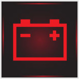

Vázszerkezet, vezetőfülke, segédberendezések (1 db., 1 pont)
- 1. Milyen feladatot láthat el a gépkocsira szerelt csörlőberendezés? #704459
- Az elakadt járművek kihúzása (beleértve az önmentést is), illetve különféle tárgyaknak a gépkocsihoz, esetleg a gépkocsi rakfelületére húzása.
- Nehéz tárgyak felemelése.
- Műszaki hibás gépkocsik vontatása.
- Vontatmánybiztosítás, rakományrögzítés.
- 2. Hány és milyen állása van a teherjárművek billenő rakfelületét vezérlő szelepnek? #704488
- Három állása: emelés, süllyesztés, illetve nyugalmi helyzet.
- Két állása: emelés és süllyesztés.
- Négy állása: emelés, süllyesztés, stop és reteszelt helyzet.
- 3. Milyen a tehergépjárművek és pótkocsik vázszerkezetének kialakítása? #704538
- A tehergépjárművek és pótkocsik általában alvázkeretes kialakításúak.
- A tehergépjárművek és pótkocsik felépítményét padlóvázra szerelik.
- A tehergépjárművek és pótkocsik karosszériája önhordó kivitelű.
- A tehergépjárművek és pótkocsik karosszériája általában félönhordó kivitelű.
- 4. Milyen helyzetben állítható meg a billenő rakterű járműveknél a billenő felépítmény? #704766
- Bármely megemelt helyzetben megállítható.
- Csak a két szélső helyzetben lehet megállítani.
- Csak a két szélső és a félig megemelt helyzetben lehet megállítani.
- Terhelten csak a szélső helyzetekben, üresen bármely helyzetben rögzíthető.
- 5. Mi a passzív biztonsági berendezések rendeltetése? #704772
- A passzív biztonsági berendezések mérséklik a bekövetkezett balesetek káros következményeit.
- A passzív biztonsági berendezések elősegítik a balesetek megelőzését.
- 6. A biztonsági öv működése akkor megfelelő, ha... #704776
- hirtelen megrántáskor megakad, és nem mozdul tovább kifelé.
- kis húzásra már megakad, és nem mozdul tovább kifelé.
- hirtelen megrántáskor megakad, majd lassan tovább mozdul kifelé.
- 7. Milyen részekből áll az alvázkeret? #704795
- Két hossztartóból és több kereszttartóból.
- Két hossztartóból.
- Egy hossztartóból és több kereszttartóból.
- 8. Mi az aktív biztonsági berendezések rendeltetése? #704889
- Az aktív biztonsági berendezések elősegítik a balesetek megelőzését.
- Az aktív biztonsági berendezések mérséklik a bekövetkezett balesetek káros következményeit.
- 9. Mi a csörlőberendezés alkalmazásának célja? #714654
- Elakadt járművek mentése, saját elakadt jármű önmentése, elromlott járművek, nehéz tárgyak rakfelületre vontatása.
- Meghibásodott jármű vontatása vonórúd hiányában.
- Konténer raktérre történő felrakása és rögzítése.
- Kerékcsere esetén a jármű emelése.
- 10. A tehergépkocsik és a pótkocsik vázszerkezete általában miért alvázkeretes? #714670
- Ez a megoldás nagyobb erők (terhek) elviselésére alkalmas és egy alváztípusra többféle felépítmény felszerelését teszi lehetővé.
- Így nagyobb haladási sebesség érhető el, különösen kanyarban.
- Így jóval kisebb lehet a jármű menetkész tömege.
- Mert csak így oldható meg a vonójármű és a pótkocsi összekapcsolása.
- 11. Mit akadályoz meg a tehergépkocsikra és pótkocsikra szerelt aláfutásgátló? #714671
- Baleset esetén személygépkocsik aláfutását a tehergépkocsi, vagy pótkocsi alváza alá.
- Pótkocsi felkapcsolása esetén a vonóháromszög beszorulását a tehergépjármű alá.
- Élő állatok bejutását a tehergépjármű alá.
- Illetéktelen személyek behatolását a tehergépkocsi alá.
- 12. Melyek az aktív biztonsági berendezések? #714677
- Kétkörös fékrendszer, megfelelő gumiabroncs, nagy fényerejű, helyesen beállított fényszórók, ABS, ASR, ESP stb.
- Biztonsági övek, övfeszítők, légzsákok, biztonsági szélvédő stb.
- Biztonsági kocsitest, besüllyesztett ajtókilincsek, energiaelnyelő zónák, aláfutásgátlók stb.
- Tűzoltó készülék, elakadásjelző háromszög, láthatósági mellény.
- 13. Melyek a passzív biztonsági berendezések? #714678
- Légzsákok, biztonsági kormányoszlop, biztonsági övek, fejtámlák stb.
- Nagyteljesítményű motor, megfelelő fényerősségű fényszóró, fűthető hátsó szélvédő, ablakmosó- berendezés stb.
- Fűthető hátsó szélvédő, menetdinamikai szabályozórendszer (ESP), az útviszonyoknak megfelelő mintázatú, jó állapotú gumiabroncs stb.
Vonószerkezet a vontatón és a pótkocsin (1 db., 1 pont)
- 14. Kötelező-e a légfékes vontatmányt a kapcsolószerkezeten felül biztonsági lánccal is a vontatóhoz kapcsolni? #704524
- Nem, mert leszakadás esetén az elszakadó töltővezetéknek kell befékeznie a pótkocsit.
- Nem kötelező, de célszerű.
- Igen, minden esetben.
- Félpótkocsik esetén nem, a többi pótkocsi fajta estén igen.

- 15. A képen látható vonószerkezet... #704569
- 3,5 tonnát meghaladó össztömegű forgózsámolyos és központi tengelyes pótkocsik vontatására szolgál.
- 3,5 tonnát meghaladó össztömegű félpótkocsik vontatására szolgál.
- Fék nélküli pótkocsik vontatására szolgál.
- 3,5 tonnát meghaladó össztömegű központi tengelyes és félpótkocsik vontatására szolgál.
- 16. A képen látható csapos vonószerkezet... #704570
- összekapcsolása a vonószemmel automatikusan, szétkapcsolása pedig a 3-as jelű kar segítségével történik.
- összekapcsolása a vonószemmel a 3-as jelű kar segítségével, szétkapcsolása pedig automatikusan történik.
- összekapcsolása a vonószemmel és szétkapcsolása is automatikusan történik.
- összekapcsolása a vonószemmel és szétkapcsolása is a 3-as jelű kar segítségével történik.
- 17. A képen látható csapos vonószerkezet a véletlen szétkapcsolódás ellen... #704572
- kettős reteszeléssel rendelkezik.
- egyszeres reteszeléssel rendelkezik.
- háromszoros reteszeléssel rendelkezik.
- nem rendelkezik külön reteszeléssel.

- 18. A képen látható 5-ös jelű vonószerkezet... #704584
- egy csapos automatikus vonófej.
- egy vonóháromszög.
- egy vonószem.
- egy vonóhorog.
- 19. A képen látható 5-ös jelű csapos automatikus vonófej... #704585
- forgózsámolyos (vonóháromszöges) és központi tengelyes pótkocsik vontatására alkalmazható.
- forgózsámolyos (vonóháromszöges) és félpótkocsik vontatására alkalmazható.
- központi tengelyes és félpótkocsik vontatására alkalmazható.
- félpótkocsik vontatására alkalmazható.
- 20. Milyen pótkocsi részlete látható a képen? #704673
- Forgózsámolyos pótkocsi átmenő légfékkel.
- Vonórudas pótkocsi átmenő légfékkel.
- Vonórudas pótkocsi ráfutófékkel.
- Félpótkocsi átmenő légfékkel.
- 21. A képen látható 6-os számú alkatrész a vonóháromszög... #704674
- magasságának beálltására és szükség szerinti rögzítésére szolgáló rúd.
- lengéscsillapítója, mely kioltja a haladás közben keletkező veszélyes lengéseket.
- gázrugója, amely szétkapcsoláskor nem engedi a vonóháromszöget a talajra zuhanni..
- stabilizátora, amely megakadályozza a vonóháromszög elcsavarodását.
- 22. A vontatót és a pótkocsit összekapcsoló vonószerkezetnek... #704818
- alakzárónak kell lennie.
- erőzárónak kell lennie.
- alak- és erőzárónak kell lennie.
- 23. A pótkocsi vonószerkezete... #704819
- menet közben történő szétkapcsolódás és a pótkocsi lekapcsolt helyzetében sem érhet le a talajra.
- a pótkocsi lekapcsolt helyzetében nem érhet le a talajra.
- a pótkocsi lekapcsolt helyzetében és menet közben történő szétkapcsolódás esetén is leérhet a talajra.
- menet közben, felkapcsolt helyzetben nem érhet le a talajra.
- 24. A 3,5 tonnánál nagyobb össztömegű pótkocsiknak a gépjárműhöz kapcsolására... #704823
- csak önműködően záró kapcsolószerkezetet szabad használni.
- csak hidraulikus kapcsolószerkezetet szabad használni.
- csak horgos kapcsolószerkezetet szabad használni.
- 25. Milyen elfordulást kell a közúti nyergesvontató nyeregszerkezetének lehetővé tenni a vontató és a félpótkocsi között? #704824
- A függőleges és a keresztirányú tengely körüli elfordulást.
- A függőleges és a hosszirányú tengely körüli elfordulást.
- Hossz- és a keresztirányú tengely körüli elfordulást.
- 26. Állítható-e a pótkocsira szerelt vonóháromszög vonószemének magassági helyzete lekapcsolt állapotban? #704825
- Igen, a vonóháromszögre szerelt csavarrugó előfeszítésével.
- Nem, mert a helyzete mindig ugyanaz.
- Igen, összekapcsoláskor a segítő személynek kell a megfelelő helyzetbe emelnie.
- 27. Milyen módon kapcsolódik össze a félpótkocsi és vontatója? #704826
- A félpótkocsi a vontató nyeregszerkezetére támaszkodik, királycsapja pedig a nyereg zárszerkezetével kapcsolódik össze.
- A pótkocsi vonófeje a vontatóra szerelt vonógömbbel kapcsolódik össze.
- A pótkocsi vonószeme a vontató csapos vonószerkezetével kapcsolódik össze.
- 28. Milyen állítási lehetőségeket valósíthatnak meg a nyergesvontatók nyeregszerkezetein? #704828
- Hosszirányú, illetve magasságállítást.
- Keresztirányú, illetve magasságállítást.
- Hossz- és keresztirányú állítást.
- 29. Hányszoros alakzáró reteszelést kell alkalmazni a nyeregszerkezet zárt állapotának rögzítéséhez? #714713
- Legalább kétszereset.
- Legalább egyszereset.
- 30. A vontató és a félpótkocsi összekapcsolását lehetővé tevő királycsap a járműszerelvény melyik tagján található? #714714
- A félpótkocsin.
- A vontatón
- 31. Mikor vontatható az előírások szerint ráfutó fékkel felszerelt pótkocsi? #724253
- Akkor vontatható, ha a pótkocsi össztömege nem haladja meg a vonó jármű össztömegének a háromnegyedét.
- Akkor vontatható, ha a pótkocsi össztömege nem haladja meg a vonó jármű össztömegét.
- Akkor vontatható, ha a pótkocsi saját tömege nem haladja meg a vonó jármű össztömegének a felét.
- Akkor vontatható, ha a pótkocsi össztömege nem haladja meg a vonó jármű 68 kilogrammal növelt saját tömegének a felét.
Tachográf (1 db., 1 pont)
- 32. Mi a tachográf feladata? #704749
- A járműsebesség, a menet- és állásidő, valamint a megtett út egyidejű regisztrálása.
- A motor fordulatszámának mérése, a nem megengedett fordulatszám-tartomány kijelzése.
- A jármű öndiagnosztikai rendszerének regisztrálásra alkalmas része.
- 33. Milyen típusú tachográf látható az ábrán? #704750
- Analóg kétvezetős tachográf.
- Digitális kétvezetős tachográf.
- Analóg egyvezetős tachográf.
- 34. A gépjárművezető gépjárművezetői kártyájáról legalább hány naponta kell a tárolt adatokat letölteni? #704751
- 28 naponta.
- 7 naponta.
- 365 naponta.
- 35. Egy gépjárművezető hány gépjárművezetői tachográf kártyával rendelkezhet? #704752
- Csak egy gépjárművezetői kártyával.
- Legfeljebb három gépjárművezetői kártyával rendelkezhet.
- Korlátlan számú gépjárművezetői kártyával rendelkezhet.
- 36. A gépjárművezetői kártyán kívül milyen digitális tachográf kártyák vannak még? #704753
- Műhelykártya, ellenőri kártya és üzembentartói kártya.
- Műhelykártya és ellenőri kártya.
- Ellenőri kártya, műhelykártya és biztosítói kártya.
- 37. Be kell-e helyeznie a digitális tachográfba gépkocsivezetői kártyáját az elindulás előtt? #704967
- Igen.
- Csak akkor, ha a járművel 15 km/h-nál gyorsabban fog haladni.
- Nem szükséges.
- 38. Jelzi-e a digitális tachográfkészülék a vezetési idő túllépésének veszélyét járművezetés közben? #704968
- Igen.
- Csak akkor ad figyelmeztetést, amikor az idő túllépése már megtörtént.
- Nem.

- 39. A képen látható digitális tachográfkészüléken... #704969
- az 1-es jelű a kijelző, a 2-es a kalibrálásra és letöltésre alkalmas adapter csatlakozója, a 4-es pedig a tevékenység típusának kiválasztására szolgáló kapcsoló.
- az 1-es jelű a kijelző, a 4-es a tevékenység típusának kiválasztására szolgáló kapcsoló, a 6-os pedig a kiíró.
- a 2-es jelű a tevékenység típusának kiválasztására szolgáló kapcsoló, a 4-es a visszajelző lámpa, az 5-ös pedig a kiíró.
- 40. Elindulhat-e azonnal gépkocsijával, amint a vezetői kártyáját a digitális tachográfkészülékbe elhelyezte? #704970
- Csak azt követően, hogy a digitális tachográf a kártyáját már felismerte, és Ön válaszolt a kijelzőn megjelenő kérdésekre.
- Addig nem, amíg a kártya ellenőrzését követően a tachográf ellenőrző lámpája nem vált zöld színűre.
- Igen.
- 41. Hogyan működik tovább a digitális tachográf, ha a gépkocsivezetői kártya memóriája megtelik? #704971
- A készülék automatikusan felülírja a kártyán található legrégebbi adatokat.
- A készülék tömöríti a kártyán található adatokat, amelyeket ezután már csak szakműhelyben lehet olvashatóvá tenni.
- A tachográf nem rögzít több adatot a kártyára.
- 42. Hány nap eseményeit tárolja el a digitális tachográf fedélzeti egysége? #704972
- 365 nap.
- 28 nap.
- 180 nap.
- 43. Mely kártyatípusokkal lehetséges a fedélzeti egység letöltése? #704973
- A műhely-, az üzembentartói és az ellenőri kártyákkal.
- Csak a járművezető kártyájával.
- Csak a műhelykártyával.
- 44. Melyik egység tárolja a digitális tachográf által rögzített adatokat? #704974
- A gépkocsivezetői kártya, illetve a fedélzeti egység is egymástól függetlenül.
- Csak a járművezető kártyája.
- Csak a tachográf fedélzeti egysége.
- 45. Mit tapasztal akkor, amikor a gépkocsivezetői kártya digitális tachográfba történő behelyezése nélkül indul el? #704975
- A kártya nélküli vezetésről figyelmeztető üzenetet kap a tachográf kijelzőjén.
- A kártyáját menet közben már nem tudja behelyezni. Ehhez a járművel meg kell állni, a motort le kell állítani.
- Erről nem kap külön jelzést vagy figyelmeztetést.
- 46. Mit kell felírni az analóg tachográf korongjára indulás előtt? #721217
- A járművezető nevét, a jármű forgalmi rendszámát, az induló helység nevét, az indulás dátumát és a km számláló állását.
- A járművezető és a célállomás nevét.
- A jármű típusát, a rakomány megnevezését és a célállomás nevét.
- 47. Hány évig érvényes a digitális tachográfban használt gépjárművezetői kártya? #721218
- 5 évig érvényes.
- 1 évig érvényes.
- 2 évig érvényes.
- 48. Járművezetőként Önnek hány érvényes gépjárművezetői kártyája lehet a digitális tachográfhoz? #721219
- Csak egy, amely tartalmazza a fényképét és az adatait.
- Legfeljebb kettő, és a második csak külön hatósági engedéllyel használható.
- Több is lehet, mert országonként külön kártyát kell kiváltani.
- 49. Milyen eszköz a tachográf? #721220
- A gépkocsi sebességét, menet- és állásidejét, valamint megtett útját rögzítő berendezés.
- Kilométer-számláló.
- A gépjármű üzemanyag-takarékos vezetését elősegítő, tájékoztató műszer.
- 50. Hány, különböző jogosultsági szintű kártya létezik a digitális tachográfhoz? #721221
- Négy típusa létezik: a gépjárművezetői, az üzembentartói, a műhely- és az ellenőri.
- Két típusa van: a gépkocsivezetői és a műhelykártya.
- Három: a gépjárművezetői, az üzembentartói és az ellenőri kártya.
- 51. Mikor világít a tachográf működés ellenőrző lámpája? #724218
- Amikor a tachográf hiba miatt nem működik, vagy nincs korong a tachográfban.
- A jármű üzeme során folyamatosan világít.
- A tachográf korong behelyezése után egészen a korong kivételéig világít.
- 52. Hogyan kell behelyezni a gépjárművezetői kártyát a digitális tachográfba? #724219
- A kártya chip részével felfelé.
- A kártya chip részével lefelé.
- Nem kötött a kártya behelyezési módja.
- 53. Hogy kell a gépkocsivezetői kártyát behelyezni a digitális tachográfba? #724220
- A chip felfelé nézzen.
- A chip lefelé nézzen.
- Tetszőleges helyzetben.
- 54. Kötelező-e a digitális tachográfot 2 évente kalibrálni? #724221
- Igen.
- Csak abban az esetben, amikor új, főként, ha más méretű gumiabroncsot szerelnek fel a járműre.
- Nem.
- 55. Gépkocsija digitális tachográffal van felszerelve. Ön elvesztette a gépjárművezetői kártyáját. Szükséges-e a munkanap végén kinyomatot készítenie az aznapi fuvartevékenységének igazolására? #724222
- Igen.
- Nem szükséges.
- 56. Hány évig érvényes a digitális tachográfban használt gépkocsivezetői kártya? #724223
- Öt évig.
- Három évig.
- Egy évig.
- 57. Rögzíti-e a gépjármű sebességtúllépéseit a digitális tachográf? #724225
- Beállítástól függően a berendezés rögzíti a gépjármű egy percet meghaladó folyamatos gyorshajtását.
- Minden esetben a 90 km/h-nál nagyobb sebességű haladást rögzíti.
- Igen, a berendezés képes az adott útszakaszon érvényes megengedett haladási sebességhez képest rögzíteni a sebességhatár átlépését.
Belsőégésű motorok (Otto és dízel) működése, felépítése (1 db., 1 pont)
- 58. A dízelmotorok fajlagos tüzelőanyag-fogyasztása az Otto-motorokéhoz képest... #704404
- alacsonyabb.
- ugyanannyi.
- magasabb.
- 59. Milyen módon állíthatók le a dízelmotorok? #704409
- A gázolaj-befecskendezés megszüntetésével.
- Az izzítógyertyák kikapcsolásával.
- A szívócső elzárásával.
- A gyújtógyertyák áramkörének megszakításával.
- 60. A motor és a hűtő közti csőszakaszba épített termosztát... #704422
- segíti a motor gyorsabb felmelegedését, meggátolja a túlhűtést.
- álló motornál is lehetővé teszi a gépkocsi fűtését.
- határolja a hűtőrendszer nyomását.
- megakadályozza a hűtőfolyadék felforrását.
- 61. Melyik állítás igaz a négyütemű dízel- és Otto-motorokra? #704453
- Szívó- és kipufogónyílásait szelepek nyitják, illetve zárják.
- Szívónyílását a dugattyú, kipufogónyílását szelep nyitja és zárja.
- Kipufogónyílását a dugattyú, szívónyílását szelep nyitja és zárja.
- Résvezérléssel működnek, szívó- és kipufogónyílásait is a dugattyú nyitja és zárja.

- 62. Egy motorolaj címkéjén a képen látható SAE 5W 30 jelölés a motorolaj... #704472
- viszkozitási indexe, melynek értéke ebben az esetben egy télen és nyáron egyaránt használható olajra utal.
- teljesítményszintjét jelöli és ebben az esetben egy kizárólag Otto-motorokban felhasználható olajra utal.
- teljesítményszintjét jelöli és ebben az esetben egy kizárólag dízelmotorokban felhasználható olajra utal.
- teljesítményszintjét jelöli és ebben az esetben egy nagy teljesítményű motorokban felhasználható olajra utal.
- 63. Ha a motor nem melegedett még fel, akkor a termosztát... #704486
- zárja a hűtőtest felé vezető csőágat, így hamarabb felmelegszik a motor az üzemi hőmérsékletére.
- csökkenti a vízszivattyú fordulatszámát, így a motor gyorsabban éri el az üzemi hőmérséklet-tartományát.
- kikapcsolja a ventilátor hajtását, hogy a motor rövidebb idő alatt érje el az üzemi hőmérsékletét.
- elektromos fűtőszálával járulékosan melegíti a hűtőfolyadékot.
- 64. Melyik igaz a négyütemű dízelmotorra az alábbi megállapítások közül? #704492
- A felső holtpont előtt - az égéstérben összesűrített levegőbe - gázolajat porlaszt a befecskendező egység.
- Külső keverékképzésű, tehát a hengertérbe a szívóütemben levegő-gázolaj keveréket szív be.
- A felső holtpont közelében, a sűrítési ütem végén a befecskendezett gázolajat elektromos szikrával gyújtják meg.
- A felső holtpont közelében, a sűrítési ütem végén a befecskendezett gázolajat az izzítógyertyával gyújtják meg.
- 65. Mi történik, amikor a dízemotor tüzelőanyag-ellátó rendszerébe üzem közben levegő kerül? #704503
- Leáll a motor.
- A motor tüzelőanyag-fogyasztása jelentősen megnövekszik.
- A motor teljesítménye kis mértékben csökken.
- Semmi, ez nem befolyásolja érdemben a motor működését.
- 66. Miért szükséges levegőszűrőt alkalmazni a beszívott levegő tisztítására? #704505
- A motor alkatrészeinek kisebb kopása, hosszabb élettartama érdekében.
- A jobb keverékképzés érdekében.
- Mert a szennyeződések nagymértékben rontják a motor égésfolyamatát.
- 67. Milyen a négyütemű Otto-, illetve dízelmotor olajozási rendszere? #704537
- Minden esetben szivattyús olajozású, melyet részben szóró olajozással egészíthetnek ki.
- Szóró olajozású.
- Keverékolajozású.
- 68. Milyen ütem lehetséges a négyütemű Otto-, vagy dízelmotor hengerében, ha a dugattyú a felső holtpont felé mozog, és mind a szívó- mind a kipufogószelep zárva van? #704722
- Sűrítés.
- Kipufogás.
- Terjeszkedés.
- Szívás.
- 69. Melyik motornak kisebb a kompresszióviszonya? #704839
- Az Otto-motornak.
- A dízelmotornak.
- Mindkét motornak közel azonos a kompresszióviszonya.
- 70. Négyütemű dízelmotornál mit szív be a dugattyú a nyitott szívószelepen keresztül az égéstérbe? #704883
- Levegőt.
- Benzin-levegő keveréket.
- Gázolaj-levegő keveréket.
- Benzin-gázolaj-levegő keveréket.
- 71. Korszerű, osztatlan égésterű, négyütemű dízelmotornál eredeti térfogatának hányad részére sűríti össze a dugattyú a levegőt a hengerben? #704905
- 1/14-1/18 részére.
- 1/9-1/13 részére.
- 1/20-1/30 részére.
- 1/3-1/4 részére.
- 72. A dízelmotor hengerébe befecskendezett gázolajat... #704910
- a levegő összesűrítése következtében fejlődő hő gyújtja meg.
- villamos gyújtószikra gyújtja meg.
- az előkamrában levő izzógyertya gyújtja meg.
- a felhevült dugattyú gyújtja meg.
- 73. Melyik motornak jobb a hatásfoka és ezáltal alacsonyabb a fajlagos tüzelőanyag-fogyasztása? #704953
- A dízelmotoré.
- Az Otto-motoré.
- A dízelmotor és az Otto-motor hatásfoka azonos.
- 74. Mi a szerepe az izzógyertyáknak a hideg dízelmotor beindításakor? #714526
- Az égéstérbe belépő levegő felmelegítése.
- A befecskendezett gázolaj meggyújtása hideg motor esetében.
- Az égéstér és a henger falának felmelegítése.
- A tüzelőanyagtartályban található gázolaj felmelegítése.
- 75. Mi a turbófeltöltő alkalmazásának célja négyütemű dízelmotornál? #714527
- Több levegőben több tüzelőanyag égethető el, ami teljesítménynövekedést eredményez.
- Így magasabb tüzelőanyag befecskendezési nyomást lehet elérni.
- Így magasabb lehet a motor maximális fordulatszáma.
- Csak így lehet közvetlen befecskendezést alkalmazni.
- 76. A négyütemű Otto- és dízelmotorok... #724162
- szívó- és kipufogónyílásait is szelepek nyitják, illetve zárják.
- kipufogónyílását szelep nyitja és zárja, szívónyílása a henger falán található, amelyet a dugattyú nyit és zár.
- résvezérléssel működnek, kipufogó- és szívónyílásaikat a dugattyú nyitja és zárja.
- szívónyílását szelep nyitja és zárja, kipufogónyílása a henger falán található, amelyet a dugattyú nyit és zár.
Elektromos rendszerek (a gépkocsin/vontatón), akkumulátor, generátor, vezetékek, csatlakozók, biztosítékok (1 db., 1 pont)
- 77. Milyen szerepet tölt be a biztosíték az áramkörben? #704411
- Zárlat bekövetkezésekor megszakítja az áramkört, hogy az áramerősség ne haladhassa meg a megengedett értéket.
- Akkor szakítja meg az áramkört, ha a feszültség meghaladja a megengedett értéket.
- A generátor túltöltése esetén megszakítja az áramkört, ezzel védi a fogyasztókat.
- Rövidzárlat esetén tartalék áramkörre kapcsol.
- 78. Megfelelő működés esetén az irányjelző percenkénti felvillanásainak száma... #704451
- 60-120.
- 30-60.
- 120-150.
- 15-20.
- 79. Gépkocsijának vagy vontatmányának féklámpái meghibásodtak. Részt vehet-e így a közúti forgalomban? #704466
- Nem.
- Igen, de a hibát minél előbb ki kell javíttatnia.
- 80. Mi a gépjármű generátorának a feladata? #704495
- Igény szerint a fogyasztók közvetlen energiaellátása, illetve az akkumulátor töltése.
- A lemerült akkumulátor töltése.
- Bizonyos villamos fogyasztók közvetlen áramellátása.
- A tüzelőanyag-levegő keverék előállítása a motor részére.
- 81. Miért tilos a kiolvadt biztosítékot dróttal, szöggel vagy egyéb fémtárggyal kiváltani? #704534
- Mert zárlat esetén a vezetékek izzásba jöhetnek, és ezzel tüzet okozhatnak.
- Mert ebben az esetben a túlfeszültség miatt hamarabb kiégnek az izzólámpák, tönkremennek a fogyasztók.
- Mert ebben az esetben lemerülhet az akkumulátor.
- Mert így bizonyos fogyasztók működése rendellenessé válthat.

- 82. A képen látható 1-es jelű biztosíték színe és számfelirata... #704545
- arra az áramerősségre utal, amelynél az kiolvad.
- egyértelműen meghatározza, hogy az melyik áramkör biztosítására szolgál.
- arra a hálózati feszültségre utal, amelynél az alkalmazható.
- azt a járműtípust határozza meg, amelyben az használható.
- 83. A képen látható 1-es jelű biztosítékot szükség esetén vezetékdarabbal, dróttal helyettesíteni... #704546
- tilos.
- lehet.
- lehet, de csak a lehető legrövidebb időre.
- világítóberendezéseket tápláló áramkörök kivételével lehet.
- 84. A képen... #704549
- két, egymással sorba kapcsolt 12 V-os akkumulátor látható.
- két, egymással párhuzamosan kapcsolt 12 V-os akkumulátor látható.
- egy 24 V-os akkumulátor látható.
- egy 12 V-os akkumulátor látható.

- 85. A képen látható akkumulátor adattábláján a 2-es jelű feliratok és az 1-es jelű ’varázsszem’ arra utalnak, hogy... #704581
- az gondozásmentes.
- az rendszeres karbantartást, szükség esetén utántöltést igényel.
- az utántöltést csak akkor igényel, ha a ’varázsszem’ színe zöldről fehérre vált.
- az utántöltést csak akkor igényel, ha a ’varázsszem’ színe zöldről feketére vált.
- 86. A képen látható 1-es jelű alkatrész... #704602
- a generátor.
- az önindító.
- az ablaktörlő motor.
- a vízszivattyú.
- 87. A képen látható 1-es jelű visszajelző lámpa... #704705
- a pótkocsi irányjelzők működését mutatja.
- a vészvillogó működését mutatja.
- a vontató irányjelzőinek működését mutatja.
- a pótkocsi helyzetjelző lámpáinak a működését mutatja.
- 88. Milyen kialakítású a gépjárművek villamos hálózata? #704767
- Egyvezetékes rendszerű, amelyben az akkumulátor negatív pólusát kötik össze a jármű fém vázszerkezetével.
- Egyvezetékes rendszerű, amelyben az akkumulátor pozitív pólusát kötik össze a jármű fém vázszerkezetével.
- Kétvezetékes, ahol minden fogyasztóhoz egy pozitív és egy negatív vezeték van bekötve.
- 89. Mi a biztosíték feladata a jármű villamos hálózatában? #704768
- Rövidzárlat esetén a biztosíték megszakítja az áramkört.
- Rövidzárlat esetén lecsökkenti a fogyasztóra jutó áramerősség nagyságát.
- Egy villamos berendezés meghibásodása esetén hibajelet küld a vezérlőegységnek.
- Rövidzárlat esetén tartalék áramkörre kapcsol.
- 90. Hogyan állítják elő a nehéz haszongépjárművek elektromos rendszerében szokásos 24 V-os fedélzeti feszültséget? #704769
- Két 12 V feszültségű akkumulátor sorba kapcsolásával.
- Két 12 V feszültségű akkumulátor párhuzamos kapcsolásával.
- Egy 24 V feszültségű akkumulátorral.
- Négy 6 V feszültségű akkumulátor sorba kapcsolásával.
- 91. Az akkumulátor kivezető pólusai... #714511
- közül a pozitív a nagyobb átmérőjű.
- azonos átmérőjűek.
- közül a negatív a nagyobb átmérőjű.
- közül a testelést megvalósító a nagyobb átmérőjű.
- 92. Mi a feladata a nehéz haszongépjárműveken alkalmazott akkumulátor-főkapcsolónak? #714512
- A jármű áramtalanítása akkor, ha azt hosszabb ideig nem használjuk.
- A bekapcsolásával hozzuk működésbe az izzógyertyát.
- Leválasztja a nagyobb fogyasztókat a jármű elektromos rendszeréről.
- Kíméli az akkumulátort, mert ha működtetik, akkor a fogyasztókat csak a gépjármű generátora látja el árammal.
- 93. Amikor két darab - egymással folyamatosan sorba kapcsolt - 12 V feszültségű akkumulátor van a járművön, akkor... #714539
- valamennyi fogyasztó, illetve a generátor is 24 V feszültségű.
- valamennyi fogyasztó, illetve a generátor is 12 V feszültségű.
- valamennyi fogyasztó 12 V, a generátor pedig 24 V feszültségű.
- valamennyi fogyasztó, illetve a generátor is 6 V feszültségű.
- 94. Mi a generátor feladata? #714596
- Az akkumulátor töltése és a villamos fogyasztók árammal való ellátása.
- A motor álló helyzetében a villamos fogyasztók árammal való ellátása.
- Az Otto-motor gyújtóberendezésében a nagyfeszültség előállítása.
- A villamos fogyasztók árammal történő ellátása, ha az akkumulátor lemerült, vagy kiszerelték a gépjárműből.
- 95. Milyen színű lehet kizárólag a jármű hátrameneti (tolató) lámpáinak fénye? #714689
- Színtelen (fehér).
- Piros.
- Kadmiumsárga.
- Borostyánsárga vagy fehér.
- 96. A képen látható 6-os jelű visszajelző lámpa... #714693
- a hátsó helyzetjelző ködlámpa bekapcsolt állapotát jelzi.
- a ködfényszóró bekapcsolt állapotát jelzi.
- a tompított fényszóró bekapcsolt állapotát jelzi.
- a pótkocsi helyzetjelő lámpáinak bekapcsolt állapotát jelzi.
- 97. A képen látható akkumulátorok által megvalósított hálózati feszültség... #721099
- 24 V.
- 12 V.
- 6 V.
- 220 V.
- 98. Amikor a dízelmotoros tehergépjármű elektromos hálózata 24 V feszültségű, akkor ezt a feszültséget... #721176
- két - egymással sorba kapcsolt - 12 V feszültségű akkumulátor biztosítja.
- egy darab indítóakkumulátor biztosítja, amelynek névleges feszültsége 24 V.
- két - egymással párhuzamosan kapcsolt - 12 V feszültségű akkumulátor biztosítja.
- egy 12 V feszültségű akkumulátor és egy transzformátor biztosítja.
- 99. Fel kell-e szerelni a járműveket első és hátsó fényvisszaverővel? #721239
- Hátul minden esetben kötelező, elöl a pótkocsikon kötelező.
- Igen, elöl és hátul is kötelező.
- Lehet, de nem kötelező.
- Elöl minden esetben kötelező, hátul csak a pótkocsikon kötelező.
- 100. Milyen színű a gépkocsi hátsó helyzetjelző ködlámpájának működését jelző lámpa fénye a műszerfalon? #721240
- Borostyánsárga.
- Vörös.
- Kék.
- Zöld.
- 101. A képen látható 3-as jelű vezeték... #724160
- a két 12 V-os akkumulátor sorba kapcsolására szolgál.
- az akkumulátorok közös testvezetéke.
- az önindító áramellátásáról gondoskodik.
- a generátorhoz vezet.
- 102. Milyen színű lehet a hátsó helyzetjelző lámpák fénye? #724232
- Piros.
- Kadmiumsárga.
- Fehér.
- Borostyánsárga.
- 103. Milyen színű fényt bocsáthatnak ki a járművek féklámpái? #724234
- Kizárólag piros.
- Fehér vagy kadmiumsárga.
- Borostyánsárga.
- Borostyánsárga vagy piros.
Világító- és jelzőberendezések (a pótkocsin) (1 db., 1 pont)
- 104. Milyen színű hátsó fényvisszaverőket kell alkalmazni a pótkocsikon? #704412
- Piros.
- Kadmiumsárga.
- Zöld.
- Borostyánsárga.
- 105. Kötelező-e a pótkocsira két mellső, fehér helyzetjelző lámpát szerelni? #704448
- Igen, amennyiben a pótkocsi szélessége meghaladja az 1600 mm-t.
- Igen, minden esetben.
- Nem.
- Igen, amennyiben a pótkocsi szélessége meghaladja az 2500 mm-t.
- 106. Milyen színű első fényvisszaverőket kell alkalmazni a pótkocsikon? #704513
- Fehér.
- Piros.
- Borostyánsárga.
- Kadmiumsárga.
- 107. A világításkapcsoló képen látható állásában a vontatóra felkapcsolt pótkocsi helyzetjelző lámpái... #704573
- világítanak.
- nem világítanak.
- csak akkor világítanak, ha a vezető a világításkapcsolót egy kattanásig maga felé húzza, ezzel jelezve, hogy pótkocsit vontat.
- csak akkor világítanak, ha a vezető a világításkapcsolót két kattanásig maga felé húzza, ezzel jelezve, hogy pótkocsit vontat.
- 108. A képen látható pótkocsi hátsó lámpatestben a 2-es jelű alkatrész... #704649
- a háromszög alakú fényvisszaverő.
- a helyzetjelző lámpa.
- a féklámpa.
- a hátsó helyzetjelző ködlámpa.
- 109. A képen látható pótkocsi hátsó lámpatestben az 1-es jelű alkatrész... #704650
- az irányjelző lámpa.
- a helyzetjelző.
- a hátrameneti lámpa.
- a munkahely-megvilágító lámpa.
- 110. A képen látható pótkocsi hátsó lámpatestben a 3-as jelű alkatrész... #704651
- a hátrameneti lámpa.
- az irányjelző lámpa.
- a helyzetjelző.
- a munkahelymegvilágító lámpa.
- 111. A képen látható pótkocsi hátsó, összetett lámpatestje mellett a 4-es jelű alkatrész... #704652
- a munkahelymegvilágító lámpa.
- az irányjelző lámpa.
- a helyzetjelző.
- a hátrameneti lámpa.
- 112. A képen látható pótkocsin a 2-es jelű alkatrész... #704666
- a fényvisszaverővel kombinált első helyzetjelző.
- az első irányjelző lámpa.
- a hátrameneti lámpa.
- a fényvisszaverővel kombinált oldalsó helyzetjelző.
- 113. A képen látható 1-es jelű világító berendezés egy... #704694
- előre fehér, hátra piros fényt kibocsátó méretjelző lámpa.
- pótféklámpa.
- hátsó helyzetjelző lámpa.
- oldalsó helyzetjelző lámpa.
- 114. A pótkocsi irányjelző lámpáinak... #704764
- bekapcsolt állapotát, illetve meghibásodását (izzó kiégését) a vontató vezetőfülkéjében elhelyezett visszajelző lámpa/lámpák jelzik.
- bekapcsolt állapotát, illetve meghibásodását (izzó kiégését) a vontató vezetőfülkéjéből a visszapillantó tükörben lehet ellenőrizni.
- bekapcsolása külön irányjelző kapcsoló segítségével történik.
- 115. Milyen alakú hátsó fényvisszaverővel kell felszerelni a pótkocsit? #704765
- Csúcsával felfelé álló egyenlő oldalú háromszög alakúval.
- Négyzet alakúval.
- Kör alakúval.
- Nyolcszög alakúval.
- 116. Milyen alakú hátsó fényvisszaverőket kell alkalmazni a pótkocsikon? #714680
- Háromszög alakút.
- Négyszög alakút.
- Hatszög alakút.
- Kör alakút.
- 117. A képen látható 3-as jelű világító berendezés egy... #714682
- irányjelző.
- helyzetjelző.
- hátrameneti lámpa.
- munkahely megvilágító lámpa.
- 118. Mikor kötelező felszerelni a pótkocsit két első helyzetjelző lámpával? #714684
- Ha a pótkocsi szélessége meghaladja az 1,6 métert.
- Ha a pótkocsi kéttengelyes és hosszúsága meghaladja a 4 métert.
- Minden esetben.
- 119. Első fényvisszaverővel a pótkocsit... #714685
- fel kell szerelni.
- nem szabad felszerelni.
- fel szabad szerelni.
- 120. Milyen színű lehet a pótkocsin az első fényvisszaverő? #714686
- Fehér színű.
- Bármilyen, csak piros színű nem lehet.
- Borostyánsárga színű.
- Borostyánsárga vagy piros színű lehet.
- 121. A hátsó helyzetjelző ködlámpa által kibocsátott fény... #714687
- piros, visszajelző lámpájának fénye pedig sárga.
- piros, visszajelző lámpájának fénye pedig zöld.
- borostyánsárga, visszajelző lámpájának fénye pedig piros.
- borostyánsárga, visszajelző lámpájának fénye pedig sárga.
- 122. Milyen színű lehet a pótkocsin a hátsó fényvisszaverő? #721233
- Piros színű.
- Fehér színű.
- Borostyánsárga színű.
- Borostyánsárga vagy piros színű lehet.
- 123. Milyen helyzetjelző lámpákkal kell felszerelni a pótkocsit? #721234
- Kettő vagy négy hátsó, és 1,600 mm szélességet meghaladó járművek esetén két első helyzetjelző lámpával.
- Kettő első és kettő hátsó helyzetjelző lámpával.
- Két hátsó helyzetjelző lámpával.
- Kettő vagy négy első, és 1,600 mm szélességet meghaladó járművek esetén két hátsó helyzetjelző lámpával.
- 124. Milyen színű fényt bocsáthat ki a pótkocsi féklámpája? #721235
- Csak piros fényt bocsáthat ki.
- Csak fehér fényt bocsáthat ki.
- Csak kadmiumsárga fényt bocsáthat ki.
- Csak borostyánsárga fényt bocsáthat ki.
- 125. 2100 mm járműszélesség felett láthatósági jelzéssel (kontúrjelző fényvisszaverő fóliacsík) kell felszerelni a... #724229
- 3.500 kg megengedett össztömeget meghaladó pótkocsikat.
- 750 kg megengedett össztömeget meghaladó pótkocsikat.
- 10.000 kg megengedett össztömeget meghaladó pótkocsikat.
- 126. Fel kell-e szerelni hátrameneti lámpával a pótkocsit? #724230
- A 750 kg megengedett össztömeget meghaladó pótkocsikat kötelező.
- Fel lehet szerelni, de nem kötelező.
- Csak akkor szabad felszerelni, ha a vontatón hátrameneti lámpa nem található.
- A pótkocsikat tilos felszerelni hátrameneti lámpával.
- 127. A pótkocsira szerelt hátrameneti lámpa milyen fényt bocsáthat ki? #724231
- Csak fehér színű fényt bocsáthat ki.
- Csak borostyánsárga színű fényt bocsáthat ki.
- Csak piros színű fényt bocsáthat ki.
- Fehér vagy borostyánsára színű fényt bocsáthat ki.
A pótkocsi elektromos energiaellátása, elektromos csatlakozók a vontató és a pótkocsi között (1 db., 1 pont)
- 128. A képen látható 1-es jelű alkatrész... #704548
- egy olvadó biztosíték, amely a vontató egy bizonyos áramkörét védi a túlterheléstől.
- egy ellenőrző lámpát tartalmazó kapcsoló, mellyel a vontató egy bizonyos áramkörét lehet tesztelni.
- egy járműdiagnosztikai célokra használt ellenőrző lámpa.
- egy relé, amely érzékeli a pótkocsi felkapcsolását a vontatóra.
- 129. A képen látható 1-es jelű alkatrész egy nyergesvontató... #704608
- ISO 7638 szerinti, 7 pólusú ABS/EBS csatlakozója.
- ISO 1185 szerinti, 24N típusú, 7 pólusú elektromos csatlakozója.
- ISO 3731 szerinti, 24S típusú, 7 pólusú elektromos csatlakozója.
- ISO 12098 szerinti, 15 pólusú elektromos csatlakozója.
- 130. Milyen hálózati feszültségű járműre szerelhetik fel a képen látható kialakítású, ISO 1185 szerinti, 24N típusú 7 pólusú pótkocsi elektromos csatlakozóaljzatot? #704615
- 24 V.
- 12 V.
- 6 V.
- 42 V.
- 131. Milyen hálózati feszültségű járműre szerelhetik fel a képen látható kialakítású, ISO 3731 szerinti, 24S típusú, 7 pólusú pótkocsi elektromos csatlakozóaljzatot? #704616
- 24 V.
- 12 V.
- 6 V.
- 42 V.
- 132. Mire szolgál a képen látható ISO 12098 szerinti, 15 pólusú pótkocsi elektromos csatlakozóaljzat? #704617
- A vontató és a pótkocsi elektromos rendszereinek összekötésére (az ABS/EBS kapcsolatot kivéve). A pótkocsi világítóberendezéseinek műkdötetésére, egyéb fogyasztók táplálására.
- A pótkocsi valamennyi korszerű elektronikus rendszerének (ABS, EBS, ESP stb.) táplálására, vezérlésére és hibáik visszajelzésére.
- Kizárólag a pókocsi és a vontató elektronikus fékrendszereinek (EBS) megfelelő összekapcsolására.
- A pótkocsi blokkolásgátló rendszerének (ABS) táplálására, vezérlésére és hibáinak visszajelzésére.
- 133. Mi köti össze a pótkocsi villamos hálózatát a vontató villamos hálózatával? #704938
- Többpólusú dugós csatlakozó(k) köti(k) össze.
- Egy pozitív vezeték köti össze, mert a jármű és a pótkocsi villamos hálózata negatív testelésű.
- Egy pozitív és egy negatív vezeték köti össze.
- Nincs szükség összeköttetésre, mert a két jármű elektromos rendszere teljesen független egymástól.
- 134. Az ABS vagy EBS rendszerrel felszerelt pótkocsi esetén a fékrendszer elektromos csatlakozóján keresztül... #704939
- továbbítani kell a fékrendszer hibajelzéseit is a vontató felé.
- csak az ABS vagy EBS rendszerhez szükséges áramot kell biztosítani.
- biztosítani kell a jármű energiatárolójának külső töltési lehetőségét is.
- működtetni kell a pótkocsi féklámpáit is.
- 135. Van-e általában saját akkumulátora és biztosítéktáblája a pótkocsinak? #704940
- Nincs.
- Van.
- 750 kg megengedett össztömeg felett van.
- 3500 kg megengedett össztömeg felett van.
- 136. A vontatót és a pótkocsit összekötő elektromos kábeleket lehet-e rossz helyzetben csatlakoztatni, illetve a különböző csatlakozókat egymással felcserélni? #704941
- Nem, mert a dugalj és a dugvilla kialakítása ezt nem teszi lehetővé.
- Igen, ezért a csatlakoztatásnál fokozott elővigyázatossággal kell eljárni.
- 137. A képen látható 5-ös jelű alkatrész egy félpótkocsi 24S típusú, 7 pólusú... #721092
- elektromos csatlakozója, melyet a 4-es jelű, fekete fedelű, 7 pólusú 24N csatlakozóval együtt használnak a szükséges pólusszám elérés érdekében.
- elektromos csatlakozója, melyet a 4-es jelű, fekete fedelű, 7 pólusú 24N csatlakozó helyett használnak 12 V-os hálózati feszülségű vontató esetén.
- ABS csatlakozója.
- EBS csatlakozója.
- 138. Mire szolgál a képen látható 15 pólusú csatlakozó? #721093
- A vontató és a pótkocsi elektromos rendszerének összekötésére.
- A vontató és a pótkocsi fékrendszerének összekötésére.
- A vontató és a pótkocsi ABS rendszerének összekötésére.
- A vontató és a pótkocsi EBS rendszerének összekötésére.
- 139. Mire szolgálhat a képen látható 7 pólusú csatlakozó? #721094
- A pótkocsi ABS áramellátásának és működés visszajelzésének biztosítására, vagy a vontató és a pótkocsi EBS rendszereinek összekapcsolására.
- A vontató és a pótkocsi fékrendszerének összekötésére.
- A vontató és a pótkocsi ABS rendszerének összekötésére.
- A vontató és a pótkocsi elektromos rendszerének összekötésére.
- 140. Hogyan védik a normál vontatókon, illetve a félpótkocsikon rögzített pótkocsi elektromos csatlakozó dugvillát a szennyeződéstől, amikor ahhoz nem csatlakoztatnak dugaljat? #721095
- Rugóterhelésű, automatikusan a dugvillára záródó védőfedélel.
- A dugalj leszerelésével.
- A dugvilla megfelelő kenésével.
- 141. Milyen megoldást alkalmaznak a vontató és pótkocsija közötti elektromos kapcsolat létrehozására, amióta nem elegendő a hétpólusú 24 N csatlakozó által biztosított pólusszám? #721096
- A 24 N csatlakozó mellett a vontatót és a pótkocsit egy második, 24S csatklakozópárral is összekötik, vagy pedig egy darab 15-pólusú csatlakozópárt használnak.
- A jobb- és baloldali helyzetjelzőket egy közös póluson keresztül táplálják.
- A hiányzó kapcsolatok létrehozására a hétpólusú ABS/EBS csatlakozó fölösleges pólusait használhatják.
- A 24N kiváltására bevezették a 10-pólusú 24S csatlakozópárt.
- 142. Hogyan lehet megvédeni a pótkocsi elektromos csatlakoztatásra szolgáló lengőkábelek dugalját a szennyeződéstől, amikor azokat nem használják? #721097
- A kábelvégen levő dugaljat a járművön elhelyezett, úgynevezett vakdugvillába kell rögzíteni.
- Az elektromos kábelt le kell szerelni.
- A dugalj zárófedelének lehajtásával.
- 143. A képen látható 4-es jelű alkatrész egy félpótkocsi... #724152
- 24N típusú, 7 pólusú elektromos csatlakozója.
- 24S típusú, 7 pólusú elektromos csatlakozója.
- 15 pólusú elektromos csatlakozója.
- ABS/EBS csatlakozója.
- 144. A képen látható 6-os jelű alkatrész egy félpótkocsi... #724153
- 15 pólusú elektromos csatlakozója.
- 24N típusú, 7 pólusú elektromos csatlakozója.
- 24S típusú, 7 pólusú elektromos csatlakozója.
- ABS/EBS csatlakozója.
- 145. A képen látható 7-es jelű alkatrész egy félpótkocsi... #724154
- ABS/EBS csatlakozója.
- 24N típusú, 7 pólusú elektromos csatlakozója.
- 24S típusú, 7 pólusú elektromos csatlakozója.
- 15 pólusú elektromos csatlakozója.
- 146. Mire szolgál a képen látható, félpótkocsi homlokfalára szerelt 24N típusú csatlakozó? #724155
- A vontató és a pótkocsi 24 V-os elektromos rendszereinek összekötésére.
- A vontató és a pótkocsi 12 V-os elektromos rendszereinek összekötésére.
- A vontató és a pótkocsi ABS rendszereinek összekötésére.
- A vontató és a pótkocsi EBS rendszereinek összekötésére.
- 147. Mire szolgál a képen látható, félpótkocsi homlokfalára szerelt 24S típusú csatlakozó? #724156
- A vontató és a pótkocsi 24 V-os elektromos rendszereinek összekötésére.
- A vontató és a pótkocsi 12 V-os elektromos rendszereinek összekötésére.
- A vontató és a pótkocsi ABS rendszereinek összekötésére.
- A vontató és a pótkocsi EBS rendszereinek összekötésére.
- 148. Mi tette szükségessé a képen látható 24S típusú csatlakozók megjelenését a pótkocsikon és vontatóikon? #724157
- Az, hogy az ugyancsak hét pólusú 24N típusú csatlakozó érintkező száma már nem volt elegendő a kötelező és opcionális fogyasztók áramellátásához.
- A 24 V-os hálózati feszültség megjelenése a vontatókon és a pókocsikon.
- A blokkolásgátló rendszerek (ABS) megjelenése, mert ezeknek az áramellátását is meg kellett oldani.
- Az elektronikus fékrendszerek (EBS) megjelenése, mert ezeknek az áramellátását, valamint a vontató és a pótkocsi EBS rendszerei közti kommunikációt is meg kellett oldani.
- 149. A vontató és a pótkocsi blokkolásgátló rendszerei (ABS), illetve elektronikus fékrendszerei (EBS) közül melyek között valósul meg adatáramlás? #724158
- Csak az EBS esetében, az ABS rendszerek egymástól függetlenül működnek.
- Csak az ABS esetében, az EBS rendszerek egymástól függetlenül működnek.
- Mindkét rendszer esetében.
- Egyik rendszer esetében sem.
- 150. Vontathatja-e az elektronikus fékrendszerrel (EBS) felszerelt pótkocsit EBS nélküli vontatóval? #724159
- Igen.
- Nem.
- Igen, de csak csökkentett sebességgel.
- Igen, de csak a járművek telephelyén belül.
Erőátviteli rendszer (a gépkocsin/vontatón) (1 db., 1 pont)
- 151. Amennyiben a tengelykapcsoló csúszik, ... #704437
- menet közben - nagyobb gázadásnál - a motor felpörög, a jármű viszont nem gyorsul.
- a sebességfokozatok kapcsolása csak nehezebben és zajosan végezhető el.
- a motor gyakran lefullad.
- a jármű jobban gyorsul, de megnő a tüzelőanyag fogyasztása.
- 152. Amennyiben a tengelykapcsolónak túl nagy a holtjátéka, a kapcsolat a motor és a sebességváltómű között... #704438
- nem oldható teljesen, a sebességváltás recsegéssel jár.
- nem megfelelő, a tengelykapcsoló ilyenkor folyamatosan csúszik.
- megfelelő, de a tengelykapcsoló működtetése kényelmetlenné válik.
- 153. Mi a tengelykapcsoló szerepe a gépjármű erőátviteli rendszerében? #704455
- Oldható kapcsolatot hoz létre a jármű motorja és a sebességváltó között.
- Oldható kapcsolatot valósít meg a sebességvátó és a differenciálmű között.
- Lehetővé teszi a kétoldali hajtott kerekek különböző fordulatszámú forgását kanyarmenet esetén.
- Lehetővé teszi a motor segédberendezések hajtásának átmeneti lekapcsolását.
- 154. Mi az erőátviteli berendezés főbb elemeinek kapcsolódási sorrendje az ábra alapján a motortól a hajtott kerekek felé haladva? #704456
- Tengelykapcsoló - sebességváltó - kardántengely - differenciálmű.
- Differenciálmű - sebességváltó - kardántengely - tengelykapcsoló.
- Tengelykapcsoló - kardántengely - differenciálmű - sebességváltó.
- Differenciálmű - tengelykapcsoló - sebességváltó - kardántengely.
- 155. A differenciálzár kapcsolásával... #704471
- a jobb és bal oldali féltengelyek közvetlenül összekapcsolhatóak.
- a sebességváltó fokozatainak könnyebb bekapcsolása válik lehetővé.
- kiiktatható az erőátviteli rendszerből a tengelykapcsoló.
- A sebességváltó alsó és felső áttételi sora között lehet átkapcsolni.
- 156. A fokozatosan kopó súrlódóbetétek miatt a tengelykapcsoló holtjátéka a használattal... #704474
- egyre csökken.
- nő.
- változatlan marad.
- 157. Mi a differenciálmű szerepe a gépjárműben? #704494
- A hajtott kerekek fordulatszám-különbségének kiegyenlítését végzi, elsősorban kanyarban.
- A hűtőventilátor változó fordulatszámú hajtását biztosítja.
- Havas, jeges úton megakadályozza a hajtott kerekek kipörgését.
- A sebességváltó fokozatainak recsegésmentes kapcsolását teszi lehetővé.
- 158. Mi az osztómű szerepe a gépjárművek erőátviteli rendszerében? #704497
- Összkerékhajtás esetén megosztja a hajtást a mellső és hátsó tengelyek között.
- A sebességváltó igénybevételét csökkenti.
- Szétosztja a hajtást a jobb és bal oldali kerekek között.
- Ha csak kisebb teljesítményre van szüksgég, akkor lekapcsolja a belsőégésű motor bizonyos hengereit.
- 159. Mi a kardántengely rendeltetése a klasszikus felépítésű tehergépjárműveknél? #704529
- A forgatónyomaték átvitele az alvázra szerelt sebességváltóműtől az úttest egyenetlenségeit követni képes differenciálműhöz.
- A forgatónyomatékot továbbítja a motortól a sebességváltó felé.
- A hajtott merev hídban továbbítja a forgatónyomatékot a differenciálműtől a kerekek felé.
- 160. Mi a sebességváltó feladata? #704771
- A motor forgatónyomatékának módosítása, hátramenet biztosítása és a kerekek tartós függetlenítése a motortól.
- A motor fordulatszámának módosítása a menetellenállások megváltozásának arányában.
- Csúszós úton a kerekek kipörgésének megakadályozása és a hátramenet biztosítása.
- Az ütközés veszélyének felismerése esetén a jármű sebességének gyors csökkentése.
- 161. Mi a kardántengely feladata? #704773
- A forgatónyomaték továbbítása a sebességváltótól a differenciálműig, vagy a differenciálműtől a független felfüggesztésű hajtott kerekekig.
- A forgatónyomaték továbbítása a motortól a differenciálműig.
- A forgatónyomaték továbbítása a tengelykapcsolótól a differenciálműig.
- A forgatónyomaték továbbítása a motortól a differenciálműig, vagy a tengelykapcsolótól a sebességváltóig.
- 162. Mi a tengelykapcsoló feladata? #714589
- Lehetővé teszi a motor és a sebességváltó átmeneti szétválasztását menet közben és álló helyzetben.
- Lehetővé teszi a kardántengely és a differenciálmű összekapcsolását.
- Lehetővé teszi a sebességváltó és a kardántengely átmeneti szélválasztását menet közben és álló helyzetben.
- Lehetővé teszi a motor segédberendezések hajtásának átmeneti lekapcsolását.
- 163. Miként lehet a motor forgatónyomatékát a mechanikus, kézi kapcsolású sebességváltóműben módosítani? #714648
- Eltérő mértékű áttételt biztosító fogaskerékpárokkal.
- Változtatható áttételű ékszíjhajtással.
- Különbözőképpen összekapcsolható bolygóművekkel.
- Változtatható áttételű lánchajtással.
- 164. Amennyiben a tengelykapcsoló nem emel ki, ... #714664
- a sebességfokozatok kapcsolása csak nehezebben és zajosan végezhető el.
- menet közben - nagyobb gázadásnál - a motor felpörög, a jármű viszont nem gyorsul.
- a motor gyakran lefullad.
- 165. Egy orrmotoros, hátsókerékhajtású járműnél milyen sorrendben követik egymást az erőátviteli rendszer elemei a motortól indulva? #721160
- Tengelykapcsoló, sebességváltó, kardántengely, differenciálmű, féltengelyek, kerekek.
- Tengelykapcsoló, féltengely, sebességváltó, kardántengely, kerekek.
- Sebességváltó, tengelykapcsoló, kardántengely, differenciálmű, kerekek.
- Tengelykapcsoló, kardántengely, sebességváltó, differenciálmű, féltengelyek, kerekek.
- 166. Amikor a tengelykapcsolónak egyáltalán nincs holtjátéka, akkor a kapcsolat a motor és a sebességváltómű között... #721224
- nem megfelelő, a tengelykapcsoló megcsúszik.
- nem oldható teljesen, a sebességváltás recsegéssel jár.
- megfelelő, mert így lehetséges a motor nyomatékának továbbítása a sebességváltó felé.
- 167. Amikor a differenciálzárat bekapcsolja, a műszerfalon lévő visszajelző lámpa... #724172
- sárga fénnyel világít.
- pirosan villog.
- sárgán villog.
- kék fénnyel világít.
- 168. Hogyan változik a tengelykapcsoló holtjátéka a súrlódó tárcsa kopásának következtében (ha a működtető rendszer nincs felszerelve automatikus utánállítással)? #724194
- A pedálon mérhető holtjáték csökken.
- A pedálon mérhető holtjáték nő.
- A pedálon mérhető holtjáték nem változik.
- 169. Egy gépjármű erőátviteli rendszerében hol található a féltengely? #724195
- A differenciálmű és a hajtott kerék között.
- A sebességváltó és a differenciálmű között.
- A motor és a sebességváltó között.
- A sebességváltóban.
Kormányberendezés (a gépkocsin/vontatón) (1 db., 1 pont)
- 170. Általában milyen elven működő kormányszervót építenek a tehergépkocsikba? #704435
- Hidraulikus rendszerű kormányszervót.
- Sűrített levegővel működő kormányszervót.
- Rugós működtetésű (mechanikus) kormányszervót.
- Mágneses kormányszervót.
- 171. Melyik a helyes állítás a gépkocsik kormányzásával kapcsolatban? #704452
- A kormányzás általában a jármű első tengelyének két végén csuklósan ágyazott tengelycsonkok elfordításával valósul meg.
- A gépkocsik kormányzását az egész első tengely elfordításával valósítják meg.
- A gépkocsi kormányzása a hátsó tengely kerekeinek a kanyarodással ellentétes irányba történő elfordításával történik.
- A kormányzás a jármű egyik oldali kerekeinek fékezésével valósul meg.
- 172. Működik-e a hidraulikus kormányszervo a motorhibás gépkocsi vontatásakor? #704470
- Nem.
- Igen.
- 173. Mi utal arra menet közben, hogy meghibásodott a hidraulikus kormányszervo? #704504
- A gépjármű kormányzásához a megszokottnál jelentősen nagyobb erőkifejtés szükséges.
- A műszerfalon elhelyezett, borostyánsárga visszajelző lámpa fényjelzése.
- A műszerfalon elhelyezett olajnyomásmérő műszer mutatója a piros mezőben látható.
- Nem lehet kormányozni a géjárművet.
- 174. A járműnek (járműszerelvénynek) olyan mértékben kell kormányozhatónak lennie, hogy... #704799
- 12,5 méter sugarú körön belül meg tudjon fordulni.
- 6 méter sugarú körön belül meg tudjon fordulni.
- 30 méter sugarú körön belül meg tudjon fordulni.
- 3 méter sugarú körön belül meg tudjon fordulni.
- 175. Mi a kormánytrapéz feladata? #704802
- A gépjármű kormányzott kerekei fordulási szögeltérésének biztosítása.
- Megkönnyíti a járműszerelvény kormányzását.
- Szervohatásával csökkenti a kormányzási erőt.
- Közvetíti a kormánykerék elfordulását a kormányműhöz.
- 176. Miért van szükség szervokormányok alkalmazására? #704804
- Mert - különösen nagy tömegű járművek esetén - a kormányzott kerekek elfordítása rásegítés nélkül már túl nagy erőt követelne a járművezetőtől.
- Mert a nagy tömegű járművek kormányművei önzáróak és rásegítés nélkül nem lehetne azokat az egyenesmeneti állásba visszaállítani.
- Mert rásegítés nélkül túl nagy lenne a kormányszerkezet holtjátéka.
- Mert rásegítés nélkül a nagy tömegű gépjárművek nem lennének alkalmasak pótkocsi vontatására.
- 177. Üzem közben miből lehet felismerni, hogy a szervokormány nem működik? #704807
- A kormányzási erő jelentősen megemelkedik.
- A műszerfalon található visszajelző lámpa jelzi.
- A hidraulikus rendszerbe bekötött nyomásmérő műszer jelzi.
- A szervokormány jellegzetes, búgó hangjából.
- 178. Lehet-e érzékelhető holtjátéka a hibátlan kormányszerkezetnek? #714619
- Igen, lehet.
- Egyáltalán nem lehet.
- 179. Milyen elven működő kormányszervót építenek általában a tehergépkocsikba? #714620
- Hidraulikus rendszerű kormányszervót.
- Sűrített levegővel működő kormányszervót.
- Rugós működtetésű (mechanikus) kormányszervót.
- 180. A gépkocsik kormányzása... #714621
- tengelycsonk kormányzás.
- tengely kormányzás.
- forgózsámolyos kormányzás.
- vonórudas kormányzás.
- 181. Haszongépjárművek szervokormányműveihez általában milyen rásegítő erőt alkalmaznak? #714622
- Hidraulikus rásegítő erőt.
- Pneumatikus rásegítő erőt.
- Elektromos rásegítő erőt.
- Szervorugók által szolgáltatott rásegítő erőt.
A pótkocsi, illetve a járműszerelvény kormányzása (1 db., 1 pont)
- 182. A járművszerelvény kanyarodási folyosója általában... #704720
- szélesebb, mint a vontatóé és a pótkocsik befelé ’söpörnek’.
- szélesebb, mint a vontatóé és a pótkocsik kifelé ’söpörnek’.
- a pótkocsik automatikus kormányzási funkciójának köszönhetően megegyezik a vontatóéval.
- keskenyebb, mint a vontatóé.
- 183. A vontatóhoz kapcsolt forgózsámolyos pótkocsi vonórúdja kormányzáskor... #704846
- az egész első tengelyt elfordítja.
- a jobb első tengelycsonkot fordítja el rudazat közvetítésével.
- mindkét oldali tengelycsonkot elfordítja rudazat közvetítésével.
- összkerék-kormányzást valósít meg.
- 184. Milyen szerkezet a vonóháromszöges pótkocsik forgózsámolya? #704847
- Egy nagy átmérőjű golyóskoszorú.
- Egy nagy átmérőjű siklócsapágy.
- Egy nyeregszerkezet.
- Egy nagy átmérőjű gumitárcsa.
- 185. A félpótkocsi kerekeinek fordulási sugara a vontató kerekeihez viszonyítva... #704848
- kisebb.
- nagyobb.
- azonos.
- 186. Ha a vontató jármű egyenesen halad a gyártó által megengedett legnagyobb sebességgel, akkor a pótkocsinak... #704849
- túlzott kitérések nélkül, és a kormányberendezés szokatlan rezgése nélkül kell a vontatót követnie.
- nem szabad érezhető ellenállást kifejtenie a vontatóra.
- pontosan a vontató nyomvonalában kell haladnia.
- 187. Melyik pótkocsival lehet megvalósítani a legkedvezőbb kanyarodási folyosó szélességet? #704850
- A központi tengelyes pótkocsival.
- A vonóháromszöges pótkocsival.
- A félpótkocsival.
- 188. Hogyan történik a központi tengelyes pótkocsik kormányzása? #704852
- A vonószerkezet középpontja (vonógömb, csap) körül elfordulva automatikusan beállnak a megfelelő kanyarodási sugárra, tengelyük középvonala a kanyarodási középpont irányába mutat.
- Csak az első két kereket kormányozza a vontató.
- Kizárólag forgózsámollyal oldható meg a kormányzásuk.
- A vontató nyeregszerkezete körül elfordulva automatikusan beállnak a megfelelő kanyarodási sugárra, tengelyük középvonala a kanyarodási középpont irányába mutat.
- 189. Hogyan valósul meg a félpótkocsi kormányzása? #704853
- A félpótkocsin levő királycsap a nyeregszerkezetben elfordulva automatikusan beáll a megfelelő kanyarodási sugárra, tengelye(inek középvonala) a kanyarodási középpontba mutat.
- A hátsó kerekeket kormányozzák, rudazat közvetítésével, tengelycsonk kormányzással.
- A hátsó kerekeket kormányozzák forgózsámolyos kormányzással.
- Az első kerekeket kormányozzák, rudazat közvetítésével, tengelycsonk kormányzással.
- 190. A képen látható 7-es jelű forgózsámoly, amely a vonóháromszög elfordulását lehetővé teszi, egy... #714509
- nagyméretű golyóscsapágy (golyóskoszorú).
- nagyméretű siklócsapágy.
- nagyméretű gumiszoknya.
- nagyméretű gumitárcsa.
- 191. Mire szolgálnak pótkocsikon a talajkormányzású futóművek? #721098
- A gumiabroncsok deformációjának és kopásának csökkentésére a pótkocsi kanyarodásakor.
- A pótkocsi kerekei által felvehető oldalerő növelésére.
- A vonóháromszöges pótkocsi kormányzására.
Gumiabroncsok fajtái, méretei, alkalmazása, keréktárcsák (1 db., 1 pont)
- 192. Milyen kerékpánt megoldásokat használnak a nagy teherbírású járműveken? #704408
- Korábban legtöbbször trilex, illetve lapos ágyazású pántokat használtak, mára elterjedtek a mélyágyazásúak.
- Csak többrészes, trilex kerékpántokat.
- Csak aszimmetrikus, lapos ágyazású kerékpántokat.
- Csak mélyágyazású könnyűfém keréktárcsákat.
- 193. Használhat-e tehergépjárművén vagy pótkocsiján olyan gumiabroncsot, amelyen a bordázat közötti hornyokat utólagos bemarással mélyítették? #704444
- Csak akkor, ha a gumiabroncsot a gyártója erre alkalmasnak jelölte, és az utánvágást a megfelelő engedélyekkel és technológiával rendelkező szakműhelyben, a vonatkozó előírások betartásával végezték.
- Nem, ilyet semmilyen körülmények között nem lehet használni.
- Igen, bármiféle korlátozás nélkül.
- Igen, de csak nem kormányzott tengelyeken.
- 194. A gépjárművek és pótkocsik gumiabroncsai... #704477
- tömlős, illetve tömlő nélküli kialakításúak egyaránt lehetnek.
- kizárólag tömlős kialakításúak lehetnek.
- kizárólag tömlő nélküli kialakításúak lehetnek.
- tömör vagy fúvott kivitelűek lehetnek.
- 195. Miért ajánlatos a téli hónapokban a nyári gumiabroncsok helyett télit használni? #704532
- Azért, mert a téli abroncs havas, síkos úton jobban tapad, mint a nyári.
- Azért, mert a téli abroncsok gördülési ellenállása kisebb, és ezért alacsonyabb a jármű üzemanyag-fogyasztása.
- Azért, mert a téli abroncsok élettartama hosszabb.
- Azért, mert a téli abroncsok defekttűrése hideg időben jobb.

- 196. Mire utal a képen látható gumiabroncson az 1-es jelű TUBELESS felirat? #704559
- Az abroncs tömlő nélküli kivitelben készült.
- Az abroncs csak tömlővel használható.
- Az abroncs futófelületének hornyai utánvágással mélyíthetők.
- Az abroncs futófelülete felújítható.
- 197. Mire utal a képen látható gumiabroncson a 2-es jelű RADIAL felirat? #704560
- Az abroncs radiál szövetszerkezetű.
- Az abroncsot a gyártás során átvilágítással ellenőrizték.
- Az abroncs csak mélyágyázású kerékrtárcsára szerelhető fel.
- Az abroncs kör keresztmetszetű.

- 198. Mit jelent a képen látható gumiabroncson az 1-es jelű M+S felirat? #704561
- Ez egy téli gumiabroncs.
- Ez egy nyári gumiabroncs.
- Ez egy tömlő nélküli gumiabroncs.
- Ez egy radiális szövetszerkezetű gumiabroncs.
- 199. Mit jelent a képen látható gumiabroncson a 2-es jelű 275 felirat? #704562
- A gumiabroncs szélessége 275 mm.
- A gumiabroncs magassága 275 mm.
- A gumiabroncs belső átmérője 275 mm.
- A gumiabroncs külső átmérője 275 mm.
- 200. Mit jelent a képen látható gumiabroncson a 3-as jelű /70 felirat? #704563
- A gumabroncs magassága a szélességének 70 százaléka.
- A gumabroncs szélessége a magasságának 70 százaléka.
- A gumiabroncs profilmélysége 70 mm.
- A gumiabroncs külső átmérője 70 col.
- 201. Mit jelent a képen látható gumiabroncson az 5-ös jelű 22.5 felirat? #704564
- Az abroncs belső átmérője 22,5 col.
- Az abroncs külső átmérője 22,5 col.
- Az abroncs szélessége 22,5 col.
- Az abroncs profilmélysége 22,5 mm.
- 202. Mit jelent a képen látható gumiabroncson a 4-es jelű 150 felirat? #704630
- Az abroncs megengedhető maximális statikus terhelése szóló abroncsozásban a 150-es terheléskódnak felel meg.
- Az abroncs megengedhető maximális statikus terhelése iker abroncsozásban a 150-es terheléskódnak felel meg.
- Az abroncs megengedhető maximális sebessége szóló abroncsozásban 150 km/h.
- Az abroncs megengedhető maximális sebessége iker abroncsozásban 150 km/h.
- 203. Mit jelent a képen látható gumiabroncson az 6-os jelű J felirat? #704631
- Az abroncs megengedhető maximális sebessége a J sebességkódnak felel meg.
- Az abroncs megengedhető maximális statikus terhelése iker abroncsozásban a J terheléskódnak felel meg.
- Az abroncs megengedhető maximális statikus terhelése szóló abroncsozásban a J terheléskódnak felel meg.
- Az abroncs téli mintázatú.
- 204. Az alábbi megállapítások közül melyik felel meg a valóságnak? #704782
- A tömlős gumiabroncs tömlőjének sérülésekor a levegőnyomás hirtelen lecsökken, ami balesetveszélyt okoz.
- A tömlős gumiabroncsnál kevésbé fordulhat elő a durrdefekt.
- A tömlő nélküli gumiabroncsokat csak személygépkocsiknál szabad alkalmazni.
- A tömlő nélküli gumiabroncs legkisebb sérülésekor a levegőnyomás hirtelen lecsökken, ami balesetveszélyt okoz.
- 205. Miért célszerű a téli gumiabroncsokat a meleg idő beálltával nyárira cserélni? #704783
- Nem biztonságos a használatuk, mert a tapadóképességük ilyenkor nem megfelelő és gyorsabban is kopnak.
- Mert a téli gumiabroncs szerkezete melegben megkeményedik, így nem tudja a vonóerőt megfelelően átadni a talajra.
- Mert a nyári gumi jobban rugózik, és ezáltal javítja a menetkényelmet.
- Mert a téli gumiabroncs nyomása nyáron túl magas értékeket érhet el, növelve ezzel a durrdefekt veszélyét.
- 206. Hány Celsius-fokos hőmérséklettől célszerű a nyári gumiabroncsot lecserélni télire? #704784
- Plusz 7 Celsius-fok hőmérséklet alatt.
- Csak akkor ha a hőmérséklet elérte a fagypontot.
- Mínusz 7 Celsius-fok hőmérséklet alatt.
- Plusz 15 Celsius-fok hőmérséklet alatt.
- 207. Milyen gumiabroncsok szerelhetők fel a gépjármű és a pótkocsi azonos tengelyén levő kerekeire? #704786
- Amelyeknek mérete, szerkezete, teherbírása és mintázati jellege azonos.
- Amelyeknek mérete azonos, de lehetnek vegyesen nyári, vagy téli mintázatúak.
- Amelyeknek mérete azonos, de tetszés szerint lehetnek diagonál vagy radiál szerkezetűek.
- 208. Milyen abroncsok szerelhetők fel az egy tengelyen futó kerékpántokra? #714597
- Kizárólag olyan gumiabroncsok, amelyeknek a szerkezete, mérete, teherbírása és mintázati jellege is azonos.
- Tetszőleges mintázati jellegű, de azonos méretű, teherbírású és szövetszerkezetű gumiabroncsok.
- Tetszőleges szövetszerkezetű és mintázati jellegű, de azonos méretű és teherbírású gumiabroncsok.
- 209. Lehet-e a tehergépkocsikon és pótkocsijaikon utánvágott gumiabroncsokat használni? #714598
- Igen, de csak akkor, ha ezt a gumiabroncs gyártója az abroncson feltüntetett módon engedélyezi és az utánvágást a vonatkozó előírások betartásával végezték.
- Igen, korlátozás nélkül.
- Nem, az ilyen gumiabroncsok használata szigorúan tilos.
- Igen, de csak nem kormányzott tengelyeken.
- 210. Mit jelent a képen látható gumiabroncson az 6-os jelű M+S felirat? #714607
- Ez egy téli gumiabroncs.
- Ez egy nyári gumiabroncs.
- Ez egy tömlő nélküli gumiabroncs.
- Ez egy radiális szövetszerkezetű gumiabroncs.
- 211. Mit jelent a képen látható gumiabroncson az 1-es jelű 275 felirat? #714610
- A gumiabroncs szélessége 275 mm.
- A gumiabroncs magassága 275 mm.
- A gumiabroncs belső átmérője 275 mm.
- A gumiabroncs külső átmérője 275 mm.
- 212. Mit jelent a képen látható gumiabroncson a 3-as jelű 22.5 felirat? #714611
- Az abroncs belső átmérője 22,5 col.
- Az abroncs külső átmérője 22,5 col.
- Az abroncs szélessége 22,5 col.
- Az abroncs profilmélysége 22,5 mm.
- 213. Hogyan ismerhető fel a tömlőnélküli gumiabroncs? #721166
- A gumiabroncson található Tubeless, TB vagy TBL feliratból.
- A gumiabroncson nem található szelep.
- A gumiabroncson található M+S feliratból.
- A gumiabroncs méretjelzésében található R betűről.
- 214. Ha a gumiabroncs oldalán a 315 R 22,5 méretjelölő szám van feltüntetve, akkor az... #721173
- radiál szövetszerkezetű gumiabroncs, amelynek szélessége 315 mm, a belső átmérője pedig 22,5 hüvelyk (col).
- radiál szövetszerkezetű gumiabroncs, amelynek belső átmérője 315 mm, szélessége pedig 22,5 hüvelyk (col).
- radiál szövetszerkezetű gumiabroncs, amelynek belső átmérője 315 mm, a külső átmérője pedig 22,5 hüvelyk (col).
- diagonál szövetszerkezetű gumiabroncs, amelynek szélessége 315 mm, a belső átmérője pedig 22,5 hüvelyk (col).
- 215. Mit jelent a képen látható gumiabroncson a 2-es jelű /70 felirat? #721174
- A gumiabroncs magasságának és szélességének aránya 70%.
- A gumiabroncs szélességének és magasságának aránya 70%.
- A gumiabroncs profilmélysége 70 mm.
- A gumiabroncs külső átmérője 70 col.
- 216. Ha a gumiabroncs oldalfalán a 10 R 22.5 jelölés látható, akkor az... #721175
- radiál gumiabroncs, amelynek szélessége 10 hüvelyk (col), belső átmérője pedig 22,5 hüvelyk (col).
- radiál gumiabroncs, amelynek belső átmérője 10 hüvelyk (col), szélessége pedig 22,5 hüvelyk (col).
- radiál gumiabroncs, amelynek belső átmérője 10 hüvelyk (col), szélessége pedig 22,5 cm.

- 217. A képen látható 1-es jelű alkatrész egy... #721188
- mélyágyazású könnyűfém keréktárcsa.
- trilex keréktárcsa.
- lapos ágyazású, osztott keréktárcsa.
- 218. Milyen kerékpántokat alkalmaznak általában a tehergépjárműveken és pótkocsijaikon? #721189
- Ma már többnyire mélyágyazású kerékpántokat, de lehet még laposágyazású és trilex kerékpántokkal is találkozni.
- Általában laposágyazású kerékpántokat.
- Kizárólag trilex kerékpántokat.
- Osztott (laposágyazású vagy trilex) kerékpántokat.
- 219. Mit jelent a képen látható gumiabroncson a 4-es jelű R felirat? #724201
- Az abroncs radiál szövetszerkezetű.
- Ez egy téli gumiabroncs.
- Ez egy nyári gumiabroncs.
- Ez egy tömlő nélküli gumiabroncs.
- 220. Mire utal a gumiabroncs oldalfalán a 315/80 R 22.5 méretjelzésben a /80 jelölés? #724202
- Keresztmetszeti viszonyt jelent, amely a gumiabroncs magasságának és szélességének százalékos aránya.
- Sebességindex, amelynek km/h-ban kifejezett értéke táblázatból olvasható ki.
- Terhelésindex, amelynek kg-ban kifejezett értéke táblázatból olvasható ki.
Gumiabroncsok ellenőrzése, kopása (1 db., 1 pont)
- 221. Tehergépjárművek és pótkocsik 0,75 m-t meghaladó átmérőjű gumiabroncsai addig használhatóak, amíg bordázatuk magassága a teljes felületen eléri... #704417
- a 3 mm-t.
- az 1,5 mm-t.
- a 4 mm-t.
- az 1 mm-t.
- 222. Mikor kell a gumiabroncsok nyomását ellenőrizni? #704424
- Még hideg gumiabroncs esetén, indulás előtt.
- Nagyobb sebességű haladást követően, amikor a gumiabroncsok elérték üzemmeleg állapotukat.
- Bármikor lehet ellenőrizni.
- Csak leszerelt keréken lehet megfelelően ellenőrizni.
- 223. A 0,75 m-t meg nem haladó átmérőjű abroncsok a tehergépkocsikon és nehéz pótkocsikon addig használhatóak, ameddig a futófelület bordázatának magassága a teljes felületen eléri... #704426
- az 1,6 mm-t.
- a 4 mm-t.
- a 3 mm-t.
- az 1 mm-t.
- 224. A jármű gumiabroncsaiban... #704479
- mindig az előírásnak megfelelő légnyomásértéket kell beállítani.
- télen alacsonyabb, nyáron magasabb nyomást kell beállítani.
- a járművezető tapasztalatainak megfelelő, optimális nyomást kell beállítani.
- akkora nyomást kell beállítani, hogy a talajjal érintkező rész környékén már ne legyen szemmel látható deformációja.
- 225. Mi okozhatja az ábrán látható gumiabroncs futófelületének rendellenes kopását? #704498
- A gumiabroncsban beállított nyomás nagyobb, mint az előírt érték.
- A lengéscsillapító meghibásodása vagy a kerék kiegyensúlyozatlansága.
- A gumiabroncsban beállított nyomás kisebb, mint az előírt érték.
- Rosszul beállított kerékdőlés vagy -összetartás.

- 226. Mi okozhatja az ábrán látható gumiabroncs futófelületének rendellenes kopását? #704499
- A gumiabroncsban beállított nyomás kisebb, mint az előírt érték.
- Rosszul beállított kerékdőlés vagy -összetartás.
- A gumiabroncsban beállított nyomás nagyobb, mint az előírt érték.
- A lengéscsillapító meghibásodása vagy a kerék kiegyensúlyozatlansága.
- 227. Mi okozhatja az ábrán látható gumiabroncs futófelületének rendellenes kopását? #704500
- Rosszul beállított kerékdőlés.
- A lengéscsillapító meghibásodása vagy a kerék kiegyensúlyozatlansága.
- A gumiabroncsban beállított nyomás nagyobb, mint az előírt érték.
- A gumiabroncsban beállított nyomás kisebb, mint az előírt érték.
- 228. Milyen esetben melegedhet fel menet közben oly mértékben a jármű gumiabroncsa, hogy az akár meg is gyulladhat? #704508
- Ha a gumiabroncsban beállított nyomás jelentősen kisebb az előírtnál, vagy az abroncs nagymértékben túlterhelt.
- Nyári melegben.
- Rossz futómű-beállítás esetén.
- Ha a gumiabroncsban beállított nyomás jelentősen nagyobb az előírtnál.
- 229. Mi okozhatja az ábrán látható gumiabroncs futófelületének rendellenes kopását? #704531
- A lengéscsillapító meghibásodása vagy a kerék kiegyensúlyozatlansága.
- Rosszul beállított kerékdőlés vagy -összetartás.
- A gumiabroncsban beállított nyomás nagyobb, mint az előírt érték.
- A gumiabroncsban beállított nyomás kisebb, mint az előírt érték.
- 230. A képen a jármű sárvédőjén elhelyezett, 1-es jelű, 8,5 bar felirat arra utal, hogy... #704665
- a jármű gyártója által előírt abroncsnyomás 8,5 bar.
- a jármű légfékrendszerének névleges nyomása 8,5 bar.
- a jármű kenőolajnyomása 8,5 bar.
- a jármű mosásakor alkalmazható maximális víznyomás 8,5 bar.
- 231. Mikor kell a légnyomást megmérni a gumiabroncsokban? #704789
- Hetente kell légnyomásmérővel ellenőrizni, lehetőleg indulás előtt a gumiabroncs hideg állapotában.
- Havonta egyszer kell légnyomásmérővel ellenőrizni, a gumiabroncs meleg állapotában.
- Hetente kell ellenőrizni a légnyomást, de elegendő szemrevételezéssel, mert a nyomáscsökkenés jól látható a gumiabroncson.
- Naponta kell légnyomásmérővel ellenőrizni a gumiabroncs üzemmeleg állapotában.
- 232. Hogyan működnek az indirekt gumiabroncs-nyomásellenőrző rendszerek? #704790
- Az ABS, illetve ESP kerékfordulatszám-érzékelők jeleiből kiszámítva felismerik, ha valamelyik kerék nyomása és ezzel sugara kisebb a többinél.
- A kerekek középpontjának távolságát mérik meg a talajtól és ezeket hasonlítják össze.
- Az alacsony nyomású kerekek megváltozott rugózási tulajdonságait ismerik fel.
- 233. Szükséges-e a levegőnyomást csökkenteni a hosszabb út megtétele után felmelegedett gumiabroncsokban, ha az a hőmérséklet növekedésének hatására megemelkedett? #714600
- Nem szükséges.
- Igen, feltétlenül.
- Csak, ha a járművel autópályán közlekedik.
- Csak, ha a jármű sebessége eléri a 80 km/h-t.
- 234. Hatással van-e a jármű üzemanyag-fogyasztására, ha a gumiabroncsok levegőnyomása kisebb az előírtnál? #714601
- Igen, a fogyasztás megnövekszik.
- Igen, a fogyasztás kismértékben csökken.
- Nem, a fogyasztás nem változik.
- Igen, a fogyasztás jelentősen csökken.
- 235. A 3.500 kg megengedett össztömeget meghaladó gépjárművön és pótkocsin a 0,75 métert meg nem haladó átmérőjű gumiabroncs esetén a futófelület mintázatának a magassága a teljes futófelületen el kell hogy érje... #714602
- az 1,6 millimétert.
- a 3 millimétert.
- az 1 millimétert.
- a 4 millimétert.
- 236. A 3.500 kg megengedett össztömeget meghaladó gépjárművön és pótkocsin a 0,75 métert meghaladó átmérőjű gumiabroncs futófelületén a mintázat magassága a teljes futófelületen el kell hogy érje... #714603
- a 3 millimétert.
- az 1 millimétert.
- az 1,6 millimétert.
- a 4 millimétert.
- 237. Lehet-e a járművek gumiabroncs-nyomását üzem közben ellenőrizni? #714604
- Csak akkor, ha a jármű gumiabroncs nyomásellenőrző (TPM, TPMS) rendszerrel rendelkezik.
- Üzem közben csak a gumiabroncs nyomásszabályozó berendezéssel ellátott járműveknél lehet a nyomást ellenőrizni.
- A gépjármű üzeme közben nem lehet a nyomást ellenőrizni, csak álló helyzetben.
- Légfékes gépjárműveken igen, mert ezeknél a féktartályok nyomása megegyezik a gumiabroncsok nyomásával.
- 238. A nehéz haszongépjárművön és pótkocsiján hol kell feltüntetni a gumiabroncsok előírt nyomását? #714605
- Minden kerék közelében fel kell tüntetni (pl. a sárvédőn).
- A jármű kezelési útmutatójában kell feltüntetni és ennek a járművezetőnél kell lennie.
- A vezetőfülke bal első ajtajának belsejében kell egy adattáblán feltüntetni.
- A tanksapka közelében kell feltüntetni.
- 239. Ha a gumiabroncs futófelülete az ábrán látható módon, a külső vagy a belső oldalán kopik, akkor... #714608
- nem megfelelő a futómű beállítása.
- a lengéscsillapító meghibásodott.
- a gumiabroncs légnyomása az előírtnál alacsonyabb.
- a gumiabroncs levegőnyomása az előírtnál nagyobb.
- 240. Ha a gumiabroncs futófelülete a két szélén kopik, akkor... #714609
- a gumiabroncs levegőnyomása az előírtnál kisebb.
- a futómű beállítása nem megfelelő.
- a gumiabroncs levegőnyomása az előírtnál nagyobb.
- meghibásodott a lengéscsillapító, vagy eltörött a rugó.
- 241. Amikor a gumiabroncsok oldalfala az ikerkerekeken összeér, akkor... #721167
- a gumiabroncsok jelentősen túlmelegedhetnek, ezért élettartamuk lecsökken.
- a gépkocsi terhelhetősége megnövekszik.
- a gépkocsi elveszítheti a stabilitását.
- a kerekek helyesen vannak felszerelve a kerékagyra és nyomásuk is megfelelő.
- 242. Mi okozhatja azt, hogy ikerkerekeken a gumiabroncsok oldalfala összeér? #721168
- A gumiabroncsok levegőnyomása alacsonyabb az előírt értéknél, vagy az abroncsok túl vannak terhelve.
- A gumiabroncsok levegőnyomása jóval magasabb az előírt értéknél.
- A gumiabroncsokat helytelenül szerelték fel a keréktárcsára.
- A gumiabroncsokat helyesen szerelték fel a keréktárcsára.
- 243. Változik-e a gumiabroncs nyomása melegedés miatt a jármű üzeme során hosszabb úton? #721169
- A nyomás az abroncs melegedése miatt emelkedni fog, de azt nem kell csökkenteni, mert amikor lehűl, akkor az eredeti érték visszaáll.
- Nem fog megváltozni a levegőnyomás, mert a sebesség növekedésével nő a menetszél hűtőhatása is.
- A nyomás emelkedni fog, ezért azt időnként korrigálni kell, hogy mindig biztonságosan lehessen közlekedni.
- Nem változik meg, mert a gumiabroncsokat kötelező nyomásszabályozó rendszerrel felszerelni.
- 244. Milyen gyakran kell ellenőrizni a gumiabroncsokban az előírt légnyomást légnyomásmérő műszerrel? #721170
- Hetente egyszer, a gumiabroncs hideg állapotában.
- Minden reggel, indulás előtt.
- Naponta többször is, mert használat közben melegszik a gumiabroncs és megnő benne a légnyomás.
- Hetente egyszer, a gumiabroncs üzemmeleg állapotában.
- 245. Ha a gumiabroncs futófelülete az ábrán látható módon középen kopik, akkor... #721171
- a gumiabroncs nyomása az előírtnál magasabb.
- a futómű beállítása nem megfelelő.
- meghibásodott a lengéscsillapító, vagy eltörött a rugó.
- a gumiabroncs légnyomása az előírtnál alacsonyabb.
- 246. Ha a gumiabroncs futófelülete az ábrán látható módon, kagylósan kopik, akkor... #721172
- a lengéscsillapító meghibásodott.
- helytelen a futómű beállítása.
- túlságosan magas a gumiabroncs nyomása.
- a gumiabroncs légnyomása az előírtnál alacsonyabb.
Kerékcsere, gumiabroncsok szerelése, kerékkiegyensúlyozás (1 db., 1 pont)
- 247. Mi a kerék leszerelésének helyes műveleti sorrendje kerékcsere elvégzésekor? #704454
- A jármű rögzítése, a kerékcsavarok fellazítása, a jármű emelése, a csavarok leszerelése, végül a kerék leemelése a kerékagyról.
- A jármű emelése, a csavarok leszerelése, végül a kerék leemelése a kerékagyról.
- A jármű rögzítése, majd emelése, a csavarok leszerelése, végül a kerék leemelése a kerékagyról.
- 248. Amikor a gépjármű kerekei kiegyensúlyozatlanok, akkor nagy haladási sebességnél... #704464
- az első kerekek szitáló, ugráló mozgása miatt a kormánykerék erősen rángat, a jármű nehezen irányítható.
- a jármű felépítménye érezhetően beleng.
- a gumiabroncsok oly mértékben felmelegednek, hogy akár ki is gyulladhatnak.
- nehezebbé válik a sebességváltó fokozatainak kapcsolása.
- 249. Mikor van szükség a gépjármű kerekeinek kiegyensúlyozására? #704506
- Mindig, ha gumiabroncs- vagy tárcsacsere történt, továbbá gumiabroncs-szerelést követően (akkor is, ha ugyanazt a gumiabroncsot szerelik vissza ugyanarra a tárcsára).
- Csak a defektes gumiabroncs javítását követően.
- Minden alkalommal, ha a kereket le- és felszerelik.
- Havi rendszerességgel.
- 250. A képen látható pótkocsin a 4-es jelű alkatrész... #704667
- a pótkerék.
- a forgózsámoly.
- a nyeregszerkezet.
- 251. Legalább hány darabot kell a 3.500 kg össztömeget meghaladó járműveken elhelyezni a képen látható 1-es jelű kerékkitámasztó ékből? #704669
- Kettőt.
- Egyet.
- Négyet.
- Ahány kereke a járműnek van.
- 252. Kerékcsere esetén hová kell elhelyezni az emelőt a jármű megemeléséhez? #704791
- Az adott járműtípusra előírt emelési ponthoz kell elhelyezni az emelőt.
- A futóművek bármelyik kellően erős részéhez el lehet helyezni az emelőt.
- Az alváz bármelyik kellően erős részéhez el lehet helyezni az emelőt.
- 253. Kerékcsere esetén hogyan kell meghúzni a mélyágyazású kerékpánt kerékanyáit (kerékcsavarjait)? #704792
- Átlós irányban haladva, több lépcsőben elérve az előírt meghúzási nyomatékot.
- Több lépcsőben elérve az előírt meghúzási nyomatékot, de a meghúzási sorrend nem kötött.
- Sorban haladva, a lehető legnagyobb meghúzási nyomatékkal.
- Sorban haladva, több lépcsőben elérve az előírt meghúzási nyomatékot.
- 254. Szükséges-e ellenőrizni és utánhúzni a kerékanyákat (kerékcsavarokat) kerékcsere után? #704793
- Igen, kb. 50 km megtétele után kell az ellenőrzést és utánhúzást elvégezni.
- Ha a kerékcsere elvégzésekor a kerékanyákat (kerékcsavarokat) az előírt nyomatékkal meghúzták, akkor nem szükséges ellenőrizni.
- Kb. 1.000-2.000 km megtétele után szükséges elvégezni az ellenőrzést és utánhúzást.
- Igen, ha a jármű rendellenes viselkedéséből arra lehet következtetni, hogy a kerékanyák (kerékcsavarok) meglazulhattak.
- 255. A mélyágyazású keréktárcsára szerelt gumiabroncs cseréjét célszerű-e a gépjárművezetőnek elvégeznie? #704794
- Nem, mert szereléskor a szerelővas kárt okozhat a keréktárcsában és az használhatatlanná válhat.
- Igen, mert a szerelés könnyen elvégezhető.
- A gumiabroncs cseréjét biztonságosan végre tudja hajtani a gépjárművezető, de csak nagy fizikai erőkifejtés árán.
- 256. Ha a teljes értékű pótkerék forgásiránya kötött, akkor mire kell ügyelni a felszerelése esetén? #704796
- Defekt esetén felszerelhető az előírt forgásiránnyal ellentétesen forgó helyre is, de óvatosan kell a továbbiakban vezetni és mielőbb gondoskodni kell a helyes forgásirányú kerék felszereléséről.
- Csak a megfelelő forgásirányú helyre szabad felszerelni.
- Csak a nem kormányzott kerekekre szabad felszerelniés a kerekeket a járművön ennek figyelembevétel, szükség szerint át kell csoportosítani.
- Csak a nem hajtott kerekekre szabad felszerelni és a kerekeket a járművön ennek figyelembevétel, szükség szerint át kell csoportosítani.
- 257. Mit okoz a kerék kiegyensúlyozatlansága? #704797
- Nagyobb sebességnél az első kerekek szitáló mozgása miatt romlik a jármű kormányozhatósága és csökken a gumiabroncsok élettartama.
- Rendellenes egyoldalas gumiabroncs kopást fog eredményezni hosszabb használat esetén.
- Egyenes menetben is folyamatosan működni fog a differenciálmű, ezért az hamarabb elhasználódik.
- Hangos, kereplő zaj keltését.
- 258. Trilexpántos keréknél kerékcsere esetén mi a kerékanyák helyes meghúzási sorrendje? #704798
- A kerékanyákat körkörösen sorban haladva, több lépésben kell meghúzni az előírt meghúzási nyomatékra.
- A kerékanyákat átlósan haladva, több lépésben kell meghúzni az előírt meghúzási nyomatékra.
- Tetszőleges sorrendben lehet meghúzni a kerékanyákat az előírt meghúzási nyomatékra.
- A kerékanyákat átlósan haladva, egy lépésben kell meghúzni az előírt meghúzási nyomatékra.
- 259. Milyen módon kell a kerékcsavarokat, illetve kerékanyákat meghúzni a kerékcserét követően mélyágyas kerékpánt esetén? #714612
- Mindig átlós irányban, fokozatosan meghúzva az előírt nyomatékkal.
- Tetszőleges sorrendben, a lehető legnagyobb nyomatékkal meghúzva.
- Sorban egymás után, rögtön az előírt nyomatékra húzva.
- Sorban egymás után, több lépésben az előírt nyomatékra húzva.
- 260. Milyen össztömegű járműveken kell elhelyezni kötelezően a képen látható 1-es jelű kerékkitámasztó éket? #721178
- 3.500 kg-ot meghaladó össztömeg esetén.
- 750 kg-ot meghaladó össztömeg esetén.
- 7.500 kg-ot meghaladó össztömeg esetén.
- 1.000 kg-ot meghaladó össztömeg esetén.
- 261. Mire szolgálnak a képen látható 4-es jelű alkatrészek? #721179
- Elfordulásukból a kerékanyák meglazulására lehet következtetni.
- A kerékanyák helyes oldási és meghúzási sorrendjét mutatják.
- A kerékanyák megfelelő meghúzási nyomatékát mutatják.
- Ezek a kerékanyák tömítő alátétei.
- 262. Mi a kerék leszerelésének helyes sorrendje? #721180
- Jármű rögzítése, emelő emelési pont alá helyezése, kerékcsavarok meglazítása, jármű emelése, kerékcsavarok eltávolítása, kerék leemelése.
- Jármű rögzítése, jármű emelése, kerékcsavarok meglazítása majd eltávolítása, kerék leemelése.
- Kerékcsavarok meglazítása, jármű emelése, kerékcsavarok eltávolítása, kerék leemelése.
- 263. Küllős agyra hogyan történik a trilexpánt felszerelése? #721181
- A kerékpántot fel kell tolni a küllőkre, fel kell helyezni a szorítókörmöket, majd az ezeket rögzítő anyákat meg kell húzni.
- Ugyanúgy történik a felszerelés, mint a tárcsás keréknél.
- A kerékpántot fel kell tolni a küllőkre, majd a rögzítő csavarokat meg kell húzni.
Kerékfelfüggesztés, rugózás, lengéscsillapítás, emelés-süllyesztés, támasztóláb (1 db., 1 pont)
- 264. A lengéscsillapítók hibája esetén... #704418
- a kerekek és az útfelület kapcsolata romlik, csökken a jármű stabilitása, a gumiabroncsok kopása pedig rendellenessé válik.
- nehezebbé válik a sebességváltás.
- megnő a fékbetétek kopása.
- csökken a jármű gyorsítóképessége.
- 265. A pótkocsi kitámasztólábait véletelenszerű lekapcsolódás ellen... #704433
- megfelelően rögzíteni kell.
- helyretoló rugó rögzíti.
- biztosítókötél rögzíti.
- nem kell külön rögzíteni, mert azok amúgy is fixen a pótkocsi alvázához vannak rögzítve.

- 266. A képen látható 1-es jelű alkatrész... #704598
- a légrugó.
- a lengéscsillapító.
- a légtartály.
- a fékműködtető munkahenger.
- 267. A képen látható 2-es jelű alkatrész... #704599
- a lengéscsillapító.
- a légrugó.
- a légtartály.
- a fékműködtető munkahenger.
- 268. A képen egy... #704611
- pótkocsi emelhető légrugós felfüggesztésű futóműve látható.
- tehergépkocsi légrugós felfüggesztésű hajtott hátsó futóműve látható.
- tehergépkocsi légrugós felfüggesztésű kormányzott mellső futóműve látható.
- pótkocsi emelhető laprugós felfüggesztésű futóműve látható.
- 269. A képen látható 2-es jelű alkatrész... #704613
- a merev futómű hídteste.
- a független kerékfelfüggesztés lengőkarja.
- az alváz kereszttartója.
- 270. A képen látható pótkocsin a 3-as jelű alkatrész... #704668
- a támasztóláb.
- az alváz hossztartója.
- az alváz kereszttartója.

- 271. Mi a képen látható emelő-süllyesztő szelep rendeltetése? #704670
- A jármű felépítményének megfelelő magassága állítható be vele rakodás, cserefelépítmény, konténer le- és felvétele, illetve pótkocsi felkapcsolása esetén.
- A jármű szintmagassága szabályozható vele azért, hogy alkalmazkodni lehessen a különböző út- és terepviszonyokhoz.
- A jármű szintmagassága szabályozható vele azért, hogy a különböző országokban érvényes eltérő előírásokhoz alkalmazkodni tudjon a jármű.
- A billenő felépítmény mozgatása végezhető vele.
- 272. A képen látható félpótkocsi 1-es jelű, bal- és jobboldali támasztólábai... #704700
- együtt mozgathatók a menetirány szerinti jobb oldalon elhelyezett 2-es jelű kézikarral.
- együtt és külön-külön is mozgathatók.
- külön-külön mozgathatók a 2-es jelű kézikarral, illetve annak baloldali párjával.
- 273. Általában milyen a tehergépkocsik és pótkocsijaik kerékfelfüggesztése? #704716
- Általában kapcsolt kerékfelfüggesztésű (merev hidas).
- Általában kettős kereszt-lengőkaros felfüggesztésű.
- Általában ferde- vagy hosszlengőkaros.
- Általában rugózatlan.
- 274. Az emelhető segédfutómű felemelésével... #704717
- csökken a gördülési ellenállás, a tüzelőanyag-fogyasztás és a gumiabroncsok kopása, illetve növelhető a vele párban futó hajtott tengely terhelése.
- kedvezőbb teherelosztás biztosítható az első és a hátsó tengelyek között.
- nagyobb stabilitás biztosítható a terepen mozgó jármű számára.
- nő a jármű terhelhetősége.
- 275. Gépjárműveken és pótkocsikon általában milyen típusú lengéscsillapítót alkalmaznak? #704811
- Hidraulikus, teleszkópos lengéscsillapítókat.
- Lamellás, súrlódásos lengéscsillapítókat.
- Hidraulikus, karos lengéscsillapítókat.
- Mágneses lengéscsillapítókat.
- 276. Milyen típusú rugózással valósítható meg az alvázmagasság-állítás? #704812
- Légrugózással.
- Laprugókkal.
- Csavarrugókkal.
- Gumirugókkal.
- 277. Mi a feladata a pótkocsi támasztóláb(ak)nak? #704813
- Lekapcsolt központi tengelyes és nyerges pótkocsik stabilitásának és vízszintes helyzetének a biztosítása, illetve a szerelvény összekapcsolásakor a pótkocsi magasságának beállítása.
- Kanyarodáskor a túl nagy oldaldőlés, illetve a pótkocsi felborulásának megakadályozása.
- A pótkocsi esetleges leszakadása esetén a pótkocsi gyors és biztonságos megállítása.
- A pótkocsi túlterhelése esetén az alváz derformációjának megakadályozása.
- 278. Mikor célszerű tartósan felemelni az emelhető segédtengelyt? #704814
- Terheletlen, illetve kis terhelésű járműnél.
- Maximálisan terhelt járműnél.
- Meghibásodott jármű vontatásakor.
- Túlterhelt jármű esetén.
- 279. Milyen járműveknél alkalmaznak segédrugóval kombinált laprugót? #704815
- Azoknál, melyeknél nagy a jármű saját tömege és össztömege közötti különbség.
- Azoknál, melyeknél lágy rugózás megvalósítása a cél.
- Azoknál, melyeknél alváz magasságállítást kívánnak megvalósítani.
- Azoknál, melyeknél a főrugó törése esetén is biztosítani kell a rugózás működőképességét.
- 280. Milyen rugózási rendszerek terjedtek el leginkább a korszerű nehéz haszonjárműveknél? #704816
- Laprugós és légrugós.
- Tekercs és torziós rugós.
- Hidarulikus és gázrugós.
- Gumirugós.
- 281. A képen látható emelhető pótkocsifutóművet a rendszernek... #714586
- automatikusan le kell engednie, ha ezt a többi futómű terhelése szükségessé teszi.
- automatikusan fel kell emelnie, ha ezt a többi futómű terhelése lehetővé teszi.
- 282. A képen látható 1-es jelű karral... #714587
- a jármű felépítményének emelése és süllyesztése végezhető.
- a billenő felépítmény mozgása vezérelhető.
- a jármű terhelésének megfelelő fékerőhatárok állíthatók be.
- a jármű terhelésének megfelelő rugózás állítható be.
- 283. Mi történik akkor, ha a lengéscsillapítók állapota nem megfelelő, és nem képesek hatásosan csillapítani a lengéseket? #714624
- Jelentősen leromlik a gépjármű menetstabilitása és az utazás kényelme, valamint a gumiabroncsok kopása is rendellesé válik, illetve megnövekszik.
- Kényelmetlenebbé válik az utazás a gépkocsiban.
- Valamelyest megnövekszik a gumiabroncsok kopása.
- Nehezebbé válik a sebességváltás.
- 284. A képen látható 5-ös jelű alkatrész a... #714625
- lengéscsillapító.
- keresztstabilizátor.
- nyomtávrúd.
- hídtest.
- 285. Mire szolgálnak a képen látható félpótkocsi 1-es jelű támasztólábai? #714661
- A lekapcsolt pótkocsi stabilitásának biztosítására, közel vízszintes helyzetének beállítására, felkapcsoláskor pedig felhasználhatók a királycsap megfelelő magasságának beállítására is.
- Túlterhelt pótkocsi esetén megakadályozzák a pótkocsi alvázkeretének maradandó deformációját és ezzel annak károsodását.
- Kerékcsere esetén ezzel emelhetők fel a pótkocsi cserélendő kerekei.
- 286. A képen látható emelő-süllyesztő szelep 2-es jelű tábláján a 4-es jelű helyzetek... #721157
- a süllyesztéssel, vagy emeléssel beállított helyzet megtartását jelentik.
- a normál rugózást jelentik.
- a folyamatos emelést jelentik.
- a folyamatos süllyesztést jelentik.
- 287. Mi a célja az alvázmagasság állításának? #721158
- Félpótkocsik fel- és lekapcsolásának, illetve rakodási feladatoknak (pl. konténerek fel- és levétele) a megkönnyítése.
- A jármű hasmagasságának növelése rossz minőségű úton, illetve légellenállásának csökkentése nagy sebességű haladásnál.
- A rugó úthosszának megnövelése, ezáltal a menetkényelem javítása.
- A járműmagasság vonatkozásában a különböző országokban érvényes eltérő előírások teljesíthetősége.
- 288. A lengéscsillapítók meghibásodására következtethetünk, ha... #721196
- a gépkocsi menet közben jelentősen beleng és a kerékfelfüggesztés esetenként az ütközőjére felüt.
- nehezebbé válik a sebességváltás.
- az első kerekek szitáló, ugráló mozgása miatt a kormánykerék erősen rángat, a jármű nehezen irányítható.
- a gumiabroncsok oly mértékben felmelegednek, hogy akár ki is gyulladhatnak.
- 289. A képen látható 3-as jelű alkatrész... #724192
- az emelhető pótkocsi futómű emelését végző légrugó.
- az emelhető pótkocsi futóműjének rugózásáért felelős légrugó.
- a pótkocsi egyik légtartálya.
- a lengéscsillapító.
- 290. A képen látható emelő-süllyesztő szelep 2-es jelű tábláján a 3-as jelű helyzet... #724193
- a normál rugózást jelenti.
- a folyamatos emelést jelenti.
- a folyamatos süllyesztést jelenti.
- a süllyesztéssel, vagy emeléssel beállított helyzet megtartását jelenti.
- 291. Miért alkalmaznak a tehergépkocsiknál általában kapcsolt (merev hidas) kerékfelfüggesztést? #724212
- Mert egyszerűbb, olcsóbb és nagy terhek elviselésére alkalmas.
- Mert nagyobb sebesség elérését teszi lehetővé.
- Mert lágyabb rugózást lehet vele megvalósítani.
- Mert ebben a kategóriában hajtott futóművet csak így lehet kialakítani.
Fékrendszerek funkció (üzemi, biztonsági, rögzítő, lassító stb.) és felépítés szerint (hidraulikus, légfék, EBS, kombinált stb.), fékelőírások (1 db., 1 pont)

- 292. Az ábrán bemutatott légfékberendezés... #704442
- kétkörös.
- egykörös.
- háromkörös.
- 293. Befolyásolja-e a járművekre előírt fékezési követelményeket a jármű terhelési állapota? #704465
- Nem.
- Igen, a teljes terhelésű járművek esetében a követelmények enyhébbek.
- Igen, a teljes terhelésű járművek esetében a követelmények szigorúbbak.
- Igen, a részterhelésű járművek esetében a követelmények enyhébbek.
- 294. A megfelelően működő légfékberendezés működési késedelme nem lehet nagyobb, mint... #704482
- 0,6 s.
- 0,2 s.
- 1 s.
- 2 s.
- 295. Melyik fékberendezés rendszervázlata ismerhető fel az ábrán? #704491
- A kétkörös, kombinált, sűrített levegővel működtetett hidraulikus fékrendszeré.
- A kétkörös légfékrendszeré.
- A kétkörös hidraulikus fékrendszeré.
- A sűrített levegős rásegítésű kétkörös hidraulikus fékrendszeré.
- 296. Milyen kialakítású fékberendezés ismerhető fel az ábrán? #704512
- Kétkörös, hidraulikus fékrendszer, elöl tárcsa-, hátul dobfékekkel.
- Egykörös, hidraulikus fékrendszer, elöl-hátul dobfékekkel.
- Kétkörös, hidraulikus fékrendszer, elöl-hátul tárcsafékekkel.
- Kétkörös, hidraulikus fékrendszer, elöl-hátul dobfékekkel.
- 297. Mekkora késedelemmel működik a hidraulikus fékberendezés? #704526
- Kb. 0,2 s.
- Kb. 0,5 s.
- Kb. 0,8 s.
- Kb. 1-1,15 s.
- 298. Miért építik a korszerű haszongépjárművek légfékberendezését két üzemifék-körös kivitelben? #704533
- Mert ha az egyik fékkör meghibásodik, akkor a másikkal a gépjármű még fékezhető marad.
- Mert így az egyik fékkörrel a vontató, a másikkal a pótkocsi kerékfékei működtethetők.
- Mert így az első és hátsó tengelyeken különböző fékerők valósíthatók meg.
- Mert így az üzemi és a rögzítőfék rendszer függetleníthető egymástól.
- 299. A képen látható vonószerkezet egy... #704681
- mechanikus ráfutófékes pótkocsihoz tartozik.
- hidraulikus ráfutófékes pótkocsihoz tartozik.
- fék nélküli pótkcsihoz tartozik.
- átmenő légfékes pótkocsihoz tartozik.
- 300. Mi a mechanikus ráfutófék előnye? #704718
- A szerkezet egyszerű, és a vontatóval történő összekapcsolás után azonnal működőképes állapotban van.
- A vontatóval azonos lefékezettséget biztosít a pótkocsi számára.
- Kevés mozgó alkatrész van benne, ezért gyakorlatilag gondozásmentes.
- Alkalmazásával elérhető, hogy a pótkocsi fékberendezése a vontatóéval egyszerre lépjen működésbe.
- 301. Vontathat-e gépjármű 3,5 tonnánál nagyobb össztömegű hidraulikus ráfutófékkel ellátott pótkocsit? #704721
- Nem.
- Igen.
- 302. Milyen pótkocsikat lehet üzemi és rögzítő fék nélkül forgalomba helyezni? #704730
- Egytengelyes, vagy legfeljebb 1 méter tengelytávolságú, nem kormányozott kerekű kéttengelyes könnyű (750 kg megengedett össztömeget meg nem haladó) pótkocsikat.
- Azokat a pótkocsikat, melyek esetén a járműszerelvényre előírt fékhatásosság csak a vontató fékrendszereivel is teljesíthető.
- Egytengelyes pótkocsikat.
- A 3500 kg megengedett össztömeget nem meghaladó félpótkocsikat.
- 303. A mechanikus ráfutófékkel ellátott pótkocsi milyen erőt használ az üzemi fék vezérlésére és működtetésére? #704840
- A saját tömegére ható tehetetlenségi erőt.
- Egy előfeszített rugóerőt.
- A vonójármű hidraulikus rendszerében beállíott nyomással előállított erőt.
- A vonójármű felől érkező sűrített levegő által kifejtett erőt.
- 304. Mi működteti a pótkocsin található főfékhengert a hidraulikus ráfutófékek esetén? #704854
- A vonófejben fékezéskor hátrafelé mozduló tolórúd.
- A fékvezetéken keresztül a vontatóról érkező sűrített levegő.
- A vontató főfékhengerében előállított folyadéknyomás.
- Egy elektromágnes, amely a gerjesztőáramát a vontatóról kapja.
- 305. Milyen legyen az üzemi fékrendszer fékhatása? #704863
- A fékhatásnak a kétoldali kerekeken megközelítőleg azonosnak kell lennie.
- A fékhatásnak minden keréken azonosnak kell lennie.
- A fékhatásnak minden tengelyen azonosnak kell lennie.
- A fékhatásnak a kormányzott kerekeken kell a legkisebbnek, a hajtott kerekeken pedig a legnagyobbnak lennie
- 306. Milyen fékrendszerrel kell ellátni a gépkocsikat? #704864
- Üzemi-, biztonsági- és rögzítő fékrendszerrel.
- Üzemi-, biztonsági- és tartósfék fékrendszerrel.
- Üzemi- és rögzítő fékrendszerrel.
- Üzemi-, rögzítő- és tartósfék fékrendszerrel.
- 307. Milyen célt szolgál a gépjárművön (esetleg pótkocsin) alkalmazott tartósfék (lassítófék)? #704865
- Lehetővé teszi a járműnek hosszú lejtőn történő tartós, vagy gyakori fékezését a kerékfékszerkezetek túlmelegedése és kopása nélkül.
- Az üzemi fék meghibásodása esetén lehetővé teszi a jármű lassítását és megállítását.
- Megnöveli az üzemi fék fékhatását, mivel azzal párhuzamosan működtethető.
- Ezzel végzik a jármű rögzítőfékezését, de lassításra is használható.
- 308. Mi az EBS (elektronikus fékrendszer) jellemzője? #704867
- Elektronikusan vezérelt légfékrendszer számos kiegészítő funkcióval.
- Blokkolásgátlóval ellátott légfékrendszer.
- Elektronikus, terhelésfüggő fékerőszabályozóval ellátott légfékrendszer.
- Blokkolásgátlóval és kipörgésgátlóval ellátott fékrendszer.
- 309. A pótkocsi üzemi fékrendszerének... #704898
- a jármű összes kerekét fékeznie kell.
- legalább az első két kereket fékeznie kell.
- legalább a két hátsó kereket fékeznie kell.
- legalább egy tengely összes kerekét fékeznie kell.
- 310. Milyen fékezést kell az előírások szerint minden esetben, kötelezően lehetővé tenniük a gépjármű fékberendezéseinek? #714591
- Üzemi, rögzítő és biztonsági fékezést.
- Üzemi, tartós és biztonsági fékezést.
- Üzemi, biztonsági és motorfékezést.
- Rögzítő, biztonsági és motorfékezést.
- 311. Milyen fékrendszer látható az alábbi rajzon? #714592
- Kétkörös, hidraulikus fékrendszer.
- Alacsony nyomású kétkörös légfékrendszer.
- Hidraulikus fékrendszer sűrített levegős rásegítéssel.
- Sűrített levegő működtetésű hidraulikus fékrendszer.
- 312. Milyen fékrendszer látható az alábbi rajzon? #714593
- Kétkörös légfékrendszer.
- Kétkörös hidraulikus fékrendszer vákuumos rásegítéssel.
- Kétkörös hidraulilkus fékrendszer magasnyomású levegőrásegítéssel.
- Kétkörös hidraulikus fékrendszer sűrített levegő működtetéssel.
- 313. A rajzon látható fékrendszer... #714594
- kombinált, sűrített levegő működtetésű hidraulikus fékrendszer.
- magasnyomású kétkörös légfékrendszer.
- hidraulikus fékrendszer vákuumos rásegítéssel.
- magasnyomású kétkörös hidraulikus fékrendszer.
- 314. Az üzemi fékberendezés akkor megfelelő, ... #721161
- ha a fékhatás egy tengely kétoldali kerekein közel azonos, és a jármű fékezés közben nem tér el a menetiránytól.
- ha minden keréken teljesen megegyező fékhatást fejt ki.
- ha a fékhatás a mellső kerekeken legalább kétszer akkora, mint a hátsókon.
- ha minden tengelyen teljesen megegyező fékhatást fejt ki.
Vontató légfékrendszere, üzemi és rögzítő fékrendszer (1 db., 1 pont)
- 315. Hogyan végzi el a jármű rögzítőfékezését az ábrán látható rugóerő-tárolós fékhenger? #704421
- A rögzítőfékszelep az 1-es jelű hengerből kiengedi a sűrített levegőt (megszünteti a túlnyomást), ezáltal az előfeszített 2-es jelű rugó képes elmozdítani a 3-as dugattyút, illetve a 4-es fékrudazatot.
- A rögzítőfékszelep sűrített levegőt enged az 1-es jelű hengerbe, amelynek nyomása a 3-as dugattyút és a 4-es fékrudazatot a 2-es rugó ellenében elmozdítja.
- 316. A rögzítőfék-rendszer... #704439
- legalább a jármű egy tengelyén található összes kereket fékezi, és képes arra, hogy a járművet tartósan rögzítse, akár a vezető távollétében is.
- a jármű összes kerekét fékezi, és képes arra, hogy a járművet tartósan rögzítse, akár a vezető távollétében is.
- a sebességváltó legalacsonyabb fokozatának bekapcsolásával rögzíti a járművet.
- legalább a jármű egy kerekét fékezi, és képes arra, hogy a járművet tartósan rögzítse, akár a vezető távollétében is.
- 317. Amikor a többkörös légfékberendezés valamelyik fékköre tömítetlen, meghibásodik, akkor a védőszelep... #704440
- nem engedi leürülni az ép körök légtartályait, sőt lehetővé teszi azok további töltését is.
- elektromos jelet ad a műszerfalon található fékrendszer figyelmeztető lámpának.
- működésbe hozza a biztonsági fékrendszert.
- 318. Mi a dinamikus fékerőszabályzó rendeltetése? #704468
- A tengelyterhelés függvényében módosítja a fékerőt.
- Az útfelület állapotának (száraz, nedves, havas stb.) megfelelően módosítja a kerékfékerőket.
- Megakadályozza a kerekek blokkolását.
- Megakadályozza a hajtott kerekek kipörgését.
- 319. Mi történik akkor, ha a rugóerő-tárolós fékhengerekkel működtetett rögzítőfék-berendezés légtartályában, a rögzítőfék oldott állapotában a túlnyomás megszűnik? #704502
- A rögzítőfék-berendezés működésbe lép, és befékezi a járművet.
- Ilyenkor nem lehetséges a jármű rögzítőfékezése.
- Nehezebbé válik a rögzítőfékkar behúzása.
- Nem lehet beindítani a motort.
- 320. A képen látható szerkezet egy... #704539
- légfékrendszerbe épített légszárító.
- olajszűrő.
- tüzelőanyag-szűrő.
- levegőszűrő.
- 321. Mire szolgál a rögzítőfékszelep képen látható kontrollállása pótkocsi vontatására alkalmas légfékes géjárművön? #704576
- Annak ellenőrzésére, hogy a vontató rögzítőfékje egyedül (a pótkocsi üzemi fékek nélkül) is képes lesz-e megtartani a szerelvényt az adott helyzetben.
- Annak ellenőrzésére, hogy a pótkocsi rögzítőfékje egyedül is képes lesz-e megtartani a szerelvényt az adott helyzetben.
- Annak ellenőrzésére, hogy a pótkocsi üzemi fékje egyedül is képes-e megtartani a szerelvényt az adott helyzetben.
- Annak ellenőrzésére, hogy a vontató és a pótkocsi rögzítőfékje együttesen képes-e megtartani a szerelvényt az adott helyzetben.
- 322. Hogyan kapcsolható be a pótkocsi vontatására alkalmas légfékes géjárművön a rögzítőfékszelep képen látható kontrollállása? #704577
- A rögzítőfékkart a normál rögzítőfékezési helyzetéből annak lenyomása után hátra kell billenteni.
- A rögzítőfékkart oldott helyzetéből annak lenyomása után hátra kell billenteni.
- A rögzítőfékkart oldott helyzetéből annak lenyomása után előre kell billenteni.
- A rögzítőfékkart a normál rögzítőfékezési helyzetéből annak lenyomása után előre kell billenteni.
- 323. A képen látható tehergépkocsi-alváz pótkocsi fékezésre szolgáló kapcsolófejei közül... #704586
- a 2-es jelű, piros fedelű a töltő-, a 3-as jelű, sárga fedelű a fékezővezetéké.
- a 2-es jelű, piros fedelű a fékező-, a 3-as jelű, sárga fedelű a töltővezetéké.
- 324. A képen látható 2-es jelű alkatrész... #704597
- a légtartály víztelenítő szelepe.
- a tüzelőanyag-tartály leeresztő szelepe.
- a víztartály leeresztő szelepe.
- a légtartály fűtőbetétje.
- 325. Mikor van szükség a képen látható 5-ös jelű műanyag fedél mögött található rugóerőtárolós rögzítőfék henger oldócsavarra? #704601
- Ha a rögzítőfék a fékrendszer hibája esetén normál módon nem oldható, és a járművet vontatni kell.
- Ha meghibásodott a rögzítőfék rendszer, de a járművel feltétlenül tovább kell közlekedni.
- A szükséges rögzítőfékhatás pontos bellításakor.
- A kerékfékszerkezet hézagjának utánállításakor.
- 326. Mit jelent a gépjármű fedélzeti számítógépén a képen látható 1-es jelű kijelzés? #704642
- A két üzemi féklégtartály nyomása egyaránt 11,4 bar.
- A két üzemi fékkörbe kivezérelt kamranyomás egyaránt 11,4 bar.
- A vontató és a pótkocsi légtartályaiban a nyomás egyaránt 11,4 bar.
- Az üzemi fék megfelelő működéséhez szükséges tartálynyomás mindkét fékkörben 11,4 bar.
- 327. Mikor világít a képen bekeretezett visszajelző lámpa? #704709
- Ha a rögzítőféket behúzták, vagy a rugóerőtárolós rögzítőfék tartályaiban nem elegendő a nyomás annak oldásához.
- Ha a rögzítőféket oldották.
- Ha az automata váltó meghibásodott.
- Ha az automata váltót parkolási helyzetbe állították.
- 328. Lehet-e tölteni a gumiabroncsokat a gépjármű sűrítettlevegő-rendszeréből? #704723
- Igen, a nyomásszabályozón elhelyezett abroncstöltő csatlakozó, vagy a fékkörök vizsgálócsatlakozóinak felhasználásával.
- Nem, mert ehhez nem elég a rendszernyomás.
- Általában nem, csak olyan járműveken, amelyek speciális abroncsnyomás vátloztató rendszerrel vannak felszerelve.
- Nem, mert a jármű légfékrendszerében található sűrített levegő ehhez nem elég tiszta.
- 329. Mi a légfékrendszerben található főfékszelep (pedálszelep) feladata? #704725
- A járművezetőnek a fékpedálra gyakorolt láberejével arányos nyomású sűrített levegőt vezérel ki az üzemi fékkörökbe.
- A rözítőfék oldására szolgál.
- A pótkocsira kivezérelt üzemi féknyomást állítja be.
- 330. Miért kell eltávolítani a légtartályokban összegyűlt vizet? #704871
- Mert télen megfagyhat és ezzel üzemképtelenséget okozhat, illetve összenyomhatatlansága miatt csökkenti a tartályok hasznos energiatároló képességét.
- Mert a víz jóval nehezebb, mint a levegő.
- Mert növeli a fékrendszer időkésedelmét.
- 331. Lehet-e víz a jármű(szerelvény) tartályaiban, ha a gépjárművet légszárítóval szerelték fel? #704872
- Csak akkor, ha a légszárító patronja elszennyeződött, vagy a kompresszor nem képes a levegőfogyasztást kellő regenerációs idővel (üresjárattal) biztosítani.
- Igen, mert a légszárító csak részlegesen képes eltávolítani a vizet a sűrített levegőből.
- Nem.
- Igen, ha az átlagosnál magasabb a levegő páratartalma (pl. esős időben).
- 332. Ha a kétkörös légfékberendezés egyik fékköre megsérül akkor... #704873
- a másik fékkörrel a gépjármű fékezhető, de a fékút hosszabb lesz.
- a másik fékkör levegőt enged a sérült fékkörbe a levegővesztés pótlására.
- a másik fékkör átveszi a sérült fékkör feladatát és nagyobb erővel fékez, hogy a jármű előírt fékhatása teljesíthető legyen.
- a másik fékkörrel a gépjármű fékezhető marad, de csak egy alkalommal, mert az utántöltése ennek a fékkörnek is megszakad.
- 333. Mit jelez a két légnyomásmérő-műszer a kétkörös légfékberendezéssel ellátott gépjármű műszerfalán? #704874
- Az egyik műszer az első a másik a második üzemi fékkör tartálynyomását mutatja. Kétmutatós műszerek esetén a piros mutató a fékezőnyomást, a fehér vagy fekete mutató a tartálynoymást jelzi.
- Az egyik nyomásmérő-műszer az üzemi fékkörök kivezérelt nyomását, a másik pedig a rugóerőtárolós rögzítőfék és a segédkör tartálynyomását mutatja.
- Az egyik nyomásmérő-műszer a vontató-, a másik a pótkocsi töltő- és fékezőkör nyomását jelzi vissza.
- Az egyik műszer a kompresszor, a másik a féklégtartályok nyomását mutatja.
- 334. Milyen rögzítőféket alkalmaznak általában a légfékrendszerrel ellátott haszongépjárműveknél? #704876
- Rugóerőtárolós munkahengerrel működtetett rögzítőféket.
- Rudazattal működtetett hidraulikus rögzítőféket.
- A kardántengelyre ható dobfékes rögzítőféket.
- Huzallal műkdtetett mechanikus rögzítőféket.

- 335. A képen látható 1-es jelű alkatrész egy... #714638
- nyergesvontató kétvezetékes pótkocsifékező-rendszerének fékező kapcsolófeje.
- nyergesvontató kétvezetékes pótkocsifékező-rendszerének töltő kapcsolófeje.
- platós tehergépkocsi kétvezetékes pótkocsifékező-rendszerének fékező kapcsolófeje.
- platós tehergépkocsi kétvezetékes pótkocsifékező-rendszerének töltő kapcsolófeje.
- 336. A képen látható 1-es jelű pótkocsi fékező szelepre felszerelt 2-es jelű oldószelep... #714639
- automatikusan visszatér az oldott állapotból a fékezési helyzetbe, ha a pótkocsi töltővezetéke a vontatóra felkapcsolva ismét nyomás alá kerül.
- nem tér automatikusan vissza az oldott állapotból a fékezési helyzetbe, ha a pótkocsit újra felkapcsolják a vontatóra. A fékezési helyzetet a vezetőnek kell beállítania.
- oldott állapotára piros visszajelző lámpa figyelmeztet a vontató műszerfalán.
- fékezési állapotát zöld visszajelző lámpa mutatja a vontató műszerfalán.
- 337. Mi a feladata a vontató légfékrendszerében található pótkocsifék-vezérlő szelepnek? #714640
- Vezérli a pótkocsi fékezését a vontató bármelyik üzemi fékkörének vagy rögzítőfékkörének működésekor, azzal egyidőben és arányosan.
- A pótkocsi leszakadása esetén biztosítja a vontató jármű fékrendszerének működőképességét.
- A pótkocsi terhelésének megfelelően változtatja a vontató jármű fékhatását.
- Érzékeli a pótkocsi felkapcsolását a vontatóra és visszajelző lámpán keresztül tájékoztatja errő a járművezetőt.
- 338. A képen látható 5-ös jelű műanyag fedél kiemelése után válik hozzáférhetővé... #714644
- a rugóerőtárolós rögzítőfék henger oldócsavarja.
- a rugóerőtárolós rögzítőfékkör vizsgálócsatlakozója.
- a rugóerőtárolós rögzítőfék henger nyomásérzékelője.
- a rugóerőtárolós rögzítőfék henger levegőcsatlakozója.
- 339. A sűrített levegő a kétkörös légfék légtartályaiba... #714655
- a többkörös védőszelepen keresztül jut be.
- visszacsapószelepen áthaladva jut be.
- minden esetben nyomáskorlátozó szelepen áthaladva, csökkentett nyomással lép be.
- a pedálszelepen áthaladva lép be.

- 340. A képen látható 3-as jelű alkatrész egy... #714657
- légfékrendszerben alalmazott műanyag csővezeték.
- hidraulikus fékrendszerben alkalmazott műanyag csővezeték.
- tüzelőanyag-rendszerben alkalmazott műanyag csővezeték.
- kenőrendszerben alkalmazott műanyag csővezeték.
- 341. A képen látható 4-es jelű alkatrész egy... #714658
- légfékrendszerben alkalmazott vizsgálócsatlakozó.
- hidraulikus fékrendszerben alkalmazott vizsgálócsatlakozó.
- hidraulikus fékrendszerben alkalmazott gyorscsatlakozó.
- kenőrendszerben alkalmazott gyorscsatlakozó.
- 342. Hogyan érzékeli a jármű terhelési állapotát a légfékrendszerben található dinamikus terhelésfüggő fékerőszabályozó? #714669
- Mechanikus rugózású járműveken a rugók összenyomódását, légrugózású járműveken a légrugónyomást érzékeli.
- A relészelep által előállított nyomást érzékeli, amely arányos a jármű terhelési állapotával.
- A jármű fékezése során a dinamikus átterhelődésből adódó bólintást érzékeli.
- A vezetőnek kell a fékerőszabályozó kézikarján beállítani a jármű terhelési állapotát.
- 343. A képen látható 3-as jelű gyűrűvel a légtartály víztelenítéséhez a víztelenítő szelepet... #714705
- zárt helyzetéből ki kell billenteni, a szelep zárt helyzetbe való visszatérése automatikus.
- az óra járásával ellentétesen ki kell hajtani, majd a víz távozását követően a szelepet ismét meg kell húzni.
- függőleges irányban kb. 2 cm-re ki kell húzni, majd a víz távozását követően el kell engedni, mert a szelep visszatérése a zárt helyzetbe automatikus.
- az óra járásával egyezően ki kell hajtani, majd a víz távozását követően a szelepet ismét meg kell húzni.
- 344. A kép egy nyergesvontató fülkéjének hátfalát és annak környezetét mutatja. Az 1-es és 2-es jelű kapcsolófejek... #721203
- szelepes kivitelűek.
- szabad átmenetűek.
- közül az 1-es jelű szabad átmenetű, a 2-es jelű szelepes.
- közül az 1-es jelű szelepes, a 2-es jelű szabad átmenetű.
- 345. A képen látható berendezés egy... #721204
- pótkocsi-fékezőszelep oldószeleppel.
- pótkocsi-fékvezérlőszelep.
- relészelep.
- fékerőszabályozó.
- 346. Kétvezetékes sűrített levegős fékrendszer esetén a vontatón található két kapcsolófej közül... #721205
- a piros fedelű a töltő, a sárga pedig a fékező csatlakozó.
- a piros fedelű a pótkocsi üzemifék, a sárga pedig a pótkocsi rögzítőfék vezérlésére szolgál.
- a piros fedelű a töltő, a sárga pedig a biztonsági csatlakozó, utóbbi a pótkocsi leszakadásakor biztosítja az automatikus befékeződést.
- a sárga fedelű a töltő, a piros pedig a fékező csatlakozó.
- 347. A rögzítőfék old, ha a rögzítőfékszelep működtető karját elfordítva... #721206
- a rugóerő-tárolós fékhengerbe - a rögzítőfékszelepen át - a légtartály felől beáramló sűrített levegő a dugattyú (vagy membrán) közvetítésével a működtető rugót összenyomja.
- a szelep a rugóerő-tárolós fékhengerekből kiengedi a sűrített levegőt.
- 348. Hány és milyen határozott helyzete van a rugóerőtárolós rögzítőfék kézikarjának vontatást is végző tehergépkocsi esetében? #721207
- Három: fék oldva, rögzítőfékezés (pótkocsi üzemi fék is működik) és ellenőrző állás (pótkocsi üzemi fék oldva).
- Kettő: fék oldva és rögzítőfékezés.
- Három: fék oldva, vontató rögzítőfékezése és pótkocsi rögzítőfékezése.
- 349. Kell-e külön levegőtisztító és fagymentesítő eszközt elhelyezni a légfékrendszerbe, ha abba légszárítót építettek? #721212
- Nem szükséges.
- Igen, erre ilyenkor is szükség van.
- 350. A képen látható 3-as jelű alkatrész... #721260
- a légtartály víztelenítő szelepének nyitására szolgáló gyűrű.
- a tüzelőanyag-tartály leeresztő szelepének nyitására szolgáló gyűrű.
- a víztartály leeresztő szelepének nyitására szolgáló gyűrű.
- a légtartály fűtőbetétjének kihúzására szolgáló gyűrű.
- 351. Hogyan lehet eltávolítani a légtartályokból az esetlegesen összegyűlt vizet? #721261
- A légtartály alján levő kézi működtetésű víztelenítő szelep elbillentésével, esetleg automata víztelenítőszeleppel.
- A tartály alján levő kondenzvíz-leeresztő csavar kicsavarásával.
- A légtartály után kötött víz-olaj leválasztóval.
- A légtartály oldalán található tisztítónyílás szabaddá tételével.
- 352. Hogyan választja ki a légfékrendszer levegőszárítója a levegőben levő vizet? #721262
- A szűrőben levő granulátum megköti a nedvességet, majd a kompresszor üresjáratában a regeneráló tartályból, vagy a rendszerből visszaáramló levegő kiviszi azt a szabadba.
- A szűrőben levő granulátum kiszűri a vizet és eltárolja a regeneráló tartályban, amelyből időnként le kell azt engedni.
- A levegőt felmelegíti, így a benne található nedvesség kicsapódik és a szűrőn át a szabadba távozik.
- A levegőt lehűti, így a benne található nedvesség kicsapódik és a szűrőn át a szabadba távozik.
Lassító fékezés, motorfék, motorfékhatás növelés, retarderek (1 db., 1 pont)
- 353. Működtethető-e egyszerre az üzemi fék és a kipufogófék? #704425
- Igen.
- Nem.
- 354. Általában milyen tehergépjárműben találkozhatunk kipufogófékkel? #704436
- Dízelmotoros gépkocsikban.
- Otto-motoros gépkocsikban.
- Otto- és dízelmotoros gépkocsikban egyaránt.
- Csak feltöltött motorral hajtott gépkocsikban.
- 355. A gépkocsi mely kerekei fékeződnek motorféküzemben? #704478
- Csak azok, amelyek a motorral az erőátviteli berendezéseken keresztül hajtva is vannak.
- Kizárólag az első kerekek.
- Kizárólag a hátsó kerekek.
- Csak a kormányzott kerekek.
- 356. Mi a kipufogófék feladata a nagy össztömegű tehergépjárműveken? #704496
- A gépjármű tartós fékezésére szolgál (pl. hosszú lejtőn), kíméli az üzemifék-berendezést (kopásmentes a működése és tartós igénybevétel hatására sem csökken a fékhatása).
- Lehetővé teszi a jármű fékezését akkor is, ha leállt a motorja.
- Betölti a biztonsági fékrendszer szerepét.
- Leállítja a dízelmotort.
- 357. Mivel működtethető a kipufogófék? #704516
- Sűrített levegő kivezérlésével, többnyire láb-, esetleg kézi kapcsolóval.
- Kézikarral, rudazat közvetítésével.
- Pedállal, rudazat közvetítésével.
- Pedállal, huzal közvetítésével.
- 358. Ha a dízelmotoros gépkocsi meredek lejtőn, motorfékezéssel halad, előfordulhat-e, hogy a motor fordulatszáma túllépi a megengedett maximális értéket? #704519
- Igen, mivel ilyenkor a hajtott kerekek - az erőátviteli rendszeren keresztül - a maximálisan megengedhető fordulatszámnál gyorsabban is forgathatják a motor főtengelyét.
- Nem, mert a dízelmotorok minden esetben rendelkeznek fordulatszám-korlátozóval, amely ezt képes megakadályozni.
- Nem, mert tüzelőnyag-adagolás hiányában ez nem lehetséges.
- Nem, mert ezt a motorfékhatás minden esetben képes megakadályozni.
- 359. A motorfék fékező hatását... #704727
- a motor külső és belső veszteségei (súrlódás, áramlási veszteségek, körfolyamat veszteségei, segédberendezések hajtása) által fejti ki.
- az üzemanyag-adagolás megszüntetése által fejti ki.
- a motorféküzemben csökkenő motorhőmérséklet által fejti ki.
- azáltal fejtii ki, hogy ilyenkor a motorolajat az olajszivattyúnak egy fojtáson kell átáramoltatnia.
- 360. A visszatartófék (tartós- vagy lassító fék) olyan kiegészítő fékrendszer... #704881
- amely alkalmas a fékhatás hosszú időn keresztüli létrehozására és fenntartására anélkül, hogy hatékonysága jelentős mértékben csökkenne.
- amely az üzemi fék meghibásodása esetén képes a járművet az előírt lassulással megállítani.
- amely a járművet vagy járműszerelvényt képes az előírt meredekségű lejtőn vagy emelkedőn megtartani.
- amely pótkocsi vontatása esetén csak a pótkocsi fékszerkezeteit működteti, ezzel a pótkocsi mintegy "visszatartja" a vontatót.
- 361. Miért kritikus a járművek üzemi fékrendszerére nézve a hosszú időtartamú, tartós fékezés (pl. hosszú lejtőn)? #704882
- Mert a kerékfékszerkezetek túlzottan felmelegedhetnek, ami a fékhatás csökkenéséhez, esetleg kieséséhez vezethet (főként dobfékek esetén).
- Mert hosszú fékezés esetén elfogyhat a légtartályokból a fékezéshez szükséges levegő.
- Mert hosszú fékezés esetén a vezetőnek egyre nehezebbé válik a pontos fékhatás beállítása.
- Mert hosszú fékezés során a gumiabroncsok oly mértékben felmelegedhetnek, hogy akár ki is gyulladhatnak.
- 362. Mi a kipufogófék működésének lényege? #704884
- A motor kipufogócsövében a kipufogógázok útját egy fojtószeleppel elzárják, és az így létrejött fojtás miatt megnő a motor fékező teljesítménye.
- A kipufogógáz nyomását felhasználva tudják növelni az üzemi fék hatásosságát.
- A kipufogógáz energiája meghajt egy feltöltőt, az így előállított többlet nyomás felhasználásával növelhető a fékhatás.
- A kipufogógázt visszavezetik a szívócsőbe, ezáltal jelentősen megnövekszik a motorfékhatás.
- 363. A kipufogófék működésével egyidejűleg... #704885
- megszűnik a tüzelőanyag adagolása is.
- nem lehet működtetni az üzemi féket.
- nem lehet működtetni a rögzítő féket.
- megszűnik az akkumulátor töltése.
- 364. Szabályozható-e az örvényáramú retarder fékhatása? #704886
- Igen, a gerjesztőáram változtatásával.
- Nem, csak ki- és bekapcsolt (teljes fékhatás) állapota van.
- Igen, a hűtőrendszerén keresztül, a hőmérsékletének megfelelő szabályozásával.
- Igen a mágneses tárcsák mozgatásával.
- 365. Hogyan hoz létre fékhatást az elektromos örvényáramú retarder? #704887
- A rotor az állórész elektromágnesei által keltett mágneses mezőben forog, és a rotorban indukált örvényáramok elektromágneses hatása fékezi annak forgását.
- A kipufogócsőben egy elektromos motor több lépcsőben állítja a fojtószelepet, ami megnöveli a motor belső ellenállását.
- Az üzemi féket egészíti ki egy elektromos fékkarral, ami gyorsabb fékműködést eredményez.
- A forgórésszel örvénylésre késztetett hidraulikaolaj az állórészen lefékeződik és hővé alakítja a mozgási energiát.
- 366. Amikor a járművezető a kipufogóféket működteti, akkor a motorba tüzelőanyag... #714629
- egyáltalán nem kerül befecskendezésre.
- az üresjárati terhelésnek megfelelő mennyiségben kerül befecskendezésre.
- a mindenkori motorfodulatszámnak megfelelő mennyiségben kerül befecskendezésre.
- a legnagyobb motorfékhatás eléréséhez szükséges kis mennyiségben kerül befecskendezésre.
- 367. Miként gyakorol fékező hatást a motor motorféküzemben? #714630
- A motorban fellépő belső és külső ellenállások (súrlódás, áramlási ellenállások, hajtási veszteségek stb.) hatására.
- A szívó- és a kipufogó-csatornák összekötése révén.
- Otto-motorok esetében a gyújtás kikapcsolása, dízelmotoroknál az alapjárati tüzelőanyag-adagolás megszüntetése révén.
- A generátorra kapcsolt ellenállások megnövelése révén.
Átmenő fékezés, egyvezetékes és kétvezetékes pótkocsi fékező rendszerek elvi kialakítása (1 db., 1 pont)
- 368. Milyen üzemállapotokban töltődik az egyvezetékes pótkocsi fékrendszerének légtartálya? #704413
- Csak akkor töltődik, ha a pótkocsit nem fékezik.
- A pótkocsi légtartálya állandóan töltődik.
- Amikor a pótkocsit fékezik.
- Amikor a pótkocsi légtartályainak nyomása egy bizonyos szint alá csökken.
- 369. Milyen pótkocsi csatlakozói láthatók a képen? #704693
- Átmenő légfékes központi tengelyes (vonórudas) pótkocsié.
- Átmenő légfékes félpótkocsié.
- Mechanikus ráfutófékes központi tengelyes (vonórudas) pótkocsié.
- Hidarulikus ráfutófékes központi tengelyes (vonórudas) pótkocsié.
- 370. Vontathat-e ugyanazzal a vontatóval egyvezetékes és kétvezetékes pótkocsit is? #704729
- Csak akkor, ha fel van szerelve kettő plusz egyvezetékes pótkocsifékező rendszerrel.
- Nem, egy vontatóval vagy egyvezetékes, vagy kétvezetékes pótkocsi vontatható.
- Ha a vontatóval kétvezetékes pótkocsi vontatható, akkor azzal lehet vontatni egyvezetékes pótkocsit is.
- Csak akkor, ha a vontató háromvezetékes pótkocsi fékrendszerrel van felszerelve.
- 371. Milyen pótkocsikon alkalmazható ráfutófék? #704899
- A 3,5 t össztömeget nem meghaladó pótkocsikon (félpótkocsik és új járműtípusok esetén a forgózsámolyos pótkocsik kivételével).
- A 3,5 t össztömeget meghaladó nehéz pótkocsikon.
- Fépótkocsikon.
- A 7,5 t össztömeget nem meghaladó pótkocsikon (félpótkocsik kivételével).
- 372. Milyen pótkocsi fékező rendszerrel rendelkezik az ábrán látható vontató légfékrendszer? #704900
- Kétvezetékes.
- Egyvezetékes.
- Kettő plusz egyvezetékes.
- Háromvezetékes.
- 373. Kétvezetékes pótkocsi-fékrendszer esetén milyen feladatot lát el a két légvezeték? #704901
- Az egyik a pótkocsi légtartályainak töltését, a másik a fék a vezérlését biztosítja.
- Az egyik a pótkocsi üzemi fékjét, a másik a pótkocsi rögzítőfékjét látja el sűrített evegővel.
- Az egyik a pótkocsi első fékkörét, a másik a második fékkörét látja el sűrített levegővel.
- Az egyik a pótkocsi fékrendszerét, a másik a légrugózását látja el sűrített levegővel.
- 374. A vontatóról leszakadó nehéz pótkocsi esetén... #714513
- a vontatónak fékezhetőnek kell maradnia, a pótkocsinak pedig be kell fékeződnie.
- a vontatónak és a pótkocsinak is be kell fékeződnie.
- a vontatót automatikusan lefékezi a biztonsági fék, a pótkocsi leszakadást pedig visszajelző lámpa jelzi a műszerfalon.
- a pótkocsinak irányíthatónak kell lennie, de nem kell befékeződnie.
Pótkocsi sűrített levegő ellátása (1 db., 1 pont)
- 375. A képen látható 1-es jelűalkatrész... #704596
- a légfékrendszer légtartálya.
- egy víztartály.
- a tüzelőanyag-tartály.
- egy kenőolajtartály.
- 376. A képen látható 1-es jelű alkatrész... #704603
- a kétvezetékes pótkocsifékező-rendszer töltővezetékének kapcsolófeje.
- a kétvezetékes pótkocsifékező-rendszer fékező (vezérlő) vezetékének kapcsolófeje.
- egy hidraulikus fékcsatlakozó.
- a billenő felépítmény működtetésére szolgáló hidraulikus munkahenger tápcsatlakozója.
- 377. A képen látható kapcsolófejen a 2-es jelű műanyag alkatrész... #704609
- a védőfedél, amely a kapcsolófejet a szennyeződésektől védi.
- a szelepvezérlő fedél, amelyet elfordítva nyit a kapcsolófej zárószelepe.
- a zárószelep, melyet elfordítva szabaddá válik a kapcsolófejen keresztül a sűrített levegő útja.
- a zárószelep, amely a kapcsolófejek összekapcsolásakor elfordul, és ezzel szabaddá teszi a kapcsolófejeken keresztül a sűrített levegő útját.
- 378. A képen látható 1-es jelű alkatrész egy... #704612
- légtartály.
- tüzelőanyag-tartály.
- víztartály.
- kenőolajtartály.
- 379. A képen látható 1-es jelű alkatrész egy forgózsámolyos pótkocsi... #704675
- kétvezetékes légfékrendszerének töltő kapcsolófeje.
- kétvezetékes légfékrendszerének fékező kapcsolófeje.
- egyvezetékes légfékrendszerének kapcsolófeje.
- ISO 3731 szerinti, 24S típusú,7 pólusú elektromos csatlakozója.
- 380. A képen látható 1-es jelű kapcsolófejen a 3-as jelű műanyag alkatrész... #704676
- a védőfedél, amely a kapcsolófejet a szennyeződésektől védi.
- szelepvezérlő fedél, amelyet elfordítva nyit a kapcsolófej zárószelepe.
- a zárószelep, melyet elfordítva szabaddá válik a kapcsolófejen keresztül a sűrített levegő útja.
- a zárószelep, amely a kapcsolófejek összekapcsolásakor elfordul és ezzel szabaddá teszi a kapcsolófejeken keresztül a sűrített levegő útját.
- 381. A vonató melyik levegőellátó körével közös a pótkocsi sűrítettlevegő-ellátása kétvezetékes pótkocsi-fékrendszer esetén? #704908
- A rugóerőtárolós rögzítőfék körével.
- A hátsó üzemi fékkörrel.
- A segédberendezésekkel.
- Az első üzemi fékkörrel.
Kétvezetékes pótkocsi üzemi fékrendszer részei és működése (1 db., 1 pont)
- 382. Működésbe lép-e automatikusan a pótkocsi üzemifék-rendszere, ha a kétvezetékes pótkocsi fékrendszer egyik vezetéke leszakad? #704414
- Ha a töltővezeték sérül meg, akkor a pótkocsi azonnal automatikusan befékeződik, ha a vezérlővezeték sérül, akkor csak a következő fékezéskor következik be automatikus befékeződés.
- Bármelyik vezeték sérülése esetén azonnal bekövetkezik a pótkocsi automatikus befékeződése.
- Ha a vezérlővezeték sérül meg, akkor a pótkocsi azonnal automatikusan befékeződik, ha a töltővezeték sérül, akkor csak a következő fékezéskor következik be automatikus befékeződés.
- 383. A kétvezetékes pótkocsi-fékrendszer működtetésekor... #704536
- a vezérlővezetékben a fékezés mértékének megfelelő túlnyomás alakul ki.
- a vezérlővezetékben a fékezés mértékével arányosan csökken a nyomás.
- a töltővezetékben a fékezés mértékével arányosan csökken a nyomás.
- a töltővezeték nyomása nő, a vezérlővezetéké csökken és a pótkocsi fékezése a két nyomás különbségével lesz arányos.
- 384. A képen látható 2-es jelű alkatrész... #704604
- a kétvezetékes pótkocsifékező-rendszer fékező (vezérlő) vezetékének kapcsolófeje.
- a kétvezetékes pótkocsifékező-rendszer töltővezetékének kapcsolófeje.
- egy hidraulikus fékcsatlakozó.
- a billenő felépítmény működtetésére szolgáló hidraulikus munkahenger tápcsatlakozója.
- 385. A képen látható, oldószeleppel is felszerelt pótkocsi fékezőszelepet... #704644
- a pótkocsira szerelik.
- a vontatóra szerelik.
- a pótkocsira és a vontatóra is szerelhetik.
- 386. Mire szolgál a képen látható 1-es jelű, pótkocsi fékező szelepre felszerelt, 2-es jelű oldószelep? #704645
- A lekapcsolt pótkocsi automatikusan befékeződő kerékfékszerkezeteinek oldására.
- A lekapcsolt forgózsámolyos pótkocsi automatikusan befékeződő első kerékfékszerkezeteinek oldására.
- A pótkocsi kapcsolószerkezet reteszelésének az oldására.
- A pótkocsifékező-rendszer kapcsolófejeinek oldására.
- 387. Mire szolgál a pótkocsi képen látható 2-es jelű kezelőeleme? #704697
- A lekapcsolt pótkocsi automatikusan befékeződő kerékfékszerkezeteinek az oldására.
- A rugóerőtárolós rögzítőfék működtetésére.
- A lekapcsolt forgózsámolyos pótkocsi automatikusan befékeződő első kerékfékszerkezeteinek az oldására.
- A pótkocsi terhelési állapotának beállítására a megfelelő nagyságú fékezőerők érdekében.
- 388. Ha a lekapcsolt pótkocsit, melyen a 2-es jelű oldószelep oldott, az 1-es jelű rögzítőfék szelep rögzített állásban van, vontatóra kapcsolják és a töltővezeték nyomás alá kerül, akkor... #704698
- az oldószelep automatikusan visszavált a normál üzemi helyzetébe.
- a rögzítőfék szelepe automatikusan visszatér az oldott helyeztébe.
- az oldószelep automatikusan visszavált a normál üzemi, a rögzítőfék szelepe pedig az oldási helyzetébe.
- mindkét szelep az eredeti helyzetében marad.
- 389. A képen látható 3-as jelű fedél kicsavarása után hozzáférhető a... #704699
- a kétvezetékes pótkocsifékező-rendszer töltővezetékének kapcsolófejével egybeépített csőszűrő betétje.
- a kétvezetékes pótkocsifékező-rendszer töltővezetékének zárószelepe.
- a kétvezetékes pótkocsifékező-rendszer fékező (vezérlő) vezetékének kapcsolófejével egybeépített csőszűrő betétje.
- a kétvezetékes pótkocsifékező-rendszer fékező (vezérlő) vezetékének zárószelepe.
- 390. Hogyan vannak elhelyezve a kapcsolófejek a vonóháromszöges és központi tengelyes pótkocsikon és vontatóikon? #704903
- A vontató jármű kapcsolófejei rögzítettek, a pótkocsi kapcsolófejeit tömlőre, vagy spirálcsőre szerelik.
- A pótkocsi kapcsolófejei rögzítettek, a vontató jármű kapcsolófejeit tömlőre, vagy spirálcsőre szerelik..
- A vontató járművön és a pótkocsin is rögzített kapcsolófejeket alkalmaznak, melyeket tömlővel, vagy spirálcsővel kapcsolnak össze.
- 391. Kétvezetékes fékrendszer esetén a nyerges járműszerelvény melyik tagjához vannak rögzítve a kapcsolófejek? #704904
- A félpótkocsihoz.
- A vontatóhoz.
- Mindkettőhöz. A rögzített kapcsolófejeket mindkét végükön kapcsolófejekkel ellátott spirálcsövekkel kötik össze.
- 392. Fel lehet-e cserélni a kétvezetékes pótkocsi légvezetékeit? #704906
- Nem, mert felöntésekkel és ütközőkkel látják el a kapcsolófejeket, amelyek megakadályozzák a felcserélést.
- Fel lehet cserélni, mert csak színjelöléssel vannak megkülönböztetve.
- Nem lehet felcserélni, mert a légvezetékek különböző hosszúságúak.
- Fel lehet cserélni, de a fékrendszer kialakítása olyan, hogy az ebben az esetben is működőképes.
- 393. A fékvezetékek kapcsolófejei a pótkocsikon... #704907
- szabad átmenetűek.
- szelepes kivitelűek.
- lehetnek szabad átmenetűek és szelepes kivitelűek egyaránt.
- visszacsapószelepesek.
- 394. Kétvezetékes pótkocsi-fékrendszer esetén a pótkocsi üzemi fékjét... #704909
- a vontató két üzemi fékköre együtt és külön-külön is (ha az egyik fékkör meghibásodott) képes azonos hatékonysággal működtetni.
- a vontató két üzemi fékköre együtt és külön-külön is (ha az egyik fékkör meghibásodott) képes működtetni - utóbbi esetben viszont csak fele akkora hatékonysággal.
- általában csak a vontató egyik üzemi fékkörével vezérlik, ezért ennek a fékkörnek a hibája esetén a pótkocsin sincs üzemi fékhatás.
- 395. Kétvezetékes fékrendszer töltővezetékének leürülése (sérülése, lekapcsolása) esetén általában... #704911
- a pótkocsi üzemi fékje automatikusan működésbe lép.
- a vontató rögzítő fékje automatikusan működésbe lép.
- a pótkocsi nem fékeződik be.
- a vontató üzemi fékje automatikusan működésbe lép.
- 396. Töltődik-e a kétvezetékes pótkocsi légtartálya a pótkocsi fékezése alatt? #704912
- Igen.
- Nem.
- 397. Kétvezetékes fékrendszer fékezővezetékének sérülése esetén... #704913
- a pótkocsi-fékvezérlőszelep a töltővezeték leürítésével automatikusan működésbe hozza a pótkocsi üzemi fékjét a vontatón végzett első fékezéskor.
- a pótkocsi rögzítő fékje automatikusan működésbe lép.
- a pótkocsi üzemi fékje automatikusan működésbe lép.
- nem valósul meg automatikus fékezés.
- 398. Mi a kétvezetékes, légfékes pótkocsin található oldószelep feladata? #704920
- A vontatóról lekapcsolt és automatikusan befékeződött pótkocsi fékek oldása a pótkocsi légtartály sűrített levegőjének segítségével.
- A pótkocsi lekapcsolása esetén a rögzítőfék működtetése.
- A pótkocsi felkapcsolása esetén a rögzítőfék kiiktatása.
- A pótkocsi terhelési állapotának beállítása a megfelelő fékerő-korlátozás elérése érdekében.
- 399. Milyen színekkel jelölik a kétvezetékes pótkocsi-fékező rendszer kapcsolófejeit, illetve az azokhoz vezető spirálcsöveket? #714616
- A töltővezék esetén piros, a fékező (vezérlő) vezeték esetén sárga színnel.
- A töltővezék esetén sárga, a fékező (vezérlő) vezeték esetén piros színnel.
- Nem szükségesek színjelölések, mert a kapcsolófejek nem cserélhetők fel.
- A töltővezék esetén kék, a fékező (vezérlő) vezeték esetén fehér színnel.
- 400. A képen látható 3-as jelű házban található a kétvezetékes pótkocsifékező-rendszer... #721190
- fékező (vezérlő) vezetékének kapcsolófejjel egybeépített csőszűrő betétje.
- fékező (vezérlő) vezetékének automatikus zárószelepe.
- töltővezetékének kapcsolófejjel egybeépített csőszűrő betétje.
- töltővezetékének automatikus zárószelepe.
- 401. Általában milyen színnel jelölik a kétvezetékes pótkocsi töltő- és fékezővezetékeinek kapcsolófejeit? #721191
- A töltővezetékét piros, a fékezővezetékét sárga színnel.
- A töltővezetékét fekete, a fékezővezetékét zöld színnel.
- A töltővezetékét fehér a fékezővezetékét kék színnel.
- A töltővezetékét sárga, a fékezővezetékét piros színnel.
- 402. Mi a feladata a kapcsolófejjel egybeépített, vagy az után a pótkocsi légvezetékébe beépített csőszűrőnek? #721192
- A légfékrendszerbe bejutó szilárd szennyeződések kiszűrése.
- A légfékrendszerbe bejutó és lecsapódó víz kiszűrése.
- A légfékrendszer elemeinek kenéséből bejutó olaj és zsír kiszűrése.
- 403. Kétvezetékes fékrendszerrel felszerelt szerelvény fékezése során a vontató fékpedáljának lenyomásakor... #721193
- a pótkocsi légtartályából a féklevegő a pótkocsi kerékfékhengereibe áramlik.
- a vontató légtartályából a féklevegő a pótkocsi kerékfékhengereibe áramlik.
- a vontató légtartályából a féklevegő a pótkocsi rugóerőtárolós munkahengereibe áramlik.
- a pótkocsi légtartályából a féklevegő a pótkocsi rugóerőtárolós munkahengereibe áramlik.
- 404. A kétvezetékes, légfékes pótkocsin alkalmazott oldószelep... #721194
- gombja fekete, kör alakú és a pótkocsi felkapcsolásakor automatikusan képes visszatérni a fékezési helyzetbe.
- gombja piros, négyszögletű és a pótkocsi felkapcsolásakor automatikusan képes visszatérni a fékezési helyzetbe.
- gombja fekete, kör alakú és a pótkocsi felkapcsolásakor minden esetben vissza kell állítani a fékezési helyzetbe.
- gombja piros, négyszögletű és a pótkocsi felkapcsolásakor minden esetben vissza kell állítani a fékezési helyzetbe.
- 405. Mely szerelvények biztosítják a vontató és a pótkocsi összehangolt fékezését? #724213
- A vontatón található pótkocsi-fékvezérlőszelep és a pótkocsin található pótkocsi-fékezőszelep.
- A vontatón található pótkocsi-fékezőszelep és a pótkocsin található pótkocsi-fékvezérlőszelep.
- A vontatón található pótkocsi-fékezőszelep és a pótkocsin található relészelep.
- A vontatón található relészelep és a pótkocsin található pótkocsi-fékezőszelep.
- 406. A pótkocsi kétvezetékes légfékrendszerének melyik eleme védi meg a pótkocsi-légtartályt a leürüléstől sérülés vagy lekapcsolás esetén? #724214
- A pótkocsi fékező szelep.
- A pótkocsi töltővezetéke.
- A pótkocsi fékvezérlő-szelep.
- A szelepes kapcsolófejek.
Pótkocsi rögzítő fékezése (1 db., 1 pont)
- 407. A pótkocsi vontatására is alkalmas gépjármű rögzítőfék berendezésének képesnek kell lennie arra, hogy a járműszerelvényt... #704484
- 12%-os lejtőn vagy emelkedőn tartósan rögzítse.
- 8%-os lejtőn vagy emelkedőn tartósan rögzítse.
- 20%-os lejtőn vagy emelkedőn tartósan rögzítse.
- 5%-os lejtőn vagy emelkedőn tartósan rögzítse.
- 408. A képen látható kezelőelemeket... #704695
- a pótkocsin helyezik el.
- a vontatón helyezik el.
- a vontatón és a pótkocsin helyezik el.
- a vontatón vagy a pótkocsin helyezik el.
- 409. Mire szolgál a pótkocsi képen látható 1-es jelű kezelőeleme? #704696
- A rugóerőtárolós rögzítőfék működtetésére.
- A lekapcsolt forgózsámolyos pótkocsi automatikusan befékeződő első kerékfékszerkezeteinek az oldására.
- A lekapcsolt pótkocsi automatikusan befékeződő kerékfékszerkezeteinek az oldására.
- A pótkocsi terhelési állapotának beállítására a megfelelő nagyságú fékezőerők érdekében.
- 410. Milyen a rögzítőfék működtetőszelep-gombjának a kialakítása rugóerőtárolós rögzítőfékkel felszerelt pótkocsi esetén? #704731
- Piros színű, négyszögletű.
- Fekete színű, kör alakú.
- Fehér színű, kör alakú.
- Fehér színű, négyszögletű.
- 411. Hány százalékos lejtőn vagy emelkedőn kell tudnia a rögzítőféknek rögzíteni a lekapcsolt pótkocsit? #704868
- 18 százalékos lejtőn vagy emelkedőn.
- 12 százalékos lejtőn vagy emelkedőn.
- 20 százalékos lejtőn vagy emelkedőn.
- 5 százalékos lejtőn vagy emelkedőn.
- 412. Hány százalékos lejtőn vagy emelkedőn kell tudnia a vontató rögzítőfékjének rögzíteni a járműszerelvényt? #704869
- 12 százalékos lejtőn vagy emelkedőn.
- 18 százalékos lejtőn vagy emelkedőn.
- 20 százalékos lejtőn vagy emelkedőn.
- 5 százalékos lejtőn vagy emelkedőn.
- 413. Hogyan alakítják ki a pótkocsi rögzítőfék-rendszerének működtetését? #704914
- Úgy, hogy azt a talajon álló személy működtethesse.
- Úgy, hogy azt a járművezető a vontatóban ülve működtethesse.
- Úgy, hogy azt a járművezető távvezérléssel működtethesse.
- Úgy, hogy az a pótkocsi lekapcsolásakor automatikusan működésbe lépjen.
- 414. A pótkocsikon alkalmazott rögzítőfékek... #704915
- mechanikus vagy rugóerőtárolós működtetésűek.
- hidraulikus vagy sűrített levegős működtetésűek.
- mindig pneumatikus működtetésűek.
- mágneses működtetésűek.
- 415. A vontató rögzítőfékjének működtetése esetén a kétvezetékes, légfékes pótkocsi... #704917
- üzemi fékrendszere a vontató rögzítőfékhatásával arányos fékezést végez.
- rögzítő fékrendszere a vontató rögzítőfékhatásával arányos fékezést végez.
- nem fékeződik.
- üzemi és rögzítő fékrendszere is működésbe lép.
- 416. Szabad-e a lekapcsolt légfékes pótkocsit az automatikusan befékeződő üzemi fékkel rögzíteni? #704918
- Nem, mert a pótkocsi a levegő elszivárgását követően fékezetlenné válik.
- Igen, mert a nagynyomású levegő képes biztonságosan rögzíteni a pótkocsit.
- Igen, ha a pótkocsit egy-két órán belül újra vontatóhoz kapcsolják.
- Igen, ha a pótkocsi légtartályai elég nagy térfogatúak.
- 417. A pótkocsi rögzítőfék rendszerének képesnek kell lennie a... #704919
- pótkocsit 18 százalékos lejtőn, vagy emelkedőn megtartani.
- járműszerelvényt 12 százalékos lejtőn, vagy emelkedőn megtartani.
- pótkocsit 12 százalékos lejtőn, vagy emelkedőn megtartani.
- járműszerelvényt 5 százalékos lejtőn, vagy emelkedőn megtartani.
Dobfékek, tárcsafékek, kerékfékek működtetése, utánállítása (1 db., 1 pont)
- 418. Szükséges-e utánállítani a tárcsafék fékbetéteit? #704462
- Nem, mert a tárcsafékek fékbetétei mindig automatikusan, a kopás mértékének megfelelően utánállítódnak.
- Igen, erre minden esetben szükség van, a betétek kopásának megfelelő mértékben.
- Igen, abban az esetben, ha a tárcsaféket nem szerelték fel automatikus utánállító szerkezettel.
- Csak akkor, ha a tárcsafék nehéz körülmények között, nagy igénybevételeknek kitéve üzemel.
- 419. Melyik a dobfék és melyik a tárcsafék az ábrán látható kerékfékszerkezetek közül? #704467
- Az 1-es jelű a dobfék, a 2-es jelű a tárcsafék.
- Az 1-es jelű a tárcsafék, a 2-es jelű a dobfék.
- 420. A képen látható 4-es jelű alkatrész... #704600
- a tárcsaféket működtető kettős fékhenger.
- az üzemi féket működtető fékkamra.
- a légtartály.
- a légrugó.
- 421. A képen látható 6-os jelű alkatrész egy... #704614
- fékkamra, amely a pneumatikus működtetésű tárcsafék üzemi fék funkcióját működteti.
- kettős fékhenger, amely a pneumatikus működtetésű tárcsafék üzemi fék funkcióját működteti.
- kettős fékhenger, amely a pneumatikus működtetésű tárcsafék üzemi és rögzítőfék funkcióját is működteti.
- fékmunkahenger, amely a hidraulikus működtetésű tárcsafék üzemi és rögzítőfék funkcióját is működteti.

- 422. A képen látható fékszerkezet egy... #704625
- pneumatikus működtetésű, úszónyerges tárcsafék.
- pneumatikus működtetésű, fixnyerges tárcsafék.
- pneumatikus működtetésű dobfék.
- hidraulikus működtetésű, úszónyerges tárcsafék.
- 423. A képen látható 1-es jelű alkatrész... #704626
- a féktárcsa.
- a fékdob.
- a fékbetét.
- az örvényáramú tartósfék rotorja.
- 424. A képen látható 2-es jelű alkatrész a... #704627
- féknyereg.
- fékbetét.
- fékdob.
- fékpofa.
- 425. A képen látható 3-as jelű alkatrész... #704628
- a fékbetét.
- a féknyereg.
- a fékdob.
- az örvényáramú tartósfék tekercse.
- 426. A képen látható 4-es jelű alkatrész a... #704629
- tárcsafék üzemi fék funkcióját működtető fékkamra.
- tárcsafék üzemi és rögzítőfék funkcióját működtető kettős fékkamra.
- tárcsafék rögzítőfék funkcióját működtető fékkamra.
- dobfék üzemi fék funkcióját működtető fékkamra.
- 427. Melyik kerékfékszerkezet fékbetéteinek nagyobb a kopása? #704728
- A tárcsaféknek.
- A dobféknek.
- A tárcsaféknek és a dobféknek azonos a kopása.
- 428. Hogyan fejti ki fékhatását az ábrán látható dobfékszerkezet? #704891
- A 2-es fékpofák nekiszorulnak az 1-es fékdob belső felületének, amelyhez a kerék van rögzítve.
- A 2-es fékpofák megszorítják a 3-as tengelyt, amely a kerekeket hajtja meg.
- Az 1-es fékdob a 2-es fékpofák segítségével fékezi a 3-as tengelyt, amelyhez a kerék van rögzítve.
- 429. Légfékrendszerek esetén hogyan működtetik a dobfékeket? #704892
- A fékkamra, vagy fékmunkahenger a fékpofákat szétfeszítő fékkulcs tengelyét fordítja el fékkar közvetítésével, vagy feszítőéket tol a fékpofák közé.
- A kettős működésű légfékhenger a fékszerkezet belsejében közvetlenül feszíti szét a fékpofákat.
- A légfékhenger csavarorsós feszítőszerkezetet fordít el, amely szétfeszíti a fékpofákat.
- 430. Melyik kerékfékszerkezetnek jobb a hűtése (hőleadása)? #704893
- A tárcsaféknek jobb a hűtése.
- A dobféknek jobb a hűtése.
- A tárcsaféknek és a dobféknek azonos a hűtés intenzitása.
- 431. Milyen dobfékszerkezeteknél kell ellenőrizni és szükség esetén utánállítani a fékbetétek és a fékdob közötti hézag nagyságát? #704896
- Azoknál, amelyek nincsenek ellátva automatikus utánállító szerkezettel.
- Hidraulikus működtetésű dobfékszerkezeteknél kell ellenőrizni.
- Sűrített levegővel működtetett dobfékszerkezeteknél kell ellenőrizni.
- Mechanikus működtetésű dobfékszerkezeteknél kell ellenőrizni.
- 432. Szükséges-e tárcsaféknél időnként utánállítani a fékbetétek hézagát? #704897
- Nem, mert a fékbetét kopásakor automatikusan utánállítódik.
- Igen, mert a fékbetét kopása miatt a fékhézag megnő.
- Csak abban az esetben, ha a tárcsaféket nem szerelték fel automatikus utánállító szerkezettel.
- Fix nyerges tárcsafékeknél igen, uszónyergeseknél nem, mert utóbbiaknál automatikus az utánállítás.
- 433. A dobfékszerkezetek melyik alkatrésze kopik gyorsabban? #714537
- A fékpofák 2-es jelű fékbetétei.
- Az 1-es jelű fékdob.
- A 3-as jelű kerékfékhenger.
- 434. A tárcsa- vagy a dobfék fékhatása jobb hosszan tartó, illetve gyakori fékezéskor? #714614
- A tárcsaféké.
- A dobféké.
- 435. A képen látható 2-es jelű alkatrész... #714615
- a dobfék működtetését végző fékkar.
- a tárcsafék működtetését végző fékkar.
- a kényszerkormányzott kereket elfordító nyomtávkar.
- a talajkormányzott futómű nyomtávkarja.
- 436. A dobfékszerkezet melyik alkatrésze kopik a legjobban? #721107
- A fékpofák fékbetétei.
- A fékdob belső felülete.
- A fékkulcs felülete.
- A fékpofának a fékbetéttel érintkező felülete.
- 437. A tárcsa- vagy a dobféknél kell a fékbetétek vastagságát gyakrabban ellenőrizni? #721182
- A tárcsaféknél, mert ennek betétei gyorsabban kopnak.
- A dobféknél, mert ennek betétei gyorsabban kopnak.
- 438. A képen látható 4-es jelű fékmunkahenger... #721183
- az üzemi fék és a rugóerőtárolós rögzítőfék funkcióinak működtetését is elvégzi.
- csak az üzemi fék funkció működtetésére szolgál.
- csak a rögzítőfék funkció működtetésére szolgál.
- a biztonsági fék funkció működtetésére szolgál.
- 439. A képen látható emelhető pótkocsi futómű kerekei... #721184
- csak üzemi fék működtetéssel rendelkeznek.
- csak rögzítőfék működtetéssel rendelkeznek.
- üzemi és rögzítőfék működtetéssel rendelkeznek.
- nem fékezettek.
- 440. Hogyan lehet állítani a légfékes járművek fékkulcsos dobfékszerkezeteinek hézagát kézi utánállítás esetén? #721186
- A fékkulcsba épített állítószerkezettel lehet elfordítani a fékkulcstengelyt a fékkarhoz képest.
- A féktartó lemezen található állító csavarral (excenter) lehet állítani a fékpofa alaphelyzetét.
- A fékmunkahenger előfeszítésével lehet állítani.
- A fékmunkahenger, vagy fékkamra tolórúdja hosszúságának változtatásával.
- 441. Mikor szükséges a légfékberendezés kerékfékhengerein a dugattyúlöketet állítani (kézi állítású fékkar esetén)? #724205
- Ha a dugattyúlöket teljes fékezéskor eléri vagy meghaladja a lehetséges lökethossz felét, akkor azt a teljes lökethossz kb. egynegyedére kell visszaállítani.
- Ha a dugattyúlöket teljes fékezéskor eléri vagy meghaladja a lehetséges lökethossz 80%-át, akkor azt a teljes lökethossz kb. 20%-ára kell visszaállítani.
- Ha a dugattyúlöket teljes fékezéskor eléri vagy meghaladja a lehetséges lökethossz egyharmadát, akkor azt a teljes lökethossz kb. egytizedére kell visszaállítani.
- 442. A képen látható 1-es jelű alkatrész... #724206
- a kettős fékkamra, melynek hátsó, rugóerőtárolós kamrája a rögzítőfék, első kamrája pedig az üzemi fék funkciót működteti.
- a kettős fékkamra, melynek hátsó, rugóerőtárolós kamrája az üzemi fék, első kamrája pedig a rögzítő fék funkciót működteti.
- a fékkamra, amely az üzemi fék funkciót működteti.
- a rugóerőtárolós fékkamra, amely a rögzítőfék funkciót működteti.

- 443. A képen látható 2-es jelű alkatrész... #724208
- a fékkar visszahúzó rugója.
- a rugóerőtárolós rögzítőfék henger rugója.
- a fékpofa visszahúzó rugója.
- a fékbetét kopásérzékelőjének elektromos vezetéke.
- 444. Mi működteti a dobfékszerkezet fékpofáit? #724209
- Fékkulcs, feszítőék vagy hidraulikus munkahenger működteti.
- Rugó feszíti szét a fékpofákat.
- A fékpofák között található pneumatikus munkahenger működteti.
- Hidraulikus munkahenger vagy elektromágnes működteti.
Elektronikus fék- és menetdinamikai rendszerek (ABS, ASR, ESP, EBS) (1 db., 1 pont)
- 445. Milyen járművek fékrendszere szerelhető fel blokkolásgátló rendszerrel (ABS)? #704460
- A hidraulikus és légfékes gépjárműveké és pótkocsiké is.
- Csak a hidraulikus fékrendszerrel felszerelt személygépkocsiké és könnyű haszonjárműveké.
- Csak a hidraulikus fékrendszerrel felszerelt személy- és tehergépkocsiké.
- Csak a személygépkocsik fékrendszerei.
- 446. Ha a vontatott pótkocsi nincs blokkolásgátlóval (ABS) felszerelve, akkor a műszerfalon található pótkocsi ABS információs lámpa... #704520
- folyamatosan, sárgán világít.
- folyamatosan, pirosan világít.
- elindulás után kialszik.
- sárgán villog.
- 447. Ha a vontató és a pótkocsi blokkolásgátló (ABS) rendszere és annak visszajelző lámpája is működőképes, az indítókulcs elfordítása után... #704733
- sárga fénnyel világít, majd legkésőbb az elindulást követően elalszik.
- nem világít, majd az elindulás után vörös fénnyel világít.
- sárga fénnyel, folyamatosan világít a jármű leállításáig.
- nem világít, majd csak akkor világít sárga fénnyel, ha a blokkolásgátló beavatkozik a fékezési folyamatba.
- 448. A menetdinamikai szabályozó rendszer, más néven elektronikus stabilizálóprogram (ESP)... #704735
- a jármű keresztirányú dinamikájába avatkozik be stabilizáló céllal.
- a jármű hosszirányú dinamikájába avatkozik be stabilizáló céllal.
- egyesíti a blokkolásgátló és a kipörgésgátló rendszer feladatait.
- a blokkolásgátló rendszer másik elnevezései.
- 449. Mi a blokkolásgátló berendezés (ABS) alkalmazásának célja? #704929
- A kerekek gördülve fékezésének biztosításával a stabilitás és a kormányozhatóság megőrzése.
- A fékpedálon kifejtett erőnél nagyobb mértékű fékezettség kialakulásának megakadályozása a kerékfékszerkezetekben.
- Annak lehetővé tétele, hogy a fékhatás vészfékezéskor a lehető leggyorsabban és a legnagyobb mértékben létrejöjjön.
- Az utasok testi épségét veszélyeztető mértékű vészfékezések megakadályozása.
- 450. Mihez igazodik a blokkolásgátlóval ellátott fék fékereje a kerekek megcsúszásának elkerülése érdekében? #704930
- A talaj és a kerék között kialakuló tapadóerő nagyságához.
- A jármű vagy járműszerelvény statikus tömegéhez.
- A jármű fékezése során a dinamikus tengelyterhelés változásához.
- A kerekek forgási sebességéhez.
- 451. Mikor világít folyamatosan a gépkocsi műszerfalán levő blokkolásgátló (ABS) ellenőrző lámpa? #704931
- Ha a blokkolásgátló (ABS) rendszer meghibásodott.
- Ha a blokkolásgátló (ABS) rendszer működésbe lépett intenzív fékezéskor.
- Ha a blokkolásgátló (ABS) rendszer működőképes.
- 452. Mi a kipörgésgátló (ASR) rendszer feladata? #704932
- Hirtelen, nagy gázadáskor vagy síkos úton a túl nagy vonóerő miatt bekövetkező kerékkipörgés megakadályozása.
- A motor túl nagy fordulatszámának megakadályozása.
- Elakadt vagy síkos úton álló jármű egy tengelyen levő kerekeinek összekapcsolása, és ezáltal a jobb vonóerőátadás biztosítása.
- A motor lefulladásának megakadályozása.
- 453. Lehet-e olyan pótkocsit vontatni blokkolásgátlóval (ABS), vagy elektronikus fékrendszerrel (EBS) felszerelt vontatóval, melyet az azonos rendszerrel nem szereltek fel. #704933
- Igen.
- Nem.
- 454. Az elektronikus légfékrendszer (EBS) a vontató és a pótkocsi közötti fékerőarányokat... #704935
- a lehető legjobban összehangolja, ezáltal nő a menetstabilitás.
- nem tudja megváltoztatni, a vontató és a pótkocsi fékezése egymástól teljesen függetlenül történik.
- a vezető által beállított terhelésjelek alapján állítja be.
- 455. Az elektronikus légfékrendszer (EBS) alkalmazásával a késedelmi idő a hagyományos légfékrendszerhez képest... #704936
- 0,2-0,4 másodperccel csökkenhető.
- nem változik.
- 1-2 másodperccel csökkenthető.
- teljesen megszűnik.
- 456. Található-e a vontatón olyan visszajelző lámpa, amely a pótkocsi blokkolásgátló (ABS) rendszerének ellenőrzésére (is) szolgál? #704937
- Igen.
- Nem.
- 457. Milyen funkciója van a blokkolásgátló rendszernek (ABS)? #707535
- A kerék és a talaj közti tapadás függvényében szabályozza a fékerőt, és ezzel megakadályozza a kerekek megcsúszását.
- A tengelyterhelés függvényében módosítja a fékerőt.
- Csúszós útfelületen megakadályozza a hajtott kerekek kipörgését.
- A jármű haladási sebességéhez igazítja a kerékfékerőket.
- 458. Mire figyelmeztet a képen a bekeretezett pótkocsi ABS információs lámpa? #714543
- Arra, hogy a vontatóhoz blokkolásgátló nélküli pótkocsit csatlakoztattak, vagy nem csatlakoztatták a felkapcsolt pótkocsi ABS kábelét.
- A blokkolásgátló rendszer hibájára.
- A blokkolásgátló rendszer beavatkozására.
- A blokkolásgátló rendszer hibájára vagy beavatkozására.
- 459. Hogyan biztosítja az elektronikus légfékrendszer (EBS), hogy a fékbetétek élettartama lehetőleg azonos legyen? #714544
- Korrigálja a fékerőfelosztást a kerékfékszerkezetektől folyamatosan érkező kopásjelek alapján.
- Felváltva fékezi a különböző tengelyeket a beérkező kopásjelek alapján.
- A kerékfordulatszám változásából érzékeli a fékszerkezetek állapotát, és a lassabban kopó féket időnként rövid impulzusokkal működteti.
- A fedélzeti számítógépen keresztül jelzi, hogy a tengelyek között a fékbetéteket át kell cserélni.
- 460. A vontatón található, sárga színű pótkocsi ABS információs lámpa akkor világít ha... #721109
- a pótkocsin nincs blokkolásgátló rendszer (ABS), vagy a pótkocsi elektromos ABS-csatlakozóját nem csatlakoztatták.
- a pótkocsi el van látva blokkolásgátló rendszerrel (ABS) és az működőképes.
- a vontató el van látva blokkolásgátló rendszerrel (ABS).
- A vontató blokkolásgátló rendszere eredményesen felvette a kapcsolatot a pótkocsi hasonló rendszerével.
- 461. Szükséges-e a pótkocsiknál a vontatóhoz hasonló ASR szabályozást megvalósítani? #721110
- Nem, mert arra csak hajtott kerekek esetén van szükség.
- Igen, mert ezzel növelhető a szerelvény stabilitása.
- Igen, ha a pótkocsinak van hajtott kereke.
- Igen, ha a pótkocsinak van kormányzott kereke.
- 462. Amikor a blokkolásgátló rendszer (ABS) megfelelően működik, akkor a műszerfalon található visszajelző lámpa... #724177
- legkésőbb röviddel az elindulást követően (maximum 7 km/h sebesség elérését követően) elalszik.
- menet közben folyamatosan világít.
- fékezéskor világít.
- abban az esetben világít, ha a blokkolásgátló rendszer beavatkozik a fékezési folyamatba.
- 463. Mire figyelmeztet a képen a bekeretezett visszajelző lámpa? #724178
- A blokkolásgátló rendszer hibájára.
- A blokkolásgátló rendszer beavatkozására.
- A blokkolásgátló rendszer hibájára vagy beavatkozására.
- Arra, hogy a vontatóhoz blokkolásgátló nélküli pótkocsit csatlakoztattak, vagy nem csatlakoztatták a felkapcsolt pótkocsi ABS kábelét.
- 464. A vontatón hány visszajelző lámpa (illetve önállóan értelmezhető jelzés) található a blokkolásgátló (ABS) rendszerek működésének visszajelzésére? #724180
- Három.
- Kettő.
- Egy.
- 465. Mit jelez a vontató műszerfalán található három blokkolásgátló (ABS) visszajelző lámpa (illetve a blokkolásgátlók működésére vonatkozó három önállóan értelmezhető jelzés)? #724181
- Kettő a vontató- és a pótkocsi ABS működőképességének visszajelzésére szolgál, a harmadik pedig azt jelzi, ha ABS nélküli pótkocsit csatlakoztattak a vontatóhoz.
- A vontató két fékkörének és a pótkocsi ABS rendszerének a működőképességét.
- Kettő a vontató, illetve a pótkocsi blokkolásgátló (ABS) rendszerének működésbe lépését, a harmadik pedig a rendszerek üzemzavarát jelzi.
- Kettő a rendszerek üzemzavarát, a harmadik pedig a vontató és a pótkocsi ABS rendszerek közötti adatátvitel megfelelőségét jelzi.
Ellenőrzés, üzemeltetés, karbantartás (1 db., 1 pont)
- 466. A kormányszerkezet megfelelő holtjátéka... #704405
- a kormánykerék kerületén mérhető.
- a kormányzott kerekeken mérhető.
- a kormánykeréken és a kormányzott kerekeken meghatározott értékek összege.
- a kormányrudazatban mérhető.
- 467. Ellenőriznie kell-e a gépjárművezetőnek - jogszabály szerint - a kötelezően előírt világító-, illetve jelzőberendezések állapotát és működését? #704420
- Igen, a napi első elindulás előtt kötelező ezt megtenni.
- Nem kötelező, de célszerű.
- 468. Megengedhető-e hosszirányú holtjáték a pótkocsi vonófejénél? #704449
- Nem engedhető meg (a pótkocsi leszakadásának veszélye miatt). Ha előfordul, akkor azt azonnal meg kell szüntetni!
- Igen, erre a vontatásnál fellépő lengések csillapítása miatt van szükség.
- Igen, ez a szerelvény fékezése miatt fontos.
- Igen, ha ennek mértéke nem haladja meg a 40-50 mm-t.
- 469. Milyen karbantartási műveleteket kell végezni a nyerges szerelvény kapcsolószerkezetén? #704461
- Legalább hetente egyszer le kell kapcsolni a pótkocsit, a nyeregszerkezet felfekvő felületeit és a királycsapot meg kell tisztítani és be kell zsírozni.
- Legalább hetente egyszer le kell mosni oldószeres vízzel a nyeregszerkezetet.
- Legalább hetente egyszer le kell kapcsolni a pótkocsit, és a nyeregszerkezetet nagynyomású vízsugárral le kell mosni.
- 470. Hatással van-e a téli, hideg időjárás a gázolaj használhatóságára? #704489
- Igen, a paraffin nagy hidegben kiválhat, emiatt a szűrők is eltömődhetnek.
- Nem, mert ez csak egészen extrém időjárási viszonyok mellett fordulhatna elő.
- Igen, mert a gázolaj befagy a rendszerbe.
- Igen, mert egy bizonyos hőmérséklet alatt a gázolaj már nem éghető anyag.
- 471. Tovább közlekedhet-e gépjárművével, ha a hidraulikus kormányszervóban megszűnt az olajnyomás, de a hidraulikaolaj nem folyt el? #704517
- Igen, a legközelebbi javítóműhelyig közlekedhet.
- Igen, hiszen a kormányszerkezet ilyenkor is üzemképes.
- Nem, a hibát azonnal el kell hárítani, vagy a gépkocsit el kell vontatni.
- Igen, de ajánlatos csökkentett sebességgel közlekedni.
- 472. Gépjárművének generátora nem tölti az akkumulátort. Közlekedhet-e tovább a gépkocsijával? #704518
- Igen, azonban célszerű a meghibásodott generátort mielőbb kijavíttatni, mert ellenkező esetben az akkumulátor nagyon rövid idő alatt lemerül.
- Nem, mert a villamos berendezések ilyenkor egyáltalán nem működnek.
- Nem, mert az a villamos rendszer súlyos károsodását okozhatja.
- Igen, mert az akkumulátor hosszú ideig képes önállóan is táplálni a fogyasztókat.
- 473. Kötelező-e a gépkocsi vezetőjének ellenőrizni a kormányberendezést (kormányholtjáték, szervokormány megfelelő működése, rendellenes zajok észlelése)? #704523
- Igen, a napi első elindulást megelőzően minden esetben.
- Nem kötelező, de célszerű.
- Igen, minden kerékcserét követően.
- Igen, hetente legalább egyszer.
- 474. Közlekedhet-e tovább gépjárművével, ha elromlott annak üzemi fékberendezése? #704525
- Nem, mert ez jelentős baleseti kockázattal jár.
- Igen, csökkentett sebességgel, a legközelebbi szakműhelyig.
- Igen, feltéve, hogy a rögzítőfékkel hatásosan lehet fékezni a gépjárművet.
- Igen, ha kétkörös fékberendezés esetén csak az egyik fékkör romlott el.
- 475. Mikor kell ellenőrizni a gépjármű fékberendezését? #704535
- Mindennap, az első elindulás előtt.
- Mielőtt a járművel lakott területen kívüli útszakaszra hajt.
- A fékrendszer megbontásos javítását követően.
- Ha a fékrendszer rendellenes működését tapasztalja.

- 476. A képen látható akkumulátor folyadékszintjét... #704550
- a 2-es jelű zárókupakok eltávolításával lehet ellenőrizni és szükség szerint utántölteni.
- nem kell ellenőrizni.
- a cellafeszültség mérésével lehet ellőrizni.
- a tápfeszültség mérésével lehet ellenőrizni.
- 477. A képen látható csapos vonószerkezet hosszirányú holtjátéka... #704571
- nem megengedett.
- 5-10 mm lehet.
- 10-20 mm lehet.
- 30-50 mm lehet.
- 478. A képen látható gondozásmentes akkumulátor 1-es jelű ’varázsszemének’ zöld színe azt jelenti, hogy... #704582
- az akkumulátor megfelelően fel van töltve.
- a folyadékszintet ellenőrizni kell.
- az akkumulátor nincs megfelelően feltöltve.
- az akkumulátort ki kell cserélni.
- 479. Milyen karbantartást igényel a forgózsámolyos pótkocsi forgózsámolya? #704851
- A zsámoly környékét meg kell tisztítani és a zsírzógombo(ko)n keresztül meg kell zsírozni.
- A zsámolyban az olajszintet nívócsavarral ellenőrizni kell és hiány esetén hidraulikaolajjal után kell tölteni.
- A zsámoly olajtartályában az előírt olajszintet ellenőrizni kell és hiány esetén hajtóműolajjal után kell tölteni.
- A zsámolyt rendszeresen szét kell szerelni és mosással kell tisztítani.
- 480. Általában milyen színüek az üzemzavarra utaló, a megváltozott menettulajdonságokra figyelmeztető és a működésről tájékoztató visszajelző lámpák? #704947
- Piros, sárga, zöld.
- Kék, zöld, sárga.
- Piros, kék, sárga.
- Piros, fehér, zöld.

- 481. Mi a gépjárművezető teendője, ha a jármű üzemeltetése során azt tapasztalja, hogy felgyullad a képen látható piros színű figyelmeztető lámpa, amely az alacsony motorolaj nyomásra utal? #704949
- Meg kell állnia a járművel és le kell állítania a motort, majd ellenőriznie a motorolaj szintet. Csak akkor haladhat tovább a járművel, ha a megfelelő olajnyomás az olaj utántöltésével, vagy szükség szerinti javításával helyreállítható.
- Továbbhaladhat az első javítóműhelyig, ahol meg kell javíttatni a gépjárművet.
- Továbbhaladhat, ha a lámpa magas motorfordulatszámon elalszik.
- Továbbhaladhat, ha ellenőrizte a motorolaj szintjét és azt rendben találta.
- 482. Mi a gépjárművezető teendője, ha a légfékes jármű üzemeltetése során azt tapasztalja, hogy csökken a levegő nyomása a légtartályokban és kigyullad az erre figyelmeztető lámpa is? #704950
- A járművel meg kell állnia és csak a hiba elhárítása után haladhat tovább.
- Az első javítóműhelyig csökkentett sebességgel továbbhaladhat.
- Továbbhaladhat, mert akkor is tud fékezni a rögzítőfékkel, ha kiürül a légtartály.
- Továbbhaladhat, ha a jármű rögzítőfékje képes az előírt biztonsági fékhatás kifejtésére.
- 483. Részt vehet-e gépkocsijával a közúti forgalomban, ha a kormányberendezésének a kormánykeréken - az elfordulás szögében - mért holtjátéka a 20 fokot jelentősen túllépi? #714547
- Nem, mert ezzel már veszélyezteti a közlekedésbiztonságot.
- Igen, de a kormányberendezést mielőbb alaposan át kell vizsgálni.
- Igen, mert ez a holtjáték még megengedhető.
- Igen, de csak csökkentett sebességgel közlekedhet.
- 484. Meg kell-e tisztítani a gumiabroncsot a felületére került ásványolaj-termékektől? #714550
- Igen, mert károsítják a gumiabroncs anyagát.
- Nem, mert nincs káros hatásuk a gumiabroncs anyagára.
- 485. A hagyományos (gondozást igénylő) akkumulátorban milyen folyadékszint ítélhető megfelelőnek? #714551
- Amikor a folyadék szintje az akkumulátor lemezeit 10-15 mm-rel ellepi.
- Amikor a folyadékszint eléri a beöntőnyílás felső peremét.
- Ha a folyadék szintje éppen az akkumulátor lemezeinek felső széléig ér.
- Ha a folyadék szintje éppen az akkumulátor lemezeinek alsó széléig ér.
- 486. A járművek alvázmosása... #714552
- akár nagynyomású vízsugárral, géppel vagy kézi eszközökkel is végezhető.
- kisnyomású vízsugárral, kézzel végezhető.
- kisnyomású vízsugárral, géppel végezhető.
- nagynyomású vízsugárral, de csak kézzel végezhető.
- 487. Ha lecsökken a hagyományos akkumulátor folyadékszintje, milyen folyadékkal végezhető az utántöltése? #714553
- Tiszta desztillált vagy ioncserélt vízzel.
- Tömény sósavval.
- Csapvízzel.
- Tömény kénsavval.
- 488. Hogyan lehet a motorolajszintet ellenőrizni a motorban? #714554
- Az olajteknőbe benyúló nívópálcával.
- Az olajteknő oldalán elhelyezett szintjelző csavar kicsavarásával.
- Az olajszűrőn elhelyezett vizsgálóablakban.
- Csak szakszervizben tudják ellenőrizni a megfelelő műszerrel.
- 489. Mikor kell fékpróbát végzenie a járműszerelvényével? #714556
- A pótkocsi felkapcsolását követően, illetve a napi első elindulás előtt.
- Amikor hosszú lejtő elejére ér.
- Minden elindulás előtt és azt követően legalább óránként egyszer.
- Ha a fékrendszer működésében rendellenességet tapasztal.
- 490. Amikor a generátor megfelelően tölti az akkumulátort, akkor a műszerfalon elhelyezett ellenőrző lámpa... #714557
- egyáltalán nem világít.
- folyamatos vörös fénnyel világít.
- vörösen villog.
- folyamatos sárga fénnyel világít.
- 491. Milyen módon tölthető a lemerült akkumulátor? #714558
- Egyenárammal úgy, hogy a töltőáram erőssége ne haladja meg az akkumulátor névleges kapacitásának 1/10-ét.
- 220 V-os hálózati feszültségű váltakozó árammal.
- Egyenárammal úgy, hogy a töltőáram erőssége érje el az akkumulátor névleges kapacitásának 50%-át.
- Egyenárammal úgy, hogy a töltőáram erőssége ne haladja meg az akkumulátor névleges kapacitásának számértékét.
- 492. Alvázmosás után szükséges-e a jármű fékhatását ellenőrizni? #714560
- Igen, mert a kerékfékszerkezetekbe bejutó víz átmenetileg érezhetően csökkentheti a fékhatást.
- Nem, mert a a kerékfékekbe jutó víz nem befolyásolja a fékhatást.
- Nem, mert a kerékfékek teljesen tömítettek, nem juthat a belsejükbe víz.
- Csak télen, mert hideg időben nehezebben párolog el a kerékfékszerkezetekbe bejutó víz.
- 493. A képen látható 1-es jelű akkumulátorokba a 2-es jelű zárókupakok eltávolítása után az előírt folyadékszintig szükség szerint... #714566
- desztillált vizet kell tölteni.
- kénsavat kell tölteni.
- csapvizet kell tölteni.
- sósavat kell tölteni.
- 494. Milyen karbantartást igényel a képen látható 7-es jelű forgózsámoly? #714571
- Rendszeres külső tisztítást és zsírkenést.
- Rendszeres szétszerelést és mosással történő tisztítást.
- Nem igényel karbantartást.
- Olajszint-ellenőrzést és szükség szerinti utántöltést.

- 495. Mire figyelmeztet a képen a bekeretezett visszajelző lámpa? #714575
- A fékrendszerrel kapcsolatos hibára vagy rendellenességre.
- A sebességváltóval kapcsolatos hibára, vagy rendellenességre.
- A differenciálművel kapcsolatos hibára, vagy rendellenességre.
- A differenciálzár bekapcsolt állapotára.
- 496. Tovább közlekedhet-e járművével (járműszerelvényével), ha menet közben kigyullad a képen bekeretezett visszajelző lámpa? #714576
- Nem.
- Igen.
- Igen, csökkentett sebességgel.
- Igen, a legközelebbi szakműhelyig.
- 497. Korszerű, zárt rendszerű, gondozásmentes akkumulátornál az állapotjelző (varázsszem) milyen színnel jelzi a töltött és töltetlen állapotot? #714579
- A töltött állapotot zöld, a töltetlen állapotot fekete színnel jelzi.
- A töltött állapotot sárga, a töltetlen állapotot fekete színnel jelzi.
- A töltött állapotot kék, a töltetlen állapotot piros színnel jelzi.
- A töltött állapotot piros, a töltetlen állapotot kék színnel jelzi.
- 498. Az egytárcsás, száraz súrlódású, hidraulikus működtetésű tengelykapcsoló folyadéktartályába a szint csökkenése esetén milyen folyadékot szabad utántölteni? #714580
- Fékfolyadékot.
- Hidraulika olajat.
- Tengelykapcsoló olajat.
- Fagyálló folyadékot.
- 499. Hogyan akadályozzák meg, hogy szennyeződés juthasson be a sűrített levegős átmenő fékrendszer kapcsolófejeibe? #714584
- A kapcsolófejeket elfordítható védőfedéllel látják el.
- A használaton kívüli kapcsolófejek leszerelhetőek.
- A zsírzószemen keresztül hetente meg kell zsírozni őket.
- A használaton kívüli kapcsolófejekre fóliazsákot kell húzni.
- 500. Mikor kötelező ellenőrizni, illetve szükség szerint utánhúzni a jármű kerekeit rögzítő csavarokat? #721115
- Az időszakos karbantartások során, illetve kerékcserét követően.
- Erre egyáltalán nincs szükség.
- Minden nap, az első elindulás előtt.
- Heti rendszerességgel.
- 501. Milyen sűrűn kell ellenőrizni a hagyományos ólomakkumulátor folyadékszintjét? #721117
- Nyáron kéthetente, télen havonta.
- Évente egyszer.
- Naponta.
- Félévente.
- 502. A járművek felső mosása... #721118
- kisnyomású vízsugárral, géppel vagy kézzel történhet.
- csak kézzel végezhető.
- csak nagynyomású vízsugárral végezhető.
- csak géppel végezhető.
- 503. Mi a teendő, amikor az alvázmosás után lecsökken a fékhatás? #721121
- A vizet lassú haladás közben, gyengén fékezve el kell párologtatni a kerékfékszerkezetekből.
- Meleg levegőt kell fúvatni a kerékfékekre, hogy a víz elpárologhasson belőlük.
- Addig nem lehet elindulni, amíg a víz el nem párolog a kerékfékekből.
- A járművet az üzemi fékkel és a rögzítőfékkel együtt kell fékezni addig, amíg a fékhatás újra eléri a szokásos értéket.
- 504. Helytelen mellső futómű-beállítás esetén... #721123
- a gépjármű kormányozhatósága és stabilitása romlik, a gumiabroncskopás megnő, illetve rendellenessé válik.
- a gépjármű felfüggesztésének alkatrészei károsodhatnak.
- megnövekszik a gépjármű kormányberendezésének a holtjátéka.
- nagymértékben növekszik a gépjármű tüzelőanyagfogyasztása.
- 505. Milyen ellenőrzési és karbantartási műveleteket kell a pótkocsi vonófején végezni? #721125
- Naponta kell ellenőrizni a vonófej hosszirányú holtjátékát, hetente kell megtisztítani és zsírozni, valamint ellenőrizni a csavarkötéseit.
- Legalább havonta meg kell tisztítani és be kell zsírozni.
- Naponta kell ellenőrizni, hogy a vonófejen tapasztalható-e az előírt hosszirányú holtjáték. Ha nem, akkor el kell végezni az utánállítást.
- Nem igényel különösebb karbantartást és ellenőrzést.
- 506. A képen látható tehergépkocsi műszerfalon a 2-es jelű lámpa azt jelzi, hogy... #721127
- a mellette lévő nyomásmérő az egyes fékkör tartálynyomását mutatja.
- az egyes fékkör légnyomása nem éri el a minimálisan szükséges értéket.
- az egyes fékkör légnyomása eléri a minimálisan szükséges értéket.
- az egyes fékkör légnyomása meghaladja a minimálisan szükséges értéket.
- 507. A képen látható gondozásmentes akkumulátor 1-es jelű ’varázsszemének’ fekete színe azt jelenti, hogy... #721128
- az akkumulátor nincs megfelelően feltöltve.
- a folyadékszintet ellenőrizni kell.
- az akkumulátor megfelelően fel van töltve.
- az akkumulátort ki kell cserélni.
- 508. A képen látható gondozásmentes akkumulátor 1-es jelű ’varázsszemének’ fehér színe azt jelenti, hogy... #721129
- az akkumulátort ki kell cserélni.
- a folyadékszintet ellenőrizni kell.
- az akkumulátor megfelelően fel van töltve.
- az akkumulátor nincs megfelelően feltöltve.

- 509. Ha a képen látható 6-os jelű visszajelző lámpa járó motor esetén felgyullad, akkor... #721132
- a gépjármű generátora nem tölti az akkumulátor(oka)t, így az elektromos fogyasztók biztonságos működése már csak rövid időre biztosított. Ezért a hibát a lehető legrövidebb időn belül el kell hárítani.
- a gépjármű generátora nem tölti az akkumulátor(ok)at, így az elektromos fogyasztók biztonságos működése nem biztosított. Ezért a járművel azonnal meg kell állni, és a hibát el kell hárítani.
- a villamos hálózat tápfeszültsége a névleges szint alá csökkent. Ha ez az állapot hosszabb ideig fennáll, akkor a járművet szervizbe kell vinni, mert előfordulhat, hogy a generátor nem tölti megfelelően az akkumulátor(oka)t.
- 510. Hogyan célszerű végrehajtani a jármű alsó mosását? #721133
- Nagy nyomással, erős vízsugárral, kézzel vagy géppel.
- Kis nyomással, gyenge vízsugárral, kézzel.
- Kis nyomású, gyenge vízsugárral.
- Nagy nyomással, erős vízsugárral, kézzel.
- 511. Ha menet közben a gépjárművezető azt tapasztalja, hogy jelentősen megnőtt a kormányholtjáték, akkor tovább közlekedhet-e a járművel az első javítóműhelyig? #721134
- Nem, mert ez balesetveszélyes.
- Igen, de csak fokozott óvatossággal, csökkentett sebességgel.
- 512. A lemerült akkumulátort normál töltésnél mekkora töltőárammal kell tölteni? #721137
- A töltőáram erőssége (Amperben) az akkumulátor kapacitásának 1/10 része.
- A töltőáram erőssége (Amperben) az akkumulátor kapacitásának 1/100 része.
- A töltőáram erőssége (Amperben) megegyezik az akkumulátor kapacitásával.
- A töltőáram erőssége (Amperben) megegyezik az akkumulátor kapacitásának tízszeresével.
- 513. A karbantartást igénylő akkumulátort milyen folyadékkal kell utántölteni, ha lecsökkent a folyadékszintje? #721138
- Desztillált vagy ioncserélt vízzel.
- Kénsav és víz meghatározott keverékével.
- Sósav és víz meghatározott keverékével.
- Csapvízzel.
- 514. Hogyan lehet ellenőrizni üzem közben, hogy a generátor tölti-e az akkumulátort? #721139
- A műszerfalon található feszültségmérő-műszerrel vagy a töltés hiányára figyelmeztető visszajelző lámpával.
- Csak szakszervizben, diagnosztikai műszerrel lehet ellenőrizni a töltés megfelelőségét.
- A fényszóró fényerejéből lehet következtetni a generátor töltőképességére.
- A nem megfelelő töltést jelzi, ha az alárendelt szerepű fogyasztók (belső világítás, rádió stb.) már nem működnek.
- 515. Mit kell a gépjárművezetőnek naponta indulás előtt ellenőriznie a kormányberendezésen? #721141
- A kormányberendezés holtjátékát.
- A kormányrudazat gömbcsuklóit.
- A kormánymű és a kormányrudazatok épségét.
- A kormánykerék körülfordulásainak a számát.
- 516. Hogyan lehet a hidraulikus szervokormány folyadéktartályában ellenőrizni az olajszintet? #721143
- A tartályba nyúló olajszint-ellenőrző pálcával, vagy az áttetsző tartály oldalfalán át, esetleg elektromos visszajelző lámpa segítségével.
- Csak szakszervizben ellenőrizhető.
- Az olajszint-ellenőrző csavar kicsavarásával.
- A szervokormány nem megfelelő működéséből lehet következtetni a túlságosan alacsony olajszintre.
- 517. Milyen olajat szabad a hidraulikus szervokormány tartályába utántölteni? #721144
- Csak a kezelési utasításban meghatározott hajtómű/szervoolajat.
- Csak a kezelési utasításban meghatározott motorolajat.
- Csak a hidraulilkus lengéscsillapítóban használttal azonos olajat.
- Csak a kezelési utasításban meghatározott fékfolyadékot.
- 518. Mikor kell fékpróbát végrehajtani a gépjárművel? #721150
- Közvetlenül a napi első elindulás után.
- Az üzemeltetés során többször is végre kell hajtani, hogy meggyőződhessünk a fék működőképességéről.
- Csak akkor kell végrehajtani, ha a fékszerkezeten előtte karbantartást, beszabályozást vagy javítást végeztek.
- Csak akkor, ha fékredszer hibájára utaló visszajelző lámpa világít.
- 519. A jármű ellenőrzésekor az alábbiak közül mi az, amit csak a motor beindítása után tud a gépjárművezető ellenőrizni? #721151
- Az olajnyomást.
- A hűtőfolyadék megfelelő szintjét.
- A gumiabroncsok állapotát.
- A hidraulikus fékrendszer folyadékszintjét.
- 520. Szükséges-e a járművet tisztán tartani? #721152
- Igen, mert a szennyződések korlátozhatják az előírt jelzések láthatóságát, károsíthatják a védőbevonatokat és korróziót is okozhatnak.
- Nem szükséges, de ajánlott. A tisztításnak csak esztétikai jelentősége van.
- 521. Mekkora holtjáték engedhető meg általában a kormánykerék elfordulási szögében mérve hibátlan kormányberendezés esetén? #724184
- Legfeljebb 5-15 fok.
- Hozzávetőlegesen 15-25 fok.
- Legfeljebb 25-30 fok.
- Legfeljebb 0-1 fok.
- 522. Milyen esetben világít a légfékrendszer piros színű figyelmeztető lámpája? #724185
- Amikor valamelyik üzemi fékkörben a levegőnyomás a minimálisan megengedett érték alá esik.
- Ha a fékbetétek vastagsága a megengedett minimális érték alá csökken.
- Ha a fékrendszer tartályaiban a nyomás meghaladja a maximálisan megengedett értéket.
- Ha a rugóerőtárolós rögzítőfék körben a levegőnyomás a minimálisan megengedett érték alá esik.
- 523. Mire figyelmeztet a képen a bekeretezett visszajelző lámpa? #724186
- Ha pirosan világít, vagy villog, az olyan hibára, rendellenességre utal, amelyet haladéktalanul el kell hárítani és ehhez a járművel általában meg is kell állni.
- Ezt a lámpát kizárólag az ütközés veszélyére történő figyelmeztetésre használják.
- A jármű veszélyes helyen áll, ezért ki kell rakni az elakadásjelző háromszöget.
- A vészvillogó bekapcsolt állapotára.
- 524. Hogyan kell végrehajtani a jármű felső mosását? #724190
- Bő vízzel, kis nyomással, kézzel vagy géppel.
- Kevés vízzel, géppel.
- Bő vízzel, erős nagynyomású vízsugárral, kézzel.
- Bő vízzel, erős nagynyomású vízsugárral, géppel.
Szerelvény szét- és összekapcsolása (1 db., 1 pont)
- 525. A járműszerelvény összekapcsolásakor végzett tolatás közben a segítő személy... #704431
- nem tartózkodhat a vontató és a pótkocsi között, mert az balesetveszélyes.
- a vontató és a pótkocsi között tartózkodva, a vonóháromszög elfordításával segíti az összekapcsolás folyamatát.
- a vontató és a pótkocsi között tartózkodva a kapcsolófej megfelelő emelésével vagy süllyesztésével segíti az összekapcsolás folyamatát.
- szükség szerint bárhol tartózkodhat.
- 526. Hogyan kell a nyerges vontatót helyesen összekapcsolni a félpótkocsival? #704490
- Megvizsgálja a pótkocsi királycsapjának talajtól mért magasságát, majd a vontatóval félig a pótkocsi alá tolat. Ezt követően újból megvizsgálja a kapcsolólap és a királycsap kölcsönös helyzetét. Összekapcsolás után biztosítja a zárszerkezetet.
- A vontatóval a pótkocsi alá tolat, majd a pótkocsit felülről ráengedi a vontató nyeregszerkezetére.
- A vontatóval a pótkocsi alá tolat, majd a pótkocsi királycsapját - kattanásig - behajtja a vontató kapcsolószerkezetére.
- 527. Miről kell meggyőződnie a járműszerelvény vezetőjének a légfékes vontató és vontatmány összekapcsolását követően? #704515
- A vonószerkezet, a kapcsolófejek (fék) és a villamos csatlakozók (világító- és jelzőberendezések, ABS/EBS) megfelelő összekapcsolásáról.
- A biztonsági lánc vagy drótkötél megfelelő rögzítéséről.
- A tolatásbiztosító működéséről.
- A leszakadókötél megfelelő rögzítéséről és az elektromos csatlakozók megfelelő összekapcsolásáról.
- 528. Hol tartózkodhat a segítő személy a vontató és a pótkocsi összekapcsolásakor? #704522
- Azon az oldalon, ahol a gépkocsivezetőnek jól láthatóan tudja jelezni a távolságot, illetve a megfelelő irányt.
- A vontató és a pótkocsi között a kapcsolófej magasságát beállítva.
- A vontató és a pótkocsi között a vonóháromszöget szükség szerint elfordítva.
- Szükség szerint bárhol tartózkodhat.
- 529. A nyerges szerelvény szétkapcsolásakor először... #704732
- rögzítsük a vontatót, majd a félpótkocsit, a félpótkocsi támasztólábait engedjük le (a nyeregszerkezet legyen tehermentes), oldjuk a villamos- és a fékvezetékeket, biztosítsuk ki és oldjuk a zárszerkezetet, majd álljunk ki a vontatóval a félpótkocsi alól.
- oldjuk az elektromos- és fékvezetékeket, a vonófej nyitása után a királycsapot húzzuk el oldalra, majd a vontatóval távolodjunk el a pótkocsitól.
- rögzítsük a vontatót, majd a félpótkocsit, oldjuk a villamos- és a fékvezetékeket, biztosítsuk ki és oldjuk a zárszerkezetet, majd álljunk ki a vontatóval a félpótkocsi alól.
- 530. Kétvezetékes pótkocsi fékrendszer esetén a pótkocsi felkapcsolásakor először... #704902
- a fékező-, majd a töltővezetéket kell összekapcsolni, ezt követően oldható a pótkocsi rögzítőfékje. Lekapcsoláskor fordított a sorrend (és a rögzítőféket ilyenkor befékezni kell).
- a fékező-, majd a töltővezetéket kell összekapcsolni, ezt követően oldható a pótkocsi rögzítő fékje. Lekapcsoláskor is azonos a sorrend.
- a pótkocsi rögzítőfékjét kell oldani, ezt követően a fékező-, majd a töltővezetéket kell összekapcsolni. Lekapcsoláskor fordított a sorrend (és a rögzítőféket ilyenkor befékezni kell).
- a pótkocsi rögzítőfékjét kell oldani, ezt követően a fékező-, majd a töltővezetéket kell összekapcsolni. Lekapcsoláskor azonos a sorrend (és a rögzítőféket ilyenkor befékezni kell).
- 531. A vontató és a pótkocsi össze- és szétkapcsolását... #704921
- egy személynek veszélytelenül, szerszám alkalmazása nélkül végre kell tudnia hajtani.
- két személynek veszélytelenül, szerszám alkalmazása nélkül végre kell tudnia hajtani.
- egy személynek veszélytelenül, szerszám alkalmazásával végre kell tudnia hajtani.
- két személynek veszélytelenül, szerszám alkalmazásával végre kell tudnia hajtani.
- 532. A pótkocsi lekapcsolása esetén hogyan kell beállítani a támasztólábat? #704922
- Úgy, hogy az megközelítően vízszintes helyzetet biztosítson a pótkocsi számára.
- A két szélső helyzete közül bármilyen helyzetbe beállítható.
- A pótkocsi egy kissé dőljön a támasztólábra, ezzel meg lehet akadályozni a támasztóláb esetleges kicsúszását.
- A pótkocsi egy kissé dőljön a támasztólábra, így kisebb lejtőn, vagy emelkedőn nem kell feltétlenül működtetni a pótkocsi rögzítőfékjét.
- 533. A pótkocsi és a vontató összekapcsolása után kell-e fékpróbát végezni? #704923
- Igen, a pótkocsi felkapcsolása után, közvetlenül az elindulást követően.
- Igen, de csak akkor, ha aznap a vontató jármű még nem üzemelt.
- Igen, kivéve, ha a vontató aznap már vontatott másik pótkocsit.
- Igen, kivéve, ha a pótkocsit aznap már vontatták.
- 534. A forgózsámolyos nehéz pótkocsi felkapcsolásakor (önműködő csapos vonófejre) a vonóháromszög megfelelő magasságának beállítása után... #704924
- a vontatóval rátolatva a pótkocsira csatlakoztassa a vonószerkezeteket, rögzítse a vontatót, ellenőrizze a vonószerkezet összekapcsolódását és reteszelését, csatlakoztassa a villamos- és a fékvezetékeket, szüntesse meg a pótkocsi rögzítését.
- csatlakoztassa a villamos- és a fékvezetékeket, szüntesse meg a pótkocsi rögzítését, a vontatóval rátolatva a pótkocsira csatlakoztassa a vonószerkezeteket. Ha a vonószerkezetek jól hallható kattanással összekapcsolódtak, akkor elindulhat a szerelvénnyel.
- a vontatóval rátolatva a pótkocsira csatlakoztassa a vonószerkezeteket, rögzítse a vontatót, ellenőrizze a vonószerkezet összekapcsolódását és reteszelését, szüntesse meg a pótkocsi rögzítését.
- 535. Forgózsámolyos és központi tengelyes pótkocsik esetén a pótkocsi felkapcsolásakor a vonószem és a vonófej kölcsönös helyzetét... #704925
- a vontóháromszöget tartó csavarrugó előfeszítésével, a központi tengelyes pótkocsi támasztólábaival, illetve légrugózás esetén a vontató emelő süllyesztő szelepével lehet beállítani.
- a segítő személy(ek) állítják be.
- nem szükséges beállítani.
- 536. A 3,5 tonnánál nagyobb össztömegű pótkocsik vontatóra történő kapcsolása... #704926
- csak önműködően záró kapcsolószerkezettel történhet.
- csak kézi működtetésű kapcsolószerkezettel történhet.
- kézi működtetésű vagy automata kapcsolószerkezettel is történhet.
- csak vonógömbös kapcsolószerkezettel történhet.
- 537. Hogyan kell meggyőződni az önműködő csapos vonófej és a vonószem kifogástalan összekapcsolásáról és a szerkezet megfelelő reteszeléséről? #704927
- A vonófejen elhelyezett mechanikus visszajelző szerkezet (ellenőrző csap) zárt állapotot jelző pozíciójának ellenőrzésével.
- A vontató jármű előre-hátra ’hintáztatásával’.
- A pótkocsi vonórúd, illetve vonóháromszög erőteljes rángatásával.
- Menetpróbával.
- 538. A fékvezetékek szétkapcsolása után... #704928
- a szelepes kapcsolófejeken egyáltalán nem, a szabad átmenetűeknél pedig a kapcsolófej mögötti csőszakasz leürülését követően nem távozhat sűrített levegő.
- a vontató kapcsolófejein és a kétvezetékes pótkcsi fékező kapcsolófején nem távozhat sűrített levegő, a pótkocsi légtartályai viszont a fékező kapcsolófejen keresztül leürülnek.
- a kapcsolófejeken általában nem távozhat sűrített levegő, kivéve, ha a vontató üzemi fékjét működtetik.
- 539. A járműszerelvény összekapcsolásakor hová kell állnia a segítő (irányító) személynek? #714660
- A vontató és a pótkocsi közé nem állhat, mert az balesetveszélyes, mindig a tágasabb oldalra kell állnia.
- A vontató és a pótkocsi közé kell állnia úgy, hogy időben tudjon jelezni a vontató vezetőjének.
- A pótkocsi elé kell állnia, hogy a legjobb rálátása legyen a vonószerkezetre a biztos összekapcsolás érdekében.
- Tetszés szerint bárhová állhat.